★
★ 必修問題
Q.237〜Q.255
Q.237(119B-29)★65%
30 歳の初妊婦（1 妊0 産）。市販の妊娠検査薬が陽性であったため来院した。2 年前に糖尿病と診断され、1 年前から自宅近くの診療所でインスリン治療を受けている。最終月経は7 週間前。月経周期は28 日型、整。尿所見：蛋白（－）、糖（－）、ケトン体（－）。血液生化学所見：血糖92mg/dL、HbA1c 6.0％（基準4.9 ～6.0）。経腟超音波検査で子宮内に頭殿長〈CRL〉2.0cm の心拍動を有する胎児を認めた。妊婦は糖尿病に伴う胎児形態異常を心配している。
この妊婦への説明で適切なのはどれか。
この妊婦への説明で適切なのはどれか。
ａ 「人工妊娠中絶を勧めます」
ｂ 「胎児の形態異常は超音波検査で分かります」
ｃ 「インスリンから経口糖尿病薬に変更しましょう」
ｄ 「75g 経口ブドウ糖負荷試験で耐糖能の再評価をしましょう」
ｅ 「胎児形態異常のリスクは糖尿病ではない方とほとんど変わりません」
✅
ｅ 「胎児形態異常のリスクは糖尿病ではない方とほとんど変わりません」
妊娠前からインスリンで血糖が良好（血糖92・HbA1c 6.0%）に管理されており、胎児形態異常のリスクは一般妊婦とほぼ変わらない。
🩺 糖尿病合併妊娠と胎児形態異常
糖尿病合併妊娠（pregestational diabetes）では、受精〜器官形成期（妊娠初期）の高血糖が胎児形態異常（心奇形・尾部退行症候群・神経管閉鎖障害など）を増やす。ただしそのリスクは妊娠初期のHbA1cに依存し、血糖・HbA1cが良好（HbA1c 6.0%前後）に管理されていれば奇形頻度は一般妊婦とほぼ同等まで下がる。
本例は血糖92mg/dL、HbA1c 6.0%と良好な血糖管理下で妊娠が成立しており、「リスクは糖尿病でない方とほとんど変わらない」と説明してよい。
□ 選択肢の検討
| 選択肢 | 評価 |
|---|---|
| ａ 人工妊娠中絶を勧める | 不適切。良好な血糖管理下であり中絶の理由はない |
| ｂ 形態異常は超音波で分かる | 言い過ぎ。心奇形などは中期以降に判明するものもあり、初期にすべて診断できるわけではない。不安への対応として最適ではない |
| ｃ インスリンを経口薬に変更 | 禁忌。経口血糖降下薬は胎盤通過し催奇形性の懸念。妊娠中はインスリンが原則 |
| ｄ 75g OGTTで耐糖能を再評価 | 不要。既に糖尿病と確定・治療中でありOGTTは行わない（高血糖を誘発するだけ） |
| ｅ リスクは糖尿病でない方とほぼ変わらない | 正しい。良好な血糖管理を反映した説明 |
🎯 国試ポイント
糖尿病合併妊娠の奇形リスクは「妊娠初期の血糖コントロール」で決まる。計画妊娠でHbA1cを6.0〜6.5%未満に整えてから妊娠するのが理想。本問は良好管理＝リスク上昇なしを選ばせる。Q.238(119C-48)★97%
31 歳の初妊婦（1 妊0 産）。妊娠34 週4 日、里帰り分娩目的で地元の産科診療所を紹介され受診した。既往歴と家族歴に特記すべきことはない。腹部超音波検査で胎児は頭位、推定体重1,500g、羊水指数〈AFI〉は3cm であった。
次に行うべき検査はどれか。
次に行うべき検査はどれか。
ａ 羊水検査
ｂ 胎児MRI
ｃ 胎児心拍数モニタリング
ｄ 75g 経口ブドウ糖負荷試験
ｅ 成人T 細胞白血病ウイルス検査
✅
ｃ 胎児心拍数モニタリング
AFI 3cmの著明な羊水過少があり、胎児機能不全の有無をまず胎児心拍数モニタリングで評価する。
💧 羊水過少の評価
AFI〈羊水指数〉3cm は著明な羊水過少（AFI＜5cmで羊水過少）。妊娠34週で推定体重1,500g（週数相当より小さめ）も併せ、胎盤機能不全による胎児発育不全＋羊水過少（腎血流低下による尿産生減少）が疑われる。
この状況で最優先は胎児が今どれだけ元気か（well-being）を評価することであり、胎児心拍数モニタリング（NST）を行う。徐脈や遅発一過性徐脈があれば急速遂娩を検討する。
□ 選択肢の検討
| 選択肢 | 評価 |
|---|---|
| ａ 羊水検査 | 不適切。羊水過少で穿刺は困難かつ胎児well-being評価にならない |
| ｂ 胎児MRI | 不急。形態評価目的で、緊急の機能評価にならない |
| ｃ 胎児心拍数モニタリング | 正しい。羊水過少＋FGRでまず胎児機能を評価 |
| ｄ 75g OGTT | 無関係。羊水過多や巨大児なら糖代謝を疑うが、本例は過少・低体重 |
| ｅ ATL（HTLV-1）ウイルス検査 | 無関係。初期スクリーニングの項目で本状況の緊急検査ではない |
Q.239(119D-22)★83%
28 歳の女性。妊娠に関する相談のため来院した。3 年前から全身性エリテマトーデス〈SLE〉で自宅近くの医療機関に通院しており、グルココルチコイドの内服で、病状は1 年以上前から安定している。近い将来、挙児を希望しており相談のため紹介受診した。体温36.5℃。脈拍68/ 分、整。血圧108/62mmHg。皮疹を認めない。心音と呼吸音とに異常を認めない。下腿に浮腫を認めない。（前医データ）尿蛋白（－）、潜血（－）。Hb 12.0g/dL、白血球4,200、血小板15 万。尿素窒素10mg/dL、クレアチニン0.6mg/dL。CRP 0.1mg/dL、RF 80IU/mL（基準20 未満）、抗核抗体1,280 倍、抗dsDNA 抗体23IU/mL（基準12 以下）、抗Sm 抗体陽性、抗RNP 抗体陽性、抗SS-A 抗体陽性、抗リン脂質抗体陰性、CH50 35U/mL、C3 84mg/dL、C4 29mg/dL。妊娠は可能と判断された。
この患者でみられる自己抗体で妊娠の際に胎児に影響を与える可能性があるのはどれか。
この患者でみられる自己抗体で妊娠の際に胎児に影響を与える可能性があるのはどれか。
ａ 抗Sm 抗体
ｂ 抗RNP 抗体
ｃ 抗SS-A 抗体
ｄ 抗dsDNA 抗体
ｅ リウマトイド因子〈RF〉
✅
ｃ 抗SS-A 抗体
抗SS-A抗体は経胎盤移行して胎児心筋を傷害し、新生児ループス・先天性完全房室ブロックを起こす。
🍼 抗SS-A抗体と新生児ループス
抗SS-A（Ro）抗体はIgGで胎盤を通過し、胎児の心・皮膚に作用する。・先天性房室ブロック（完全房室ブロック）：胎児の刺激伝導系を傷害し、徐脈・胎児水腫の原因となる。ペースメーカーが必要になることもある
・新生児ループス（皮疹）：日光で誘発される環状紅斑。母体抗体が消退する生後6か月ころに自然軽快
抗SS-A抗体陽性のSLE妊娠では、胎児心拍・房室ブロックの監視が重要。
□ 選択肢の検討
| 選択肢 | 評価 |
|---|---|
| ａ 抗Sm 抗体 | SLEに特異的（診断マーカー）だが胎児への直接影響はない |
| ｂ 抗RNP 抗体 | 混合性結合組織病に関連。胎児移行性の病態は起こさない |
| ｃ 抗SS-A 抗体 | 正しい。経胎盤移行→新生児ループス・先天性房室ブロック |
| ｄ 抗dsDNA 抗体 | SLEの疾患活動性・ループス腎炎の指標。胎児心ブロックは起こさない |
| ｅ リウマトイド因子〈RF〉 | 非特異的。胎児影響なし |
🎯 国試ポイント
経胎盤移行して胎児に悪さをするIgG自己抗体を覚える：・抗SS-A/SS-B抗体 → 新生児ループス・先天性房室ブロック
・抗TSH受容体抗体〈TRAb〉 → 新生児バセドウ病
・抗血小板抗体（ITP）→ 新生児血小板減少
・抗リン脂質抗体 → 流産・胎盤梗塞（本例は陰性）
Q.240(119E-31)★98%
38 歳の初妊婦（1 妊0 産）。妊娠37 週4 日、家庭血圧で150/100mmHg を認めたため受診した。妊娠28 週の妊婦健康診査で診察室血圧136/80mmHg であったため、家庭血圧測定が開始されていた。来院時、血圧160/110mmHg、随時尿で尿蛋白/Cr 比は0.9g/gCr であったため入院管理となった。病棟到着時、意識消失とけいれんを認めた。
まず投与すべき薬剤はどれか。
まず投与すべき薬剤はどれか。
ａ グルコン酸カルシウム
ｂ ドパミン
ｃ ニトログリセリン
ｄ フロセミド
ｅ 硫酸マグネシウム
✅
ｅ 硫酸マグネシウム
妊娠高血圧腎症に全身けいれんを合併した子癇であり、まず硫酸マグネシウムを投与してけいれんを制御する。
⚡ 子癇〈eclampsia〉の初期治療
妊娠20週以降の高血圧＋蛋白尿（妊娠高血圧腎症）に全身けいれん・意識消失を合併した本例は子癇である。子癇発作にまず投与すべきは硫酸マグネシウム。けいれんの停止・再発予防に最も有効で、母体・胎児への安全性も高い。発作が治まらなければ気道確保・ジアゼパム等も併用し、母体安定後に急速遂娩（帝王切開）を行う。
💊 硫酸マグネシウムと拮抗薬
硫酸マグネシウム〈MgSO₄〉は子癇（妊娠高血圧症候群に伴う全身けいれん）の第一選択・けいれん予防薬である。中枢神経の過剰興奮を抑えてけいれんを止める。Mg中毒（腱反射消失→呼吸抑制→心停止）に注意し、中毒時の解毒薬（拮抗薬）はグルコン酸カルシウムである。（＝Q240でのグルコン酸カルシウムは「解毒薬」であって「まず投与する薬」ではない）
□ 選択肢の検討
| 選択肢 | 評価 |
|---|---|
| ａ グルコン酸カルシウム | 誤り。これはMg中毒の解毒薬であって子癇発作にまず使う薬ではない |
| ｂ ドパミン | 不適。昇圧薬。子癇では血圧はむしろ高い |
| ｃ ニトログリセリン | 不適。降圧目的の場面はあるが、けいれんそのものは止まらない |
| ｄ フロセミド | 不適。利尿薬。子癇の第一選択ではない（循環血漿量減少に注意） |
| ｅ 硫酸マグネシウム | 正しい。子癇のけいれん制御・予防の第一選択 |
Q.241(118C-45)★97%
38 歳の初妊婦（1 妊0 産）。妊娠34 週、妊婦健康診査のため来院した。妊娠32 週までは特に異常を指摘されていない。既往歴に特記すべきことはない。体温36.9℃。脈拍80/ 分、整。血圧152/100mmHg。腹部は軟で子宮に圧痛を認めない。両下肢に浮腫を認める。尿蛋白は3 ＋。尿蛋白/Cr 比は2.4g/gCr。Hb 11.0g/dL、血小板18 万。AST 15U/L、ALT 10U/L、LD 180U/L（基準124 ～222）。胎児心拍数陣痛図で胎児はreassuring で子宮収縮は認めない。推定胎児体重は1,730g（－1.5 SD）、臍帯血流に異常を認めない。
診断はどれか。
診断はどれか。
ａ 妊娠高血圧
ｂ HELLP 症候群
ｃ 高血圧合併妊娠
ｄ 妊娠高血圧腎症
ｅ 加重型妊娠高血圧腎症
✅
ｄ 妊娠高血圧腎症
妊娠20週以降（32週まで正常）に初発した高血圧＋蛋白尿であり、妊娠高血圧腎症である。
🩺 妊娠高血圧症候群の病型分類
本例は妊娠32週までは正常で、妊娠34週に高血圧（152/100）＋有意な蛋白尿（尿蛋白/Cr 2.4）が出現した。妊娠20週以降に新規発症した高血圧＋蛋白尿 → 妊娠高血圧腎症〈preeclampsia〉。
AST/ALT・血小板は正常でHELLPではない。既存高血圧はないので加重型・高血圧合併妊娠でもない。
□ 病型分類（HDP）
| 病型 | 定義 | ポイント |
|---|---|---|
| 妊娠高血圧腎症〈PE〉 | 妊娠20週以降に高血圧＋蛋白尿 | 妊娠20週以降・分娩12週までに正常化 |
| 妊娠高血圧〈GH〉 | 妊娠20週以降に高血圧のみ（蛋白尿なし） | 同上 |
| 加重型妊娠高血圧腎症 | 高血圧が妊娠前〜20週前に既存で、20週以降に蛋白尿等が増悪 | 既存高血圧＋新規蛋白尿 |
| 高血圧合併妊娠 | 妊娠前〜20週前から高血圧が存在（蛋白尿なし） | 既存高血圧のみ |
□ 選択肢の検討
| 選択肢 | 評価 |
|---|---|
| ａ 妊娠高血圧 | 誤り。蛋白尿があるので「高血圧のみ」ではない |
| ｂ HELLP 症候群 | 誤り。溶血・肝酵素上昇・血小板減少がない |
| ｃ 高血圧合併妊娠 | 誤り。妊娠20週前からの高血圧がない（32週まで正常） |
| ｄ 妊娠高血圧腎症 | 正しい。20週以降初発の高血圧＋蛋白尿 |
| ｅ 加重型妊娠高血圧腎症 | 誤り。既存の高血圧・腎疾患に加重した病型で、本例は既存高血圧なし |
Q.242(118E-34)★
28 歳の初妊婦（1 妊0 産）。妊娠18 週に高血糖を指摘され来院した。妊娠16 週時に尿糖陽性を指摘され、2 週間後の随時血糖値が162mg/dL と高値を示したため紹介受診となった。既往歴に特記すべきことはない。身長158cm、体重57kg（非妊時体重54kg）。血圧124/62mmHg。下腿に浮腫を認めない。妊娠19 週時に75g 経口ブドウ糖負荷試験〈OGTT〉を施行し、負荷前値112mg/dL、1 時間値218mg/dL、2 時間値202mg/dL であった。超音波検査で子宮頸管長4.2cm、推定胎児体重は190g（0.0 SD）、羊水量は正常であった。
適切な対応はどれか。
適切な対応はどれか。
ａ 運動療法は勧めない。
ｂ 経口血糖降下薬を開始する。
ｃ 1 日1,200kcal の食事療法を行う。
ｄ 食後2 時間の血糖値が150mg/dL 未満を目標とする。
ｅ 産褥6 週間後に再度75g 経口ブドウ糖負荷試験を行う。
✅
ｅ 産褥6 週間後に再度75g 経口ブドウ糖負荷試験を行う。
75g OGTTで3項目とも基準を超え妊娠糖尿病であり、産褥6週後に75g OGTTを再検して耐糖能を再評価する。
🍬 75g OGTTの判定
負荷前112（≧92）・1時間218（≧180）・2時間202（≧153）と3項目すべてが妊娠糖尿病〈GDM〉の基準を超えている。（負荷前112は「明らかな糖尿病」の126には達しないためGDMと診断）。
GDMは産後に耐糖能が正常化することが多いが、将来の2型糖尿病リスクが高いため、産褥6〜12週に75g OGTTを再検して耐糖能を再評価する（選択肢e）。
□ 妊娠糖尿病の診断基準（75g OGTT）
| 測定時点 | 基準値 | 判定 |
|---|---|---|
| 空腹時（負荷前） | ≧92mg/dL | |
| 1時間値 | ≧180mg/dL | 3項目のうち1つ以上で妊娠糖尿病〈GDM〉 |
| 2時間値 | ≧153mg/dL |
□ 選択肢の検討
| 選択肢 | 評価 |
|---|---|
| ａ 運動療法は勧めない | 誤り。食事療法＋適度な運動が基本（合併症がなければ運動は推奨） |
| ｂ 経口血糖降下薬を開始 | 誤り。妊娠中はインスリンが原則、経口薬は用いない |
| ｃ 1日1,200kcalの食事療法 | 誤り。極端なカロリー制限はケトーシス・胎児発育不全を招く |
| ｄ 食後2時間150未満を目標 | 誤り。目標は食後2時間120mg/dL未満（150では緩すぎる） |
| ｅ 産褥6週後に再度75g OGTT | 正しい。GDMの産後耐糖能再評価 |
Q.243(117A-43)★2択97%
35 歳の初妊婦（1 妊0 産）。妊婦健康診査のため妊娠11 週に来院した。妊娠8 週の血液検査で、RPR 16 倍（基準1 倍未満）、TPHA 640 倍（基準80 倍未満）であった。薬剤に対するアレルギー歴はない。
正しいのはどれか。2 つ選べ。
正しいのはどれか。2 つ選べ。
ａ 生物学的偽陽性である。
ｂ 保健所への届出が必要である。
ｃ パートナーの検査が必要である。
ｄ 妊娠14 週以降に治療を開始する。
ｅ ミノサイクリンの点滴静注を行う。
✅
ｂ 保健所への届出が必要である。
ｃ パートナーの検査が必要である。
RPR・TPHAともに陽性で梅毒と確定でき、保健所への届出とパートナーの検査が必要である。
🦠 梅毒血清反応の解釈
RPR（非特異的・脂質抗原）とTPHA（特異的・トレポネーマ抗原）がともに陽性 → 梅毒感染と確定。・RPR陽性・TPHA陰性 → 生物学的偽陽性〈BFP〉（膠原病・妊娠・感染で起こる）
・本例はTPHA 640倍と陽性 → 偽陽性ではなく真の梅毒
梅毒は5類感染症（全数把握）で診断後ただちに保健所へ届出が必要（選択肢b）。性感染症なのでパートナーの検査・治療（ピンポン感染防止）も必須（選択肢c）。
□ 選択肢の検討
| 選択肢 | 評価 |
|---|---|
| ａ 生物学的偽陽性である | 誤り。TPHA陽性であり真の梅毒。偽陽性はTPHA陰性 |
| ｂ 保健所への届出が必要 | 正しい。梅毒は全数届出対象（5類） |
| ｃ パートナーの検査が必要 | 正しい。性感染症でありパートナーの検査・治療が必要 |
| ｄ 妊娠14週以降に治療を開始 | 誤り。診断次第ただちに治療開始（早期治療で先天梅毒を予防） |
| ｅ ミノサイクリンの点滴静注 | 誤り。テトラサイクリン系は妊娠禁忌。梅毒の治療はペニシリン系（アモキシシリン等） |
🎯 国試ポイント
梅毒の妊婦 = 診断次第すぐペニシリン治療 → 先天梅毒を防ぐ。妊娠中の禁忌抗菌薬（テトラサイクリン＝歯牙・骨、ニューキノロン＝軟骨、アミノグリコシド＝聴器）も頻出。Q.244(117B-9)★44%
妊娠高血圧症候群の重症化の指標となるのはどれか。
ａ 血小板の減少
ｂ 呼吸数の減少
ｃ 下腿浮腫の悪化
ｄ 子宮収縮の増強
ｅ 尿蛋白/ クレアチニン比の低下
✅
ａ 血小板の減少
血小板減少はHELLP症候群を示唆し、妊娠高血圧症候群の重症化（臓器障害）の指標となる。
🩺 重症化のサイン
妊娠高血圧症候群の重症化＝母体の臓器障害の出現。血小板減少（＜10万）は溶血・肝酵素上昇と合わせHELLP症候群を示し、DIC・胎盤早期剝離につながる重大サインである（選択肢a）。□ 重症化・臓器障害の指標
妊娠高血圧症候群の重症化サイン（母体臓器障害）・血圧 ≧160/110mmHg
・血小板減少（＜10万）・肝逸脱酵素上昇・溶血 → HELLP症候群
・腎障害（クレアチニン上昇）・肺水腫
・頭痛・眼華閃発・上腹部痛 → 子癇の前駆症状・切迫子癇
・子癇（けいれん）
※尿蛋白の「増加」は重症化と関連するが、尿蛋白量そのものは重症度分類の項目から外れた（現行分類）。また浮腫は病型分類・重症度の指標ではない。
□ 選択肢の検討
| 選択肢 | 評価 |
|---|---|
| ａ 血小板の減少 | 正しい。HELLP・DICの指標で重症化を示す |
| ｂ 呼吸数の減少 | 無関係。むしろ肺水腫では頻呼吸 |
| ｃ 下腿浮腫の悪化 | 誤り。浮腫は病型・重症度分類の項目ではない |
| ｄ 子宮収縮の増強 | 無関係。重症度の指標ではない |
| ｅ 尿蛋白/Cr比の低下 | 誤り。低下は改善方向。増加が問題（ただし尿蛋白量は重症度分類から除外） |
Q.245(117F-52)★3択82%
28 歳の初妊婦（1 妊0 産）。妊娠35 週3 日、胎動減少を主訴に受診した。妊娠初期から妊婦健康診査を受けていた。妊娠34 週1 日の妊婦健康診査において、推定胎児体重が1,700g（－1.9 SD）の胎児発育不全を指摘されている。今朝から胎動の減少を自覚し心配になり受診した。性器出血や下腹部痛の自覚はない。身長162cm、体重54kg（非妊時48kg）。体温36.8℃。脈拍72/ 分、整。血圧136/65mmHg。腹部は妊娠子宮で膨隆し、柔らかく圧痛は認めない。来院時の胎児心拍数陣痛図で基線は正常脈、基線細変動は中等度で、40 分間以上の計測において一過性頻脈および徐脈を認めない。妊娠初期検査：血液型O 型RhD（＋）、間接Coombs 試験陰性。
この胎児の健常性を評価するために行う超音波検査項目として適切なのはどれか。3 つ選べ。
この胎児の健常性を評価するために行う超音波検査項目として適切なのはどれか。3 つ選べ。
ａ 胎盤の厚さ
ｂ 推定胎児体重
ｃ 羊水ポケット
ｄ 胎児呼吸様運動
ｅ 子宮動脈血流速度波形
✅
ｂ 推定胎児体重
ｃ 羊水ポケット
ｄ 胎児呼吸様運動
FGR＋胎動減少＋NST non-reactiveでは、BPSの構成要素である推定胎児体重・羊水ポケット・胎児呼吸様運動を評価する。
🔍 胎児well-beingの超音波評価（BPS）
胎動減少＋FGR（－1.9SD）＋NSTで一過性頻脈なし（non-reactive）であり、胎児機能不全の有無をBPS〈biophysical profile score〉で総合評価する。BPSの5項目：①NST（心拍） ②胎児呼吸様運動 ③胎動 ④筋緊張 ⑤羊水量。
このうち超音波で見る項目は胎児呼吸様運動・羊水ポケット（羊水量）、および発育の指標として推定胎児体重である（選択肢b・c・d）。
□ 血流再分配とFGR
胎盤機能不全による慢性低酸素では、胎児は限られた酸素・血流を生命維持に不可欠な臓器へ優先配分する（血流再分配 / brain sparing）。・脳・心・副腎の血流を維持〜増加（中大脳動脈は拡張しMCAのRI/PIは低下）
・肝・腎・筋・皮膚・消化管の血流は低下
→ 腎血流低下で尿産生が減り羊水過少
→ 肝（グリコーゲン貯蔵）が最も早く発育抑制を受け腹囲〈AC〉が相対的に小さく（不均衡型・asymmetric FGR）
・胎盤血管抵抗上昇で臍帯動脈のRI/PI上昇、進行すると拡張期血流の途絶・逆流
評価は非侵襲的なものから：胎動 → NST → BPS（呼吸様運動・胎動・筋緊張・羊水量）→ 臍帯／中大脳動脈血流。
□ 選択肢の検討
| 選択肢 | 評価 |
|---|---|
| ａ 胎盤の厚さ | 不適。厚さは早剝・水腫を疑う所見だが、well-being評価の主項目ではない |
| ｂ 推定胎児体重 | 正しい。FGRの程度・経時変化の評価 |
| ｃ 羊水ポケット | 正しい。羊水量はBPSの構成要素（慢性の胎盤機能を反映） |
| ｄ 胎児呼吸様運動 | 正しい。BPSの構成要素（急性の低酸素で消失） |
| ｅ 子宮動脈血流速度波形 | 不適。子宮動脈は母体側の胎盤循環スクリーニングで、急性のwell-being評価ではない（胎児側の臍帯動脈なら適切） |
Q.246(116A-2)★50%
妊娠末期の腟分泌物細菌培養検査でB 群連鎖球菌〈GBS〉が陽性となった妊婦に対する母子感染予防対策として、ペニシリン系抗菌薬の投与を開始する適切な時期はどれか。
ａ 陽性判明の時点
ｂ 妊娠37 週時
ｃ 陣痛開始時
ｄ 子宮口全開大時
ｅ 児頭排臨時
✅
ｃ 陣痛開始時
GBS陽性妊婦では産道感染（垂直感染）を防ぐため、陣痛開始時（または破水時）から分娩まで経静脈的にペニシリンを投与する。
🍼 GBS母子感染予防
B群溶血性レンサ球菌〈GBS〉は腟・直腸に常在し、産道感染により新生児GBS感染症（敗血症・髄膜炎・肺炎）を起こす。妊娠35〜37週にスクリーニング培養を行い、陽性なら陣痛開始時（または破水時）から分娩終了までペニシリン系抗菌薬を経静脈的に投与する。
これにより分娩時の産道内GBS量を減らし、新生児早発型GBS感染症を予防する。陽性判明の時点や妊娠37週の「分娩前」に投与しても、分娩までに再増殖するため無効。
□ 選択肢の検討
| 選択肢 | 評価 |
|---|---|
| ａ 陽性判明の時点 | 誤り。分娩まで日数があり、投与しても再増殖する |
| ｂ 妊娠37週時 | 誤り。同上。分娩前投与は無効 |
| ｃ 陣痛開始時 | 正しい。分娩時の産道内菌量を確実に減らせる |
| ｄ 子宮口全開大時 | 遅い。児が産道を通過する直前では十分な効果が得られない |
| ｅ 児頭排臨時 | 遅すぎ。娩出直前で予防効果がない |
Q.247(116B-33)★48%
26 歳の初妊婦。妊娠24 週で妊婦健康診査のため来院した。既往歴に特記すべきことはない。身長160cm、体重66kg（非妊時58kg）。体温37.0℃。脈拍72/ 分、整。血圧134/72mmHg。子宮底長21cm、腹囲85cm。下腿に軽度浮腫を認める。尿所見：蛋白（－）、糖2 ＋。空腹時血糖値132mg/dL。
まず行う対応として適切なのはどれか。
まず行う対応として適切なのはどれか。
ａ 24 時間蓄尿
ｂ 経口糖尿病薬を開始
ｃ 血糖値の日内変動を測定
ｄ 強化インスリン療法を開始
ｅ 75g 経口ブドウ糖負荷試験を実施
✅
ｃ 血糖値の日内変動を測定
空腹時血糖132mg/dLと高値で75g OGTTは高血糖を助長するため行わず、まず血糖の日内変動を測定して管理を始める。
🍬 空腹時血糖高値への対応
空腹時血糖132mg/dLは「妊娠中の明らかな糖尿病」の基準（空腹時≧126）に該当し、すでに耐糖能異常が明らかである。この状況で75g OGTTを負荷すると高血糖・ケトーシスを助長し危険なため行わない。まず血糖値の日内変動（食前・食後の血糖プロフィール）を測定して病態を把握し、食事療法・必要ならインスリン導入につなげる。
□ 妊娠中の明らかな糖尿病
妊娠糖尿病〈GDM〉とは別に、次のいずれかを満たすと「妊娠中の明らかな糖尿病」と診断する（GDMより厳重な管理が必要）。・空腹時血糖 ≧126mg/dL
・HbA1c ≧6.5%
（随時血糖200以上やGDM基準を大きく超える場合も含め、糖尿病の存在を強く疑う）
□ 選択肢の検討
| 選択肢 | 評価 |
|---|---|
| ａ 24時間蓄尿 | 不適。糖尿病の評価にならない |
| ｂ 経口糖尿病薬を開始 | 誤り。妊娠中はインスリンが原則。かつ診断・評価が先 |
| ｃ 血糖値の日内変動を測定 | 正しい。まず血糖プロフィールを把握して管理方針を立てる |
| ｄ 強化インスリン療法を開始 | 性急。まず日内変動を評価してから導入を判断 |
| ｅ 75g OGTTを実施 | 禁忌に近い。空腹時132ですでに高血糖、OGTTは助長し不要・危険 |
🎯 国試ポイント
空腹時血糖が既に高い（≧126）ならOGTTは行わない。OGTTはあくまで「境界域を拾う」検査。明らかな高血糖には血糖プロフィールで直接管理へ進む。Q.248(116C-53)★📷 画像61%
28 歳の初妊婦（1 妊0 産）。妊娠36 週、胎児発育不全を指摘され来院した。妊娠32 週で推定胎児体重1,586g（－1.0 SD）、妊娠34 週で1,776g（－1.5 SD）と胎児発育不全と診断され紹介受診した。母体合併症は認めなかった。胎児超音波検査で大横径〈BPD〉87mm（0.0 SD）、腹囲〈AC〉25cm（－2.2 SD）、大腿骨長〈FL〉64mm（－0.2 SD）、推定胎児体重〈EFW〉1,904g（－2.1 SD）であり、羊水指数〈AFI〉6cm、胎児形態異常は認めなかった。これまでの胎児計測の経過（A）と来院時の胎児心拍数陣痛図（B）とを示す。
胎児の病態について正しいのはどれか。
胎児の病態について正しいのはどれか。
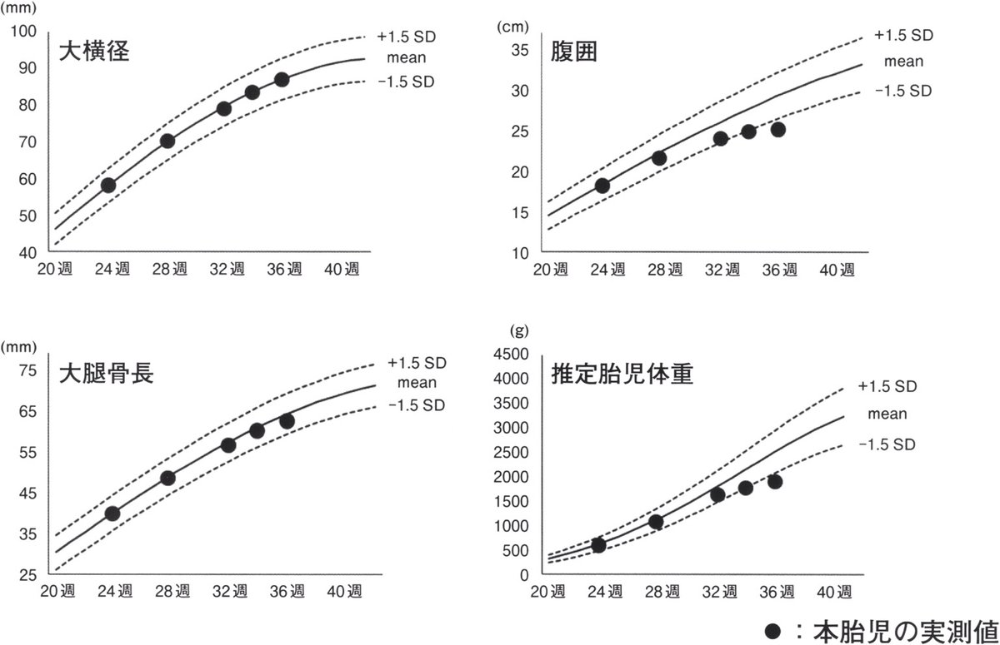
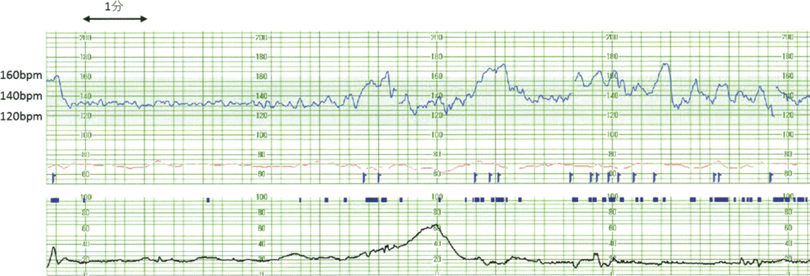
ａ 貧血になっている。
ｂ 腎血流が増加している。
ｃ 脳血流が増加している。
ｄ 臍帯血流が障害されている。
ｅ アシデミア〈酸血症〉になっている。
✅
ｃ 脳血流が増加している。
BPD正常・AC著明低値の不均衡型FGRで、慢性低酸素に対する血流再分配により脳血流が増加している。
📸 計測経過とCTGの読み方
実際の画像は参照できないが、計測値から病態を読む。BPD 87mm（0.0SD・正常）に対しAC 25cm（－2.2SD・著明低値）＝頭部は保たれ腹囲だけ小さい「不均衡型（asymmetric）FGR」。
母体合併症がなく妊娠後半に顕在化した点、羊水も減少傾向（AFI 6cm）で、胎盤機能不全による慢性低酸素が示唆される。CTG（B）では基線細変動の減少や遅発一過性徐脈が問題となる。
□ 血流再分配（brain sparing）
胎盤機能不全による慢性低酸素では、胎児は限られた酸素・血流を生命維持に不可欠な臓器へ優先配分する（血流再分配 / brain sparing）。・脳・心・副腎の血流を維持〜増加（中大脳動脈は拡張しMCAのRI/PIは低下）
・肝・腎・筋・皮膚・消化管の血流は低下
→ 腎血流低下で尿産生が減り羊水過少
→ 肝（グリコーゲン貯蔵）が最も早く発育抑制を受け腹囲〈AC〉が相対的に小さく（不均衡型・asymmetric FGR）
・胎盤血管抵抗上昇で臍帯動脈のRI/PI上昇、進行すると拡張期血流の途絶・逆流
評価は非侵襲的なものから：胎動 → NST → BPS（呼吸様運動・胎動・筋緊張・羊水量）→ 臍帯／中大脳動脈血流。
□ 選択肢の検討
| 選択肢 | 評価 |
|---|---|
| ａ 貧血になっている | 誤り。母児間血液型不適合やパルボ感染を示す所見はない |
| ｂ 腎血流が増加している | 逆。腎血流は低下し尿産生減少→羊水過少 |
| ｃ 脳血流が増加している | 正しい。血流再分配で脳・心・副腎への血流を優先（MCA拡張） |
| ｄ 臍帯血流が障害されている | やや違う。臍帯動脈RIは上昇しうるが、本問が問う「病態の本質」は脳血流増加（brain sparing） |
| ｅ アシデミアになっている | 現時点では言えない。代償されている段階で、アシデミアは代償破綻の末期像 |
Q.249(114F-51)★96%
28 歳の初妊婦（1 妊0 産）。妊娠12 週に妊婦健康診査のため来院した。妊娠8 週に受診し妊娠初期血液検査を受けた。以後、悪阻や性器出血等の症状はない。生来健康である。母がB 型肝炎ウイルスのキャリアであるという。身長156cm、体重55kg。尿蛋白（－）、糖（－）。腹部超音波検査で胎児に異常を認めない。4 週前の血液検査でHBs 抗原陽性、HBe 抗原陽性が判明した。
適切な説明はどれか。
適切な説明はどれか。
ａ 「人工妊娠中絶が必要です」
ｂ 「母乳栄養は避けましょう」
ｃ 「今すぐB 型肝炎ワクチンを接種しましょう」
ｄ 「妊娠中に赤ちゃんにウイルスが感染する可能性が高いです」
ｅ 「出産後、赤ちゃんに抗HBs ヒト免疫グロブリンを接種しましょう」
✅
ｅ 「出産後、赤ちゃんに抗HBs ヒト免疫グロブリンを接種しましょう」
HBs抗原・HBe抗原陽性で母子感染リスクが高いため、出生児にHBsヒト免疫グロブリン＋B型肝炎ワクチンを投与して感染を予防する。
🍼 B型肝炎の母子感染予防
HBs抗原陽性＝母体はキャリア、さらにHBe抗原陽性は高ウイルス量で母子感染リスクが高い。B型肝炎は主に分娩時の産道・血液曝露による感染で、経胎盤感染はまれ。
出生児に、出生直後の抗HBsヒト免疫グロブリン〈HBIG〉＋B型肝炎ワクチンを投与し、以後ワクチンを追加接種する（現在は定期接種化）。これでほぼ感染を防げる。
母乳栄養は予防処置下では禁止しない（授乳は可）。
□ 選択肢の検討
| 選択肢 | 評価 |
|---|---|
| ａ 人工妊娠中絶が必要 | 誤り。予防可能であり中絶の理由はない |
| ｂ 母乳栄養は避ける | 誤り。適切な予防処置下では母乳は可 |
| ｃ 今すぐ本人にワクチン | 誤り。母体は既にキャリアで、母体へのワクチンは無意味 |
| ｄ 妊娠中に感染する可能性が高い | 誤り。経胎盤感染はまれ、主に分娩時感染 |
| ｅ 出産後、児に抗HBsヒト免疫グロブリン | 正しい。HBIG＋ワクチンで母子感染を予防 |
Q.250(110A-44)★62%
32 歳の初妊婦。甲状腺機能の検査を希望して来院した。妊娠10 週ころから動悸を感じ、妊娠12 週で甲状腺機能異常を認めたため紹介されて受診した。甲状腺はびまん性に軽度腫大し、TSH 0.02μU/mL（基準0.2 ～4.0）、FT4 3.2ng/dL（基準0.8 ～2.2）であった。ヒト絨毛性ゴナドトロピン〈hCG〉は200,000mIU/mL（基準16,000 ～160,000）であった。
次に測定すべき検査項目はどれか。
次に測定すべき検査項目はどれか。
ａ TRAb
ｂ サイログロブリン
ｃ 尿中ヨウ素排泄量
ｄ 抗甲状腺ペルオキシダーゼ抗体
ｅ 放射性ヨード（123I）の甲状腺摂取率
✅
ａ TRAb
妊娠初期の甲状腺機能亢進ではBasedow病と妊娠一過性甲状腺機能亢進症の鑑別が必要で、まずTRAbを測定する。
🦋 妊娠初期の甲状腺機能亢進の鑑別
TSH低下・FT4上昇の甲状腺機能亢進で、妊娠初期には2つの鑑別が重要：・Basedow病（自己免疫、TRAb陽性、治療が必要）
・妊娠一過性甲状腺機能亢進症（高hCGがTSH受容体を刺激、つわり／多胎／胞状奇胎で起こり、hCG低下とともに自然軽快）
本例はhCG 200,000と高値で後者も考えられるが、鑑別のためまずTRAb（抗TSH受容体抗体）を測定する。TRAb陽性ならBasedow病。
放射性ヨード検査は妊娠中禁忌（胎児甲状腺被曝）なので行えない。
□ 選択肢の検討
| 選択肢 | 評価 |
|---|---|
| ａ TRAb | 正しい。Basedow病と妊娠一過性甲状腺機能亢進症の鑑別に必須 |
| ｂ サイログロブリン | 不適。破壊性甲状腺炎などの補助で鑑別の第一選択ではない |
| ｃ 尿中ヨウ素排泄量 | 不適。ヨード摂取量の指標で鑑別に使わない |
| ｄ 抗TPO抗体 | 不適。橋本病でも陽性となり特異性が低い |
| ｅ 放射性ヨード摂取率 | 禁忌。妊娠中は胎児甲状腺被曝のため禁忌 |
Q.251(110D-7)★87%
妊婦の急性虫垂炎について正しいのはどれか。
ａ 流早産の原因とはならない。
ｂ 非妊時と比較して発症頻度は低い。
ｃ 非妊時と比較して診断は容易である。
ｄ 妊娠経過に伴い圧痛点は頭側に移動する。
ｅ 治療は抗菌薬投与による保存療法が第一選択である。
✅
ｄ 妊娠経過に伴い圧痛点は頭側に移動する。
妊娠子宮の増大により虫垂（と圧痛点）は頭側・外側に押し上げられ、圧痛点が頭側に移動する。
🩺 妊婦の急性虫垂炎
妊娠子宮の増大に伴い虫垂は頭側（外側）へ押し上げられるため、McBurney点より頭側に圧痛が移動し、診断が難しくなる（子宮に隠れ腹膜刺激徴候も不明瞭）。発症頻度は非妊時と大きく変わらないが、診断遅れで穿孔・腹膜炎→流早産のリスクが高い。治療は原則手術（虫垂切除術）で、抗菌薬のみの保存療法が第一選択ではない。
□ 選択肢の検討
| 選択肢 | 評価 |
|---|---|
| ａ 流早産の原因とはならない | 誤り。穿孔・腹膜炎で流早産を起こしうる |
| ｂ 発症頻度は低い | 誤り。非妊時と大きく変わらない |
| ｃ 診断は容易である | 誤り。子宮増大・圧痛点移動で診断は難しい |
| ｄ 圧痛点は頭側に移動する | 正しい。妊娠子宮に押され虫垂・圧痛点が頭側へ |
| ｅ 抗菌薬による保存療法が第一選択 | 誤り。原則は虫垂切除術 |
Q.252(110I-64)★69%
21 歳の初妊婦。妊娠37 週の妊婦健康診査のため来院した。妊娠12 週の妊婦初期検査でHCV 抗体陽性と判定された。その後に行われた肝機能検査は正常で、リアルタイムPCR 法によるHCV-RNA 定量検査では「検出せず」と判定された。妊娠36 週までの妊娠経過に異常を認めない。
分娩前の説明として正しいのはどれか。
分娩前の説明として正しいのはどれか。
ａ 「お産後は母体の再検査が必要です」
ｂ 「必ずしも帝王切開の必要はありません」
ｃ 「生まれた赤ちゃんは個室に隔離します」
ｄ 「生まれた赤ちゃんは人工乳で哺育しましょう」
ｅ 「生まれた赤ちゃんにはインターフェロン投与が行われます」
✅
ｂ 「必ずしも帝王切開の必要はありません」
HCV抗体陽性でもHCV-RNA陰性（ウイルス血症なし）で母子感染リスクは低く、帝王切開は必須ではない。
🍼 C型肝炎の母子感染
HCV抗体陽性でもHCV-RNA「検出せず」＝ウイルス血症がなく感染性は極めて低い。C型肝炎の母子感染率はもともと低く（数%）、感染は主に分娩時の血液曝露による。
HCVは帝王切開で母子感染が減るという明確な根拠はなく、経腟分娩でよい（選択肢b）。隔離不要・母乳も可（HIV重複などなければ）・新生児へのインターフェロン投与は行わない。
□ 選択肢の検討
| 選択肢 | 評価 |
|---|---|
| ａ 産後に母体の再検査が必要 | 文脈外。母体のフォローは要るが「分娩前の説明」として最適でない |
| ｂ 必ずしも帝王切開の必要はない | 正しい。HCVは帝王切開の適応ではない |
| ｃ 児を個室に隔離する | 誤り。隔離不要 |
| ｄ 人工乳で哺育する | 誤り。母乳は可（禁止する根拠なし） |
| ｅ 児にインターフェロン投与 | 誤り。新生児への予防的IFN投与は行わない |
Q.254(102G-62)★連問 2/323%
（28歳1回経産婦。妊娠35週で胎児発育異常を指摘され紹介受診。喫煙20本/日を8年間。前医での胎児推定体重の推移と胎児心拍数陣痛図から胎盤機能不全によるFGRが疑われる。）
入院後の胎児超音波検査所見として考えにくいのはどれか。
入院後の胎児超音波検査所見として考えにくいのはどれか。
ａ 羊水量の減少
ｂ 頭囲/ 腹囲比の高値
ｃ 胎児呼吸様運動の消失
ｄ 臍帯動脈RI〈resistance index〉の増加
ｅ 中大脳動脈RI〈resistance index〉の増加
✅
ｅ 中大脳動脈RI〈resistance index〉の増加
FGRの血流再分配では中大脳動脈は拡張しRIは低下するため、「中大脳動脈RIの増加」は考えにくい。
🩸 FGRでの血流所見
喫煙は胎盤機能不全・FGRの重要な危険因子。慢性低酸素では血流再分配が起こる。・中大脳動脈〈MCA〉は拡張 → RIは低下（脳血流増加）が典型
したがって「中大脳動脈RIの増加」は正常〜逆の所見であり、FGRでは考えにくい（選択肢e）。
一方、羊水減少・頭囲/腹囲比の高値（頭は保たれ腹囲が小）・呼吸様運動の消失・臍帯動脈RIの増加（胎盤血管抵抗上昇）はいずれもFGRで見られる。
□ 血流再分配（brain sparing）
胎盤機能不全による慢性低酸素では、胎児は限られた酸素・血流を生命維持に不可欠な臓器へ優先配分する（血流再分配 / brain sparing）。・脳・心・副腎の血流を維持〜増加（中大脳動脈は拡張しMCAのRI/PIは低下）
・肝・腎・筋・皮膚・消化管の血流は低下
→ 腎血流低下で尿産生が減り羊水過少
→ 肝（グリコーゲン貯蔵）が最も早く発育抑制を受け腹囲〈AC〉が相対的に小さく（不均衡型・asymmetric FGR）
・胎盤血管抵抗上昇で臍帯動脈のRI/PI上昇、進行すると拡張期血流の途絶・逆流
評価は非侵襲的なものから：胎動 → NST → BPS（呼吸様運動・胎動・筋緊張・羊水量）→ 臍帯／中大脳動脈血流。
□ 選択肢の検討
| 選択肢 | 評価 |
|---|---|
| ａ 羊水量の減少 | あり得る。腎血流低下で尿産生減少 |
| ｂ 頭囲/腹囲比の高値 | あり得る。不均衡型FGR（腹囲が小さい） |
| ｃ 胎児呼吸様運動の消失 | あり得る。低酸素の進行で消失 |
| ｄ 臍帯動脈RIの増加 | あり得る。胎盤血管抵抗上昇 |
| ｅ 中大脳動脈RIの増加 | これが考えにくい。brain sparingでMCAのRIは低下する |
Q.255(102G-63)★連問 3/324%
（上記のFGR症例。児先進部は頭位・未固定、子宮口1cm開大。）入院後のBPS〈biophysical profile score〉は6 点であった。
対応として適切なのはどれか。
対応として適切なのはどれか。
ａ 経過観察
ｂ 副腎皮質ステロイド投与
ｃ 羊水穿刺
ｄ 分娩誘発
ｅ 帝王切開術
✅
ｄ 分娩誘発
BPS 6点は胎児機能不全が疑われる境界域で、妊娠35週の頭位・FGRなら分娩誘発で娩出を図る。
🚼 BPS 6点への対応
BPS 10点＝正常、8点＝正常範囲、6点＝要注意（equivocal）、4点以下＝異常。妊娠35週のFGRでBPS 6点＝胎児機能不全が疑われる境界域であり、これ以上子宮内に置くより娩出が安全と判断される。頭位で子宮口も開き始めており、まず分娩誘発で経腟分娩を試みる。
（胎児機能不全が高度で経腟分娩に耐えられない、あるいは誘発が奏効しない場合に帝王切開へ移行する。BPS 6点の段階でいきなり帝王切開を選ぶ必要はない。）
□ 選択肢の検討
| 選択肢 | 評価 |
|---|---|
| ａ 経過観察 | 不適。FGR＋BPS 6点を放置できない |
| ｂ 副腎皮質ステロイド投与 | 不適。妊娠35週で肺成熟促進の適応は乏しく、待つ余裕もない |
| ｃ 羊水穿刺 | 不適。肺成熟確認は本状況の優先事項でない |
| ｄ 分娩誘発 | 正しい。頭位・週数十分でまず経腟分娩を図る |
| ｅ 帝王切開術 | この時点では性急。BPS 6点で頭位、まず誘発。胎児機能不全が高度／誘発無効なら帝切へ |
A
一般問題
Q.253〜Q.328
Q.253(102G-61)連問 1/383%
次の文を読み、253〜255の問いに答えよ。
28 歳の1 回経産婦。妊娠35 週時に胎児発育異常を指摘され紹介状を持って来院した。
現病歴：分娩予定日は最終月経から算出された。定期的に妊婦健康診査を受けており、これまで血圧や尿検査の異常を指摘されたことはない。4 週前から胎児の発育異常が疑われていた。
既往歴：特記すべきことはない。妊娠・分娩歴：25 歳時に妊娠38 週で3,200g の男児を正常経腟分娩。
生活歴：喫煙は20 本/ 日を8 年間。
現 症：身長155cm、体重50kg（非妊時45kg）、腹囲78cm、子宮底長28cm。体温36.6℃。脈拍80/ 分、整。血圧120/60mmHg。意識は清明。腹部は軟で、時折不規則な子宮収縮を触知する。児先進部は頭部で未固定、子宮口1cm 開大、展退度30％、破水はない。超音波検査で胎児奇形は認めない。前医での胎児推定体重の推移（A）と入院後の胎児心拍数陣痛図（B）とを示す。AB ・・／
在胎週数の確認に最も有用なのはどれか。
28 歳の1 回経産婦。妊娠35 週時に胎児発育異常を指摘され紹介状を持って来院した。
現病歴：分娩予定日は最終月経から算出された。定期的に妊婦健康診査を受けており、これまで血圧や尿検査の異常を指摘されたことはない。4 週前から胎児の発育異常が疑われていた。
既往歴：特記すべきことはない。妊娠・分娩歴：25 歳時に妊娠38 週で3,200g の男児を正常経腟分娩。
生活歴：喫煙は20 本/ 日を8 年間。
現 症：身長155cm、体重50kg（非妊時45kg）、腹囲78cm、子宮底長28cm。体温36.6℃。脈拍80/ 分、整。血圧120/60mmHg。意識は清明。腹部は軟で、時折不規則な子宮収縮を触知する。児先進部は頭部で未固定、子宮口1cm 開大、展退度30％、破水はない。超音波検査で胎児奇形は認めない。前医での胎児推定体重の推移（A）と入院後の胎児心拍数陣痛図（B）とを示す。AB ・・／
在胎週数の確認に最も有用なのはどれか。
ａ 子宮底長
ｂ 胎動初覚時期
ｃ 悪阻の出現時期
ｄ 児心音の聴取時期
ｅ 妊娠初期の胎児超音波検査
✅
ｅ 妊娠初期の胎児超音波検査
在胎週数（分娩予定日）の確認には、妊娠初期の胎児超音波検査（CRL）が最も正確である。
📏 在胎週数の推定
妊娠初期（8〜11週ころ）の頭殿長〈CRL〉による超音波計測が、在胎週数の確認に最も正確。個体差が小さい時期のためである。最終月経は月経不順や排卵日のずれで誤差が大きく、子宮底長・胎動初覚・悪阻・児心音聴取時期はいずれも個人差が大きく不正確。本例のように後期にFGRを疑うとき、週数の正確な確認は「本当に小さいのか」の判断に不可欠。
□ 選択肢の検討
| 選択肢 | 評価 |
|---|---|
| ａ 子宮底長 | 不正確。羊水量・胎児数・母体体格で変動 |
| ｂ 胎動初覚時期 | 不正確。初産・経産で差があり主観的 |
| ｃ 悪阻の出現時期 | 不正確。個人差が大きい |
| ｄ 児心音の聴取時期 | 不正確。機器・体格に左右される |
| ｅ 妊娠初期の胎児超音波検査 | 正しい。CRLが最も正確な週数指標 |
Q.256(118A-25)55%
28 歳の女性（2 妊1 産）。妊娠32 週に胎児発育不全を指摘され紹介受診した。妊娠10 週の妊婦初期検査では血液型O 型RhD（＋）、間接Coombs 試験陰性、HBs 抗原陰性、HCV 抗体陰性、風疹HI 抗体価128 倍、RPR 1 倍未満、TPHA 陰性、HIV 抗原・抗体陰性であった。妊娠15 週に感冒様症状が数日続いたが、自然に軽快したためそのままにしていた。来院時の胎児超音波検査で大横径〈BPD〉73mm（－2 SD）、腹囲〈AC〉23cm、大腿骨長〈FL〉24mm、推定胎児体重〈EFW〉1,368g（－2 SD）、胎児に腹水を認める。
考えられる母子感染症はどれか。
考えられる母子感染症はどれか。
ａ 水 痘
ｂ 梅 毒
ｃ 風 疹
ｄ B 型肝炎
ｅ サイトメガロウイルス感染症
✅
ｅ サイトメガロウイルス感染症
初期検査で他の感染は否定的、妊娠15週の感冒様症状後にFGR＋胎児腹水（胎児水腫）を来しており、サイトメガロウイルス感染症が考えられる。
🦠 FGR＋胎児腹水と母子感染
初期スクリーニングで風疹（免疫あり）・梅毒・HBV・HCV・HIVはいずれも否定的。妊娠15週の感冒様症状（初感染）の後にFGR＋胎児腹水（胎児水腫）が出現しており、サイトメガロウイルス〈CMV〉初感染が最も考えられる。
CMVの先天感染はFGR・小頭症・脳室周囲石灰化・肝脾腫・血小板減少・難聴を来す。
□ 主な母子感染
| 病原体 | 感染経路 | 胎児・新生児への影響 |
|---|---|---|
| 風疹〈Rubella〉 | 経胎盤 | 先天性風疹症候群：白内障・心奇形（PDA）・難聴（三徴） |
| サイトメガロウイルス〈CMV〉 | 経胎盤・産道・母乳 | FGR・小頭症・脳室周囲石灰化・難聴・肝脾腫・血小板減少 |
| トキソプラズマ | 経胎盤 | 水頭症・脳内石灰化・網脈絡膜炎（生肉・ネコ糞便） |
| 梅毒トレポネーマ | 経胎盤 | 先天梅毒：肝脾腫・骨軟骨炎・血小板減少・Hutchinson歯 |
| パルボウイルスB19 | 経胎盤 | 胎児貧血・胎児水腫（伝染性紅斑） |
| HBV／HCV | 主に産道（血液） | キャリア化。HBVは児にHBIG＋ワクチンで予防 |
| HIV | 経胎盤・産道・母乳 | 帝王切開＋母児抗HIV薬＋断乳で予防 |
| HTLV-1 | 主に母乳 | 成人T細胞白血病〈ATL〉。断乳（人工乳）で予防 |
| GBS | 産道 | 新生児敗血症・髄膜炎。分娩時ペニシリン |
| 単純ヘルペス〈HSV〉 | 産道 | 新生児ヘルペス（脳炎・全身型）。初発は帝王切開 |
□ 選択肢の検討
| 選択肢 | 評価 |
|---|---|
| ａ 水痘 | 低い。水痘・帯状疱疹の病歴・皮疹の記載がない |
| ｂ 梅毒 | 否定。RPR・TPHA陰性 |
| ｃ 風疹 | 否定。HI抗体128倍で既に免疫あり（初感染でない） |
| ｄ B型肝炎 | 否定。HBs抗原陰性、かつFGR・水腫は非典型 |
| ｅ サイトメガロウイルス感染症 | 正しい。妊娠中の初感染でFGR＋胎児水腫を説明 |
Q.257(118A-61)📷 画像76%
28 歳の初妊婦（1 妊0 産）。妊娠31 週6 日、軽度の下腹部痛を自覚し来院した。実家に帰省した際に不規則な下腹部痛を自覚し実家近くの産科診療所を初めて受診した。それまで妊娠初期から自宅近くの産科診療所で妊婦健康診査を受けていた。来院時、下腹部痛は消失し性器出血の自覚はない。意識は清明。身長156cm、体重68kg（非妊時53kg）。体温37.1℃。脈拍72/ 分、整。血圧136/88mmHg。呼吸数18/ 分。腹部は軟、圧痛を認めない。下腿に軽度の圧痕を認める。内診と経腟超音波検査で異常を認めない。持参した母子健康手帳の記載内容を示す。
この妊婦に対する評価で適切なのはどれか。
この妊婦に対する評価で適切なのはどれか。
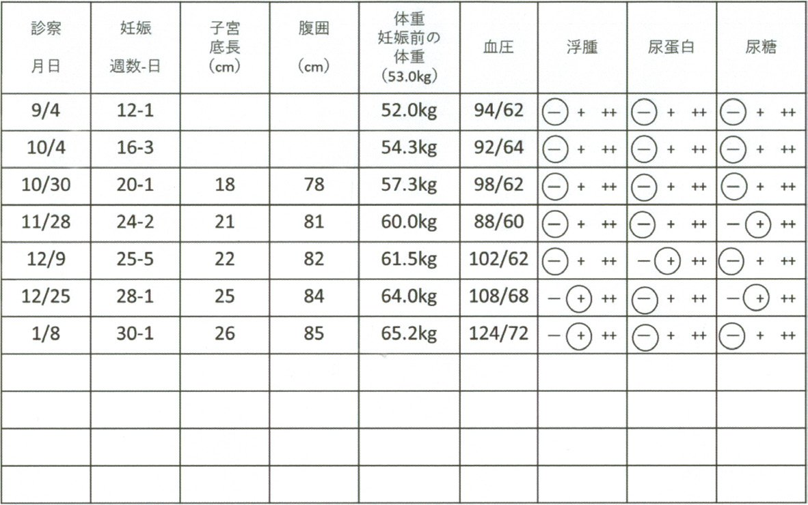
ａ 妊娠糖尿病である。
ｂ 胎児発育不全である。
ｃ 体重増加量は適切である。
ｄ 妊娠高血圧症候群である。
ｅ 妊婦健康診査の受診間隔は適切である。
✅
ｅ 妊婦健康診査の受診間隔は適切である。
妊娠中期は2週ごとの健診が標準で、これまでの受診間隔は適切である（血圧・胎児発育に明らかな異常はない）。
📖 母子健康手帳と妊婦健診の間隔
実際の記載は参照できないが、選択肢を検討する。妊婦健康診査の標準間隔：
・妊娠初期〜23週 → 4週ごと
・妊娠24〜35週 → 2週ごと
・妊娠36週〜分娩 → 1週ごと
本例は妊娠31週で、これまで初期から定期受診しており受診間隔は適切（選択肢e）。
□ 選択肢の検討
| 選択肢 | 評価 |
|---|---|
| ａ 妊娠糖尿病である | 判定不能。OGTT等の記載がなく断定できない |
| ｂ 胎児発育不全である | 否定的。超音波で異常なし |
| ｃ 体重増加量は適切である | 誤り。非妊時53kg→68kg（＋15kg）で普通体格の推奨増加7〜12kgを超え過多 |
| ｄ 妊娠高血圧症候群である | 誤り。血圧136/88で140/90未満、蛋白尿もなし |
| ｅ 受診間隔は適切である | 正しい。妊娠中期は2週ごとで標準的 |
Q.258(118B-40)95%
38 歳の初産婦（1 妊0 産）。妊娠32 週に上腹部痛のため来院した。来院前日から頭痛、眼のちかちかする感じ（眼華閃発）、心窩部不快感、手指のこわばり、全身の浮腫および尿量減少を自覚し、本日は上腹部から右季肋部にかけての疼痛、倦怠感および悪心を訴えている。脈拍84/ 分、整。血圧156/102mmHg。胎児心拍数陣痛図では異常を認めない。
この患者で低下していることが予測されるものはどれか。
この患者で低下していることが予測されるものはどれか。
ａ LD
ｂ AST
ｃ 血小板数
ｄ ヘマトクリット値
ｅ 尿蛋白/ クレアチニン比
✅
ｃ 血小板数
重症妊娠高血圧腎症からHELLP症候群への進展が疑われ、血小板数が低下する。
🩺 切迫子癇・HELLPの検査所見
頭痛・眼華閃発・上腹部（右季肋部）痛＋高血圧（156/102）＋浮腫・乏尿は重症妊娠高血圧腎症〜切迫子癇、HELLP症候群への進展を示す。HELLP＝Hemolysis（溶血）・Elevated Liver enzymes（肝酵素上昇）・Low Platelets（血小板減少）。
したがって低下するのは血小板数。LD・ASTは上昇、Htは血液濃縮で上昇、尿蛋白/Cr比も上昇する（＝低下するのは血小板のみ）。
□ 重症化の指標
妊娠高血圧症候群の重症化＝母体の臓器障害：血圧≧160/110、血小板減少・肝逸脱酵素上昇・溶血（HELLP）、腎障害、肺水腫、頭痛・眼華閃発・上腹部痛（切迫子癇）、子癇。なお浮腫・尿蛋白量そのものは重症度分類の項目ではない。□ 選択肢の検討
| 選択肢 | 評価 |
|---|---|
| ａ LD | 上昇。溶血・肝障害で上昇 |
| ｂ AST | 上昇。肝逸脱酵素上昇 |
| ｃ 血小板数 | 正しい。HELLPで低下 |
| ｄ ヘマトクリット値 | 上昇。血漿漏出・血液濃縮で上昇 |
| ｅ 尿蛋白/クレアチニン比 | 上昇。腎障害で蛋白尿増加 |
Q.259(117A-1)3択91%
母体背景と胎児疾患の組合せで正しいのはどれか。3 つ選べ。
ａ 高齢妊娠 ────────── 13trisomy
ｂ 風疹感染 ────────── 先天性心疾患
ｃ 妊娠高血圧症候群 ────── 不整脈
ｄ 全身性エリテマトーデス ─── 頭蓋内出血
ｅ パルボウイルスB19 感染 ─── 貧 血
✅
ａ 高齢妊娠 ────────── 13trisomy
ｂ 風疹感染 ────────── 先天性心疾患
ｅ パルボウイルスB19 感染 ─── 貧 血
高齢妊娠→13trisomy、風疹感染→先天性心疾患、パルボウイルスB19感染→胎児貧血、の3組が正しい。
🧬 母体背景と胎児疾患
・高齢妊娠 → 染色体異常（21・18・13trisomy）：卵子の加齢で不分離が増える・風疹感染 → 先天性心疾患（PDA等）：先天性風疹症候群の三徴（白内障・心奇形・難聴）
・パルボウイルスB19 → 胎児貧血・胎児水腫：赤芽球への感染で造血抑制
□ 主な母子感染
| 病原体 | 感染経路 | 胎児・新生児への影響 |
|---|---|---|
| 風疹〈Rubella〉 | 経胎盤 | 先天性風疹症候群：白内障・心奇形（PDA）・難聴（三徴） |
| サイトメガロウイルス〈CMV〉 | 経胎盤・産道・母乳 | FGR・小頭症・脳室周囲石灰化・難聴・肝脾腫・血小板減少 |
| トキソプラズマ | 経胎盤 | 水頭症・脳内石灰化・網脈絡膜炎（生肉・ネコ糞便） |
| 梅毒トレポネーマ | 経胎盤 | 先天梅毒：肝脾腫・骨軟骨炎・血小板減少・Hutchinson歯 |
| パルボウイルスB19 | 経胎盤 | 胎児貧血・胎児水腫（伝染性紅斑） |
| HBV／HCV | 主に産道（血液） | キャリア化。HBVは児にHBIG＋ワクチンで予防 |
| HIV | 経胎盤・産道・母乳 | 帝王切開＋母児抗HIV薬＋断乳で予防 |
| HTLV-1 | 主に母乳 | 成人T細胞白血病〈ATL〉。断乳（人工乳）で予防 |
| GBS | 産道 | 新生児敗血症・髄膜炎。分娩時ペニシリン |
| 単純ヘルペス〈HSV〉 | 産道 | 新生児ヘルペス（脳炎・全身型）。初発は帝王切開 |
□ 選択肢の検討
| 選択肢 | 評価 |
|---|---|
| ａ 高齢妊娠 ─ 13trisomy | 正しい。加齢で染色体不分離が増加 |
| ｂ 風疹感染 ─ 先天性心疾患 | 正しい。先天性風疹症候群でPDA等 |
| ｃ 妊娠高血圧症候群 ─ 不整脈 | 誤り。HDPはFGR・胎児機能不全を来す（不整脈ではない） |
| ｄ SLE ─ 頭蓋内出血 | 誤り。SLE（抗SS-A抗体）は先天性房室ブロック・新生児ループス |
| ｅ パルボB19 ─ 貧血 | 正しい。赤芽球感染→胎児貧血・水腫 |
Q.260(117A-44)2択70%
40 歳の初妊婦（1 妊0 産）。妊娠24 週、随時血糖110mg/dL であったため、自宅近くの産科診療所から紹介され受診した。既往歴、家族歴に特記すべきことはない。子宮収縮の自覚はなく、性器出血を認めない。身長160cm、体重59kg（妊娠前体重55kg）。体温36.7℃。脈拍88/ 分、整。血圧110/80mmHg。経口グルコース負荷試験〈75g OGTT〉：負荷前値90mg/dL、1 時間値190mg/dL、2 時間値160mg/dL。HbA1c 5.4％（基準4.6 ～6.2）。
適切な対応はどれか。2 つ選べ。
適切な対応はどれか。2 つ選べ。
ａ 運動療法を勧める。
ｂ 経口血糖降下薬を用いる。
ｃ 食事は4 ～6 分割食を勧める。
ｄ 食後2 時間の血糖値150mg/dL を目標とする。
ｅ 1 日の摂取エネルギーを1,200kcal に制限する。
✅
ａ 運動療法を勧める。
ｃ 食事は4 ～6 分割食を勧める。
75g OGTTで1時間値・2時間値が基準を超え妊娠糖尿病であり、運動療法と4〜6分割食による食事療法を行う。
🍬 妊娠糖尿病の初期対応
75g OGTT：負荷前90（基準未満）・1時間190（≧180○）・2時間160（≧153○）で妊娠糖尿病〈GDM〉と診断。HbA1c 5.4%と低く「明らかな糖尿病」ではない。
まず食事療法（4〜6分割食）＋適度な運動療法を行い、それでも血糖目標（空腹時95・食後2時間120mg/dL未満）に達しなければインスリンを導入する。
□ 診断基準（75g OGTT）
| 測定時点 | 基準値 | 判定 |
|---|---|---|
| 空腹時（負荷前） | ≧92mg/dL | |
| 1時間値 | ≧180mg/dL | 3項目のうち1つ以上で妊娠糖尿病〈GDM〉 |
| 2時間値 | ≧153mg/dL |
□ 選択肢の検討
| 選択肢 | 評価 |
|---|---|
| ａ 運動療法を勧める | 正しい。合併症がなければ適度な運動を推奨 |
| ｂ 経口血糖降下薬を用いる | 誤り。妊娠中はインスリンが原則 |
| ｃ 食事は4〜6分割食を勧める | 正しい。食後高血糖・ケトーシス予防 |
| ｄ 食後2時間150mg/dLを目標 | 誤り。目標は食後2時間120mg/dL未満 |
| ｅ 1日1,200kcalに制限 | 誤り。極端な制限はケトーシス・FGRを招く |
Q.261(117D-49)88%
生後1 時間の男児。在胎38 週、体重4,100g、帝王切開で出生した。Apgar スコアは8 点（1 分）、9 点（5 分）。母親は33 歳、初産で妊娠糖尿病と診断されていたが、定期的な妊婦健康診査を受診していなかった。体温37.2℃。心拍数140/ 分、整。血圧72/48mmHg。呼吸数50/ 分。SpO2 98％（room air）。心音と呼吸音とに異常を認めない。腹部は軽度の膨隆を認める。肝臓を右肋骨弓下に1cm 触知するが、脾臓は触知しない。皮膚は赤く、末梢性チアノーゼを認める。
直ちに行うべき検査はどれか。
直ちに行うべき検査はどれか。
ａ 血糖測定
ｂ 心エコー検査
ｃ 頭部超音波検査
ｄ ビリルビン測定
ｅ 胸部エックス線検査
✅
ａ 血糖測定
母体妊娠糖尿病＋巨大児（4,100g）で高インスリン血症による新生児低血糖のリスクが高く、直ちに血糖を測定する。
🍼 糖尿病母体児〈IDM〉と新生児低血糖
母体妊娠糖尿病で血糖管理が不十分（未受診）だと、母体高血糖→胎児高インスリン血症→巨大児（4,100g）となる。出生後は母体からの糖供給が絶たれるのに高インスリンが残り、生後数時間以内に新生児低血糖を来す。無症候でも脳障害の危険があるため、直ちに血糖を測定し、必要ならブドウ糖を補充する。
□ 母体高血糖の児への影響
母体の高血糖 → 胎児も高血糖 → 胎児の高インスリン血症が病態の中心。・インスリンは胎児の成長ホルモンとして働き 巨大児（EFW大）・肩甲難産・分娩外傷
・出生後は母体からの糖供給が絶たれるのに高インスリンが残り 新生児低血糖
・その他 新生児呼吸窮迫症候群〈RDS〉・多血症・高ビリルビン血症・低カルシウム血症
・妊娠初期の高血糖は 胎児奇形（心奇形・尾部退行症候群・神経管閉鎖障害）
・母体は 妊娠高血圧症候群・羊水過多・巨大児による難産を合併しやすい
□ 選択肢の検討
| 選択肢 | 評価 |
|---|---|
| ａ 血糖測定 | 正しい。IDM＋巨大児でまず新生児低血糖を否定 |
| ｂ 心エコー検査 | 次順位。心筋症・心奇形も多いが緊急は低血糖 |
| ｃ 頭部超音波検査 | 不急。頭蓋内出血を疑う所見がない |
| ｄ ビリルビン測定 | 後で。高ビリルビン血症も多いが生後1時間の最優先ではない |
| ｅ 胸部エックス線検査 | 不急。呼吸障害の所見がない |
Q.262(116E-10)95%
妊娠高血圧症候群の病型分類に含まれないのはどれか。
ａ 妊娠高血圧
ｂ 妊娠蛋白尿
ｃ 高血圧合併妊娠
ｄ 妊娠高血圧腎症
ｅ 加重型妊娠高血圧腎症
✅
ｂ 妊娠蛋白尿
妊娠高血圧症候群の病型は4つ（妊娠高血圧腎症・妊娠高血圧・加重型妊娠高血圧腎症・高血圧合併妊娠）で、「妊娠蛋白尿」は含まれない。
🩺 妊娠高血圧症候群〈HDP〉の病型
HDPの4病型：① 妊娠高血圧腎症〈PE〉（高血圧＋蛋白尿等）
② 妊娠高血圧〈GH〉（高血圧のみ）
③ 加重型妊娠高血圧腎症（既存高血圧＋新規蛋白尿等）
④ 高血圧合併妊娠（既存高血圧のみ）
「妊娠蛋白尿」という病型は存在しない。蛋白尿のみで高血圧を伴わないものはHDPに含めない。
□ 選択肢の検討
| 選択肢 | 評価 |
|---|---|
| ａ 妊娠高血圧 | 含まれる（GH） |
| ｂ 妊娠蛋白尿 | 含まれない。病型に存在しない |
| ｃ 高血圧合併妊娠 | 含まれる |
| ｄ 妊娠高血圧腎症 | 含まれる（PE） |
| ｅ 加重型妊娠高血圧腎症 | 含まれる |
Q.263(115C-21)98%
母体背景と周産期合併症の組合せで誤っているのはどれか。
ａ 喫 煙 ─────────── 常位胎盤早期剝離
ｂ 高 齢 ─────────── 流 産
ｃ 肥 満 ─────────── 妊娠高血圧症候群
ｄ 低体重 ─────────── 巨大児出産
ｅ 子宮筋腫術後 ──────── 子宮破裂
✅
ｄ 低体重 ─────────── 巨大児出産
巨大児出産は糖尿病・肥満などが背景で、低体重（やせ）はむしろ胎児発育不全・低出生体重児と関連するため誤り。
🩺 母体背景と周産期合併症
・喫煙 → 常位胎盤早期剝離（血管障害）：正しい・高齢 → 流産（染色体異常増加）：正しい
・肥満 → 妊娠高血圧症候群・妊娠糖尿病：正しい
・低体重（やせ）→ 胎児発育不全・低出生体重児（巨大児ではない）：組合せdが誤り
・子宮筋腫術後（子宮手術瘢痕）→ 子宮破裂：正しい
□ 選択肢の検討
| 選択肢 | 評価 |
|---|---|
| ａ 喫煙 ─ 常位胎盤早期剝離 | 正しい。喫煙は早剝の危険因子 |
| ｂ 高齢 ─ 流産 | 正しい。染色体異常増加 |
| ｃ 肥満 ─ 妊娠高血圧症候群 | 正しい |
| ｄ 低体重 ─ 巨大児出産 | 誤り。低体重はFGR・低出生体重児と関連。巨大児は糖尿病・肥満 |
| ｅ 子宮筋腫術後 ─ 子宮破裂 | 正しい。子宮壁の瘢痕が破裂の素地 |
Q.264(115D-16)📷 画像92%
28 歳の女性（1 妊0 産）。妊娠36 週2 日、けいれん発作のため救急搬送された。これまでの妊娠経過に異常は認めなかったが、2 日前の妊婦健康診査で血圧142/84mmHg と高血圧を初めて指摘された。家族によると、今朝、突然意識を失った後に全身のけいれんが起こったという。搬入時の意識レベルはJCSⅠ-2。けいれんは治まっていた。体温37.2℃。心拍数82/ 分。血圧164/96mmHg。呼吸数20/ 分。SpO2 96％（マスク5L/ 分酸素投与下）。頭部MRI のT2 強調像（A）及び拡散強調像（B）とを示す。
この患者の脳にみられる病態はどれか。
この患者の脳にみられる病態はどれか。

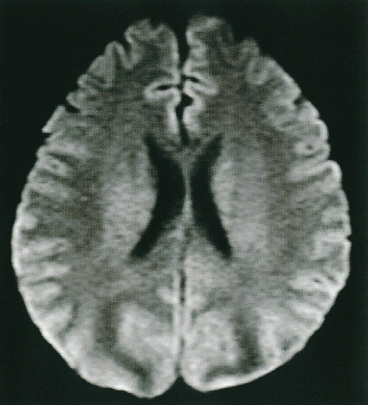
ａ 梗 塞
ｂ 出 血
ｃ 腫 瘍
ｄ 脱 髄
ｅ 浮 腫
✅
ｅ 浮 腫
子癇に伴うPRES（可逆性後頭葉白質脳症）で、血管性浮腫が主体である。
📸 子癇とPRES（頭部MRI）
妊娠20週以降の新規高血圧＋全身けいれん＝子癇。実際の画像は参照できないが、子癇の脳病態はPRES〈posterior reversible encephalopathy syndrome：可逆性後頭葉白質脳症〉。
・T2/FLAIRで後頭〜頭頂葉優位の高信号（血管性浮腫）
・拡散強調像〈DWI〉では多くは高信号でない（＝細胞性浮腫＝梗塞ではなく、血管性浮腫）
血圧管理とMgSO₄で多くは可逆性に改善する。
□ 選択肢の検討
| 選択肢 | 評価 |
|---|---|
| ａ 梗塞 | 誤り。DWIで明瞭な拡散制限がなく細胞性浮腫（梗塞）とは異なる |
| ｂ 出血 | 誤り。出血の信号パターンではない |
| ｃ 腫瘍 | 誤り。占拠性病変ではない |
| ｄ 脱髄 | 誤り。脱髄疾患の分布・経過ではない |
| ｅ 浮腫 | 正しい。PRESの血管性浮腫（可逆性） |
Q.265(115D-42)82%
40 歳の初妊婦（1 妊0 産）。妊娠36 週の妊婦健康診査で血圧の上昇が認められ緊急入院となった。妊娠32 週までは特に異常を指摘されていなかったが、妊娠34 週で軽度の血圧上昇を指摘されていた。既往歴に特記すべきことはない。体温36.9℃。脈拍80/ 分、整。血圧160/100mmHg。腹部は軟で子宮に圧痛を認めない。両下肢に浮腫を認める。尿蛋白は2 ＋。随時尿の尿蛋白/Cr 比は1.0g/gCr（基準0.15 未満）。Hb 11.0g/dL、血小板23 万。AST 15U/L、ALT 10U/L、LD 180U/L（基準120 ～245）。胎児心拍数陣痛図で胎児はreassuring で子宮収縮は認めない。
診断はどれか。
診断はどれか。
ａ 妊娠高血圧
ｂ HELLP 症候群
ｃ 高血圧合併妊娠
ｄ 妊娠高血圧腎症
ｅ 加重型妊娠高血圧腎症
✅
ｄ 妊娠高血圧腎症
妊娠32週まで正常で20週以降（34週〜）に初発した高血圧＋蛋白尿であり、妊娠高血圧腎症である。
🩺 病型の判定
妊娠32週まで正常 → 34週から高血圧、36週に高血圧＋蛋白尿（尿蛋白/Cr 1.0）。妊娠20週以降に新規発症した高血圧＋蛋白尿 → 妊娠高血圧腎症。
血小板・肝酵素正常でHELLPではない。既存高血圧がないので加重型・高血圧合併妊娠でもない。
□ 選択肢の検討
| 選択肢 | 評価 |
|---|---|
| ａ 妊娠高血圧 | 誤り。蛋白尿があり「高血圧のみ」ではない |
| ｂ HELLP 症候群 | 誤り。溶血・肝酵素上昇・血小板減少なし |
| ｃ 高血圧合併妊娠 | 誤り。20週前からの高血圧がない |
| ｄ 妊娠高血圧腎症 | 正しい。20週以降初発の高血圧＋蛋白尿 |
| ｅ 加重型妊娠高血圧腎症 | 誤り。既存高血圧・腎疾患がない |
Q.266(115D-70)2択46%
日齢0 の女児。妊娠初期の健診で妊娠確定後、妊婦健康診査を受診していなかった。陣痛発来のため前医を受診し、低出生体重のため救急車で搬入された。在胎39 週1 日、体重2,010g、Apgar スコアは7 点（1 分）、8 点（5 分）で出生した。体温36.7℃。心拍数120/ 分。血圧60/35mmHg。呼吸数40/ 分。SpO2 100％（room air）。活気不良、啼泣は弱い。第二肋間胸骨左縁にLevine 2/6 の連続性雑音を認めた。血液所見：Hb 18.7g/dL、白血球10,800、血小板7.9 万、IgM 350mg/dL（基準0 ～20）であった。妊娠初期に母親は微熱と発疹を認めたが医療機関は受診しなかったという。
母親が妊娠中に罹患した可能性が高い疾患はどれか。2 つ選べ。
母親が妊娠中に罹患した可能性が高い疾患はどれか。2 つ選べ。
ａ 水 痘
ｂ 梅 毒
ｃ 風 疹
ｄ 伝染性紅斑
ｅ A 群β溶連菌感染症
✅
ｂ 梅 毒
ｃ 風 疹
低出生体重・連続性雑音（PDA）・血小板減少・IgM高値の先天感染像であり、母体の微熱＋発疹から風疹と梅毒が考えられる。
🦠 先天感染を示す新生児所見
この児はFGR/低出生体重・連続性雑音（PDA）・血小板減少（7.9万）・IgM高値（350）を呈し、子宮内感染（TORCH）の典型像。IgM高値は児自身が産生した＝先天感染の証拠。母体の妊娠初期の微熱＋発疹から：
・風疹：先天性風疹症候群（PDA・白内障・難聴）、血小板減少（blueberry muffin）
・梅毒：先天梅毒（肝脾腫・骨軟骨炎・血小板減少）、母体の発疹（二期疹）
の2つが該当する。
□ 主な母子感染
| 病原体 | 感染経路 | 胎児・新生児への影響 |
|---|---|---|
| 風疹〈Rubella〉 | 経胎盤 | 先天性風疹症候群：白内障・心奇形（PDA）・難聴（三徴） |
| サイトメガロウイルス〈CMV〉 | 経胎盤・産道・母乳 | FGR・小頭症・脳室周囲石灰化・難聴・肝脾腫・血小板減少 |
| トキソプラズマ | 経胎盤 | 水頭症・脳内石灰化・網脈絡膜炎（生肉・ネコ糞便） |
| 梅毒トレポネーマ | 経胎盤 | 先天梅毒：肝脾腫・骨軟骨炎・血小板減少・Hutchinson歯 |
| パルボウイルスB19 | 経胎盤 | 胎児貧血・胎児水腫（伝染性紅斑） |
| HBV／HCV | 主に産道（血液） | キャリア化。HBVは児にHBIG＋ワクチンで予防 |
| HIV | 経胎盤・産道・母乳 | 帝王切開＋母児抗HIV薬＋断乳で予防 |
| HTLV-1 | 主に母乳 | 成人T細胞白血病〈ATL〉。断乳（人工乳）で予防 |
| GBS | 産道 | 新生児敗血症・髄膜炎。分娩時ペニシリン |
| 単純ヘルペス〈HSV〉 | 産道 | 新生児ヘルペス（脳炎・全身型）。初発は帝王切開 |
□ 選択肢の検討
| 選択肢 | 評価 |
|---|---|
| ａ 水痘 | 低い。特徴的な四肢瘢痕・皮膚分節病変がない |
| ｂ 梅毒 | 正しい。先天梅毒で血小板減少・肝障害。母体発疹に合致 |
| ｃ 風疹 | 正しい。PDA・血小板減少。母体の微熱＋発疹に合致 |
| ｄ 伝染性紅斑（パルボB19） | 低い。主病態は胎児貧血・水腫でPDAは典型でない |
| ｅ A群β溶連菌 | 低い。先天奇形・PDAとは結びつかない |
Q.267(115E-34)86%
37 歳の初妊婦（1 妊0 産）。妊娠26 週。血糖値の異常を指摘され紹介受診した。妊娠初期から妊婦健康診査を受けていた。妊娠24 週の50g ブドウ糖負荷試験で血糖値156mg/dL であったため精査となった。既往歴に特記すべきものはない。身長156cm、体重75kg（非妊時69kg）。血圧122/76mmHg。尿蛋白（－）、尿糖（±）。来院後の75g 経口ブドウ糖負荷試験〈OGTT〉は、空腹時血糖値90mg/dL、1 時間値192mg/dL、2 時間値138mg/dL であった。
今後の管理としてまず行うのはどれか。
今後の管理としてまず行うのはどれか。
ａ 運動療法
ｂ 経過観察
ｃ 食事療法
ｄ インスリン投与
ｅ 経口血糖降下薬投与
✅
ｃ 食事療法
75g OGTTで1時間値が基準を超え妊娠糖尿病であり、まず食事療法（分割食）を行う。
🍬 妊娠糖尿病の初期管理
75g OGTT：空腹時90・1時間192（≧180○）・2時間138で1項目該当し妊娠糖尿病〈GDM〉。HbA1c記載なく「明らかな糖尿病」ではない。
GDMの治療はまず食事療法（4〜6分割食）から。これで血糖目標に届かなければインスリンを追加する。
□ 妊娠糖尿病の管理
① 食事療法が基本：分割食（1日4〜6回）で食後高血糖とケトーシスを防ぐ。極端なカロリー制限（1,200kcalなど）は胎児発育不全・ケトーシスを招くため行わない。② 薬物は原則インスリン：経口血糖降下薬は胎盤を通過するため用いない。
③ 血糖目標：空腹時95mg/dL未満・食後2時間120mg/dL未満。
④ 産後の再評価：GDMは産褥（分娩後6〜12週）に75g OGTTを再検する。
□ 選択肢の検討
| 選択肢 | 評価 |
|---|---|
| ａ 運動療法 | 併用はよいが、「まず行う」中心は食事療法 |
| ｂ 経過観察 | 誤り。GDMと診断され放置はできない |
| ｃ 食事療法 | 正しい。まず分割食による食事療法 |
| ｄ インスリン投与 | 次順位。食事療法で目標未達の場合に導入 |
| ｅ 経口血糖降下薬 | 誤り。妊娠中は用いない |
Q.268(114F-56)98%
28 歳の初妊婦（1 妊0 産）。妊娠12 週の血液検査で異常を指摘され妊娠16 週に紹介受診した。検査結果：風疹抗体〈HI〉8 倍未満（基準8 倍未満）、HTLV-1 抗体〈PA〉陽性（基準陰性）、トキソプラズマ抗体〈PHA〉320 倍（基準160 倍未満）、RPR 32 倍（基準1 倍未満）、TPHA 640 倍（基準80 倍未満）、C 型肝炎ウイルス抗体〈EIA〉陽性（基準陰性）。
妊婦への説明として適切なのはどれか。
妊婦への説明として適切なのはどれか。
ａ 「風疹ワクチンを接種しましょう」
ｂ 「成人T 細胞白血病ウイルス感染の精密検査が必要です」
ｃ 「トキソプラズマの母子感染のリスクはありません」
ｄ 「梅毒に感染している可能性はありません」
ｅ 「出産後、赤ちゃんにC 型肝炎ウイルスのワクチンを接種しましょう」
✅
ｂ 「成人T 細胞白血病ウイルス感染の精密検査が必要です」
HTLV-1抗体（PA法）はスクリーニング陽性なので、確認のための精密検査（Western blot等）が必要である。
🦠 スクリーニング陽性への対応
HTLV-1抗体（PA法）はスクリーニング検査で、偽陽性がありうるため陽性なら確認検査（Western blot・PCR）で精密検査が必要（選択肢b）。確定すれば母乳を介した感染予防（断乳・短期授乳）を検討する。なお本例は梅毒（RPR・TPHA陽性）、トキソプラズマ高値、HCV陽性も認め、それぞれ対応が必要。風疹HIは8倍未満で免疫がなく、産褥期のワクチン接種を検討する（妊娠中は生ワクチン禁忌）。
□ 選択肢の検討
| 選択肢 | 評価 |
|---|---|
| ａ 風疹ワクチンを接種しましょう | 誤り。妊娠中は生ワクチン禁忌（接種は産褥期） |
| ｂ ATLウイルス感染の精密検査が必要 | 正しい。PA法陽性→確認検査 |
| ｃ トキソプラズマの母子感染リスクはない | 誤り。抗体高値で初感染・母子感染のリスクあり |
| ｄ 梅毒に感染している可能性はない | 誤り。RPR・TPHA陽性で梅毒 |
| ｅ 児にC型肝炎ワクチンを接種 | 誤り。HCVワクチンは存在しない |
Q.269(113A-63)53%
40 歳の初妊婦（1 妊0 産）。尿糖陽性のため産科診療所から紹介受診した。現在、妊娠30 週。家族歴、既往歴に特記すべきことはない。身長160cm、体重62kg（妊娠前体重55kg）。血圧110/80mmHg。経口グルコース負荷試験〈75g OGTT〉：負荷前値90mg/dL、1 時間値190mg/dL、2 時間値160mg/dL。HbA1c 5.4％（基準4.6 ～6.2）。
適切な対応はどれか。
適切な対応はどれか。
ａ 対応は不要である。
ｂ 食事は4 ～6 分割食を推奨する。
ｃ 食後2 時間の血糖値150mg/dL を目標とする。
ｄ 1 日の摂取エネルギーを1,200kcal に制限する。
ｅ 食事療法が無効な場合は経口血糖降下薬を用いる。
✅
ｂ 食事は4 ～6 分割食を推奨する。
75g OGTTで1時間値・2時間値が基準を超え妊娠糖尿病であり、まず食事は4〜6分割食を推奨する。
🍬 妊娠糖尿病の食事療法
75g OGTT：負荷前90・1時間190（≧180○）・2時間160（≧153○）で妊娠糖尿病〈GDM〉。HbA1c 5.4%で明らかな糖尿病ではない。治療はまず食事療法で、1日のエネルギーを4〜6回に分ける分割食により食後高血糖と空腹時ケトーシスを防ぐ（選択肢b）。
□ 妊娠糖尿病の管理
① 食事療法が基本：分割食（1日4〜6回）で食後高血糖とケトーシスを防ぐ。極端なカロリー制限（1,200kcalなど）は胎児発育不全・ケトーシスを招くため行わない。② 薬物は原則インスリン：経口血糖降下薬は胎盤を通過するため用いない。
③ 血糖目標：空腹時95mg/dL未満・食後2時間120mg/dL未満。
④ 産後の再評価：GDMは産褥（分娩後6〜12週）に75g OGTTを再検する。
□ 選択肢の検討
| 選択肢 | 評価 |
|---|---|
| ａ 対応は不要である | 誤り。GDMであり管理が必要 |
| ｂ 4〜6分割食を推奨 | 正しい。食後高血糖・ケトーシス予防 |
| ｃ 食後2時間150mg/dLを目標 | 誤り。目標は食後2時間120mg/dL未満 |
| ｄ 1日1,200kcalに制限 | 誤り。極端な制限はFGR・ケトーシスを招く |
| ｅ 無効なら経口血糖降下薬 | 誤り。妊娠中はインスリンを用いる |
Q.270(113B-35)74%
37 歳の初産婦（1 妊0 産）。妊娠30 週に両下腿浮腫の増悪を主訴に来院した。これまでの妊娠経過は順調であったが、妊娠27 週ころに両下腿浮腫を生じ、28 週ころから浮腫の増悪を認めた。意識は清明。脈拍72/ 分、整。血圧160/104mmHg。尿検査で蛋白2 ＋。NST はreactive で、子宮収縮は認めない。入院後安静にして血圧を再検査したところ164/106mmHg であった。
投与すべき薬剤はどれか。
投与すべき薬剤はどれか。
ａ β2 刺激薬
ｂ ループ利尿薬
ｃ 硫酸マグネシウム
ｄ ドパミン受容体作動薬
ｅ ベンゾジアゼピン系抗不安薬
✅
ｃ 硫酸マグネシウム
重症妊娠高血圧腎症（BP≧160/110＋蛋白尿）で子癇予防のため硫酸マグネシウムを投与する。
💊 重症妊娠高血圧腎症の薬物療法
妊娠30週で血圧164/106（≧160/110）＋蛋白尿2＋ → 重症妊娠高血圧腎症。けいれん（子癇）の予防が重要で、選択肢の中では硫酸マグネシウムが適切（子癇予防・切迫子癇の治療）。
（重症高血圧には降圧薬（メチルドパ・ヒドララジン・ニカルジピン等）も併用するが、本問の選択肢では降圧薬がなく、Mgが正解となる。）
□ 硫酸マグネシウムと拮抗薬
硫酸マグネシウムは子癇のけいれん制御・予防の第一選択。切迫子癇（頭痛・眼華閃発・上腹部痛や重症高血圧）でも予防投与する。Mg中毒（腱反射消失→呼吸抑制）の解毒薬はグルコン酸カルシウム。□ 選択肢の検討
| 選択肢 | 評価 |
|---|---|
| ａ β2刺激薬 | 誤り。子宮収縮抑制薬で本状況の適応でない |
| ｂ ループ利尿薬 | 誤り。循環血漿量減少に注意、第一選択でない |
| ｃ 硫酸マグネシウム | 正しい。子癇予防 |
| ｄ ドパミン受容体作動薬 | 誤り。適応でない |
| ｅ ベンゾジアゼピン系抗不安薬 | 誤り。予防にMgSO₄が優先 |
Q.271(113C-29)📷 画像56%
29 歳の女性（2 妊0 産）。妊娠32 週0 日に里帰り分娩を希望して来院した。24 歳時に妊娠9 週で人工妊娠中絶を受けた。2 日前から実家で生活を始めた。身長163cm、体重66kg。脈拍84/ 分、整。血圧134/76mmHg。子宮底長29cm、腹囲83cm。下腿浮腫を認めない。尿蛋白（±）、糖（±）。赤血球380 万、Hb 11.8g/dL、Ht 34％、白血球9,800、血小板16 万。腹部超音波検査で胎児は頭位・形態異常なし、推定体重1,800g、胎盤は子宮底部に付着、羊水指数〈AFI〉10.8cm。持参した母子健康手帳の記載を示す。
対応として適切なのはどれか。
対応として適切なのはどれか。
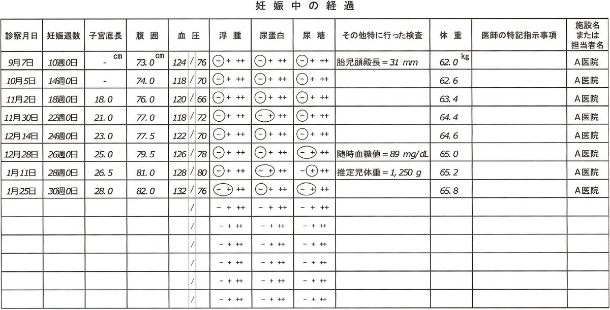
ａ 鉄剤を投与する。
ｂ 帝王切開を行う。
ｃ biophysical profile score〈BPS〉を評価する。
ｄ 2 週間後に妊婦健康診査を受けるよう指導する。
ｅ 経口グルコース負荷試験〈75g OGTT〉を行う。
✅
ｄ 2 週間後に妊婦健康診査を受けるよう指導する。
妊娠32週で母児ともに明らかな異常はなく、妊娠中期の標準どおり2週間後の妊婦健診を指導する。
📖 里帰り妊婦の対応
実際の母子手帳は参照できないが所見を検討する。血圧134/76（正常）、浮腫なし、蛋白±・糖±（有意でない）、Hb 11.8（妊娠中の生理的希釈範囲）、胎児は頭位で発育・羊水正常。母児ともに明らかな異常はない。
妊娠32週は2週ごとの健診が標準なので、「2週間後に妊婦健診を受けるよう指導」が適切（選択肢d）。
□ 選択肢の検討
| 選択肢 | 評価 |
|---|---|
| ａ 鉄剤を投与する | 不要。Hb 11.8は妊娠中期の生理的希釈範囲で鉄剤の絶対適応でない |
| ｂ 帝王切開を行う | 誤り。適応となる異常がない |
| ｃ BPSを評価する | 不要。FGRや胎児機能不全を疑う所見がない |
| ｄ 2週間後に妊婦健診を受けるよう指導 | 正しい。妊娠中期は2週ごと |
| ｅ 75g OGTTを行う | 不要。糖±のみでGDMを疑う根拠に乏しい |
Q.272(113C-39)78%
35 歳の初妊婦（1 妊0 産）。初回妊婦健康診査のため妊娠11 週2 日に来院した。3 週間前に受診し、子宮内に妊娠8 週相当の胎児を認め妊娠と診断された。
初期血液検査の説明として適切なのはどれか。
初期血液検査の説明として適切なのはどれか。
ａ 「梅毒の検査は省略しましょう」
ｂ 「B 群レンサ球菌〈GBS〉の検査が含まれます｣
ｃ 「風疹抗体が陽性の場合は、先天性風疹症候群を発症します」
ｄ 「C 型肝炎ウイルス検査が陽性の場合、赤ちゃんにワクチンを接種します｣
ｅ 「B 型肝炎ウイルス検査が陽性の場合、赤ちゃんに抗HBs ヒト免疫グロブリンを投与します｣
✅
ｅ 「B 型肝炎ウイルス検査が陽性の場合、赤ちゃんに抗HBs ヒト免疫グロブリンを投与します｣
B型肝炎ウイルス検査が陽性なら、出生児に抗HBsヒト免疫グロブリン＋ワクチンを投与して母子感染を予防する。
🩸 妊娠初期血液検査
妊娠初期のスクリーニングには血液型・血算・血糖・梅毒（RPR/TPHA）・B型肝炎（HBs抗原）・C型肝炎・HIV・風疹抗体・HTLV-1・トキソプラズマなどが含まれる。HBs抗原陽性 → 出生児にHBIG＋B型肝炎ワクチンで母子感染予防（選択肢e）。
GBS検査は末期（35〜37週）で初期には含まれない。風疹抗体陽性は免疫がある＝先天性風疹症候群を予防できることを意味する（発症ではない）。
□ 選択肢の検討
| 選択肢 | 評価 |
|---|---|
| ａ 梅毒の検査は省略しましょう | 誤り。梅毒は初期検査の必須項目 |
| ｂ GBS検査が含まれます | 誤り。GBSは妊娠末期（35〜37週）の検査 |
| ｃ 風疹抗体陽性→先天性風疹症候群を発症 | 誤り。陽性は免疫あり |
| ｄ HCV陽性→児にワクチン | 誤り。HCVワクチンは存在しない |
| ｅ HBV陽性→児に抗HBsヒト免疫グロブリン | 正しい。HBIG＋ワクチンで予防 |
Q.273(113C-51)2択連問 1/371%
次の文を読み、273〜275の問いに答えよ。
36 歳の初妊婦（1 妊0 産）。妊娠33 週に、倦怠感と口渇のため受診した。
現病歴：妊娠前のBMI は20.8 であった。これまで毎年受けている健診で異常を指摘されたことはない。妊娠18 週で尿糖陽性を指摘されたが、その後妊婦健康診査に行かなくなった。妊娠25 週で全身倦怠感が出現した。2 日前から倦怠感が増悪し、口渇が出現した。
既往歴：特記すべきことはない。
生活歴：喫煙歴および飲酒歴はない。
家族歴：父が高血圧症。
現 症：身長152cm、体重62kg。体温37.6℃。脈拍108/ 分、整。血圧112/82mmHg。呼吸数26/ 分。眼瞼結膜と眼球結膜とに異常を認めない。口腔内は乾燥している。心音と呼吸音とに異常を認めない。子宮底長35cm、腹囲95cm。腱反射に異常を認めない。眼底に糖尿病網膜症の所見を認めない。
検査所見：尿所見：蛋白（－）、糖2 ＋、ケトン体（－）。血液所見：赤血球468 万、Hb 13.9g/dL、Ht 42％、白血球10,300（桿状核好中球30％、分葉核好中球45％、好酸球1％、好塩基球1％、単球6％、リンパ球17％）、血小板21 万。血液生化学所見：AST 28U/L、ALT 16U/L、尿素窒素12mg/dL、クレアチニン0.6mg/dL、尿酸4.9mg/dL、血糖255mg/dL、HbA1c 7.8％（基準4.6 ～6.2）、Na 143mEq/L、K 4.9mEq/L。免疫血清学所見：抗GAD 抗体陰性。腹部超音波検査では児の推定体重2,450g（＋2.0SD）。明らかな心疾患を認めない。
この母体と胎児の状態について正しいのはどれか。2 つ選べ。
36 歳の初妊婦（1 妊0 産）。妊娠33 週に、倦怠感と口渇のため受診した。
現病歴：妊娠前のBMI は20.8 であった。これまで毎年受けている健診で異常を指摘されたことはない。妊娠18 週で尿糖陽性を指摘されたが、その後妊婦健康診査に行かなくなった。妊娠25 週で全身倦怠感が出現した。2 日前から倦怠感が増悪し、口渇が出現した。
既往歴：特記すべきことはない。
生活歴：喫煙歴および飲酒歴はない。
家族歴：父が高血圧症。
現 症：身長152cm、体重62kg。体温37.6℃。脈拍108/ 分、整。血圧112/82mmHg。呼吸数26/ 分。眼瞼結膜と眼球結膜とに異常を認めない。口腔内は乾燥している。心音と呼吸音とに異常を認めない。子宮底長35cm、腹囲95cm。腱反射に異常を認めない。眼底に糖尿病網膜症の所見を認めない。
検査所見：尿所見：蛋白（－）、糖2 ＋、ケトン体（－）。血液所見：赤血球468 万、Hb 13.9g/dL、Ht 42％、白血球10,300（桿状核好中球30％、分葉核好中球45％、好酸球1％、好塩基球1％、単球6％、リンパ球17％）、血小板21 万。血液生化学所見：AST 28U/L、ALT 16U/L、尿素窒素12mg/dL、クレアチニン0.6mg/dL、尿酸4.9mg/dL、血糖255mg/dL、HbA1c 7.8％（基準4.6 ～6.2）、Na 143mEq/L、K 4.9mEq/L。免疫血清学所見：抗GAD 抗体陰性。腹部超音波検査では児の推定体重2,450g（＋2.0SD）。明らかな心疾患を認めない。
この母体と胎児の状態について正しいのはどれか。2 つ選べ。
ａ 糖尿病合併妊娠である。
ｂ 胎児は低血糖になりやすい。
ｃ 1 週間前の耐糖能は正常である。
ｄ 妊娠によりインスリン抵抗性が生じている。
ｅ 母体の高血糖と胎児の過体重には関連性がある。
✅
ｄ 妊娠によりインスリン抵抗性が生じている。
ｅ 母体の高血糖と胎児の過体重には関連性がある。
妊娠でインスリン抵抗性が生じており、母体の高血糖が胎児の高インスリン血症・過体重（＋2.0SD）につながっている。
🍬 妊娠中の高血糖と胎児
妊娠33週で血糖255・HbA1c 7.8%、抗GAD抗体陰性、妊娠18週の尿糖陽性を放置していた例。妊娠中に顕在化した高血糖（妊娠糖尿病〜妊娠中の明らかな糖尿病）である。・妊娠中は胎盤性ホルモン（hPL等）でインスリン抵抗性が増大し、後期ほど高血糖になりやすい（選択肢d）
・母体高血糖→胎児高血糖→高インスリン血症→過体重（EFW＋2.0SD）（選択肢e）
「胎児が低血糖」は誤り：胎児期はむしろ高血糖で、低血糖になるのは出生後。
□ 母体高血糖の児への影響
母体の高血糖 → 胎児も高血糖 → 胎児の高インスリン血症が病態の中心。・インスリンは胎児の成長ホルモンとして働き 巨大児（EFW大）・肩甲難産・分娩外傷
・出生後は母体からの糖供給が絶たれるのに高インスリンが残り 新生児低血糖
・その他 新生児呼吸窮迫症候群〈RDS〉・多血症・高ビリルビン血症・低カルシウム血症
・妊娠初期の高血糖は 胎児奇形（心奇形・尾部退行症候群・神経管閉鎖障害）
・母体は 妊娠高血圧症候群・羊水過多・巨大児による難産を合併しやすい
□ 選択肢の検討
| 選択肢 | 評価 |
|---|---|
| ａ 糖尿病合併妊娠である | 誤り。妊娠前の糖尿病診断はなく、妊娠中に判明した高血糖（合併妊娠ではない） |
| ｂ 胎児は低血糖になりやすい | 誤り。胎児期は高血糖。低血糖は出生後 |
| ｃ 1週間前の耐糖能は正常 | 誤り。18週から尿糖陽性で以前から異常 |
| ｄ 妊娠でインスリン抵抗性が生じている | 正しい。胎盤性ホルモンによる |
| ｅ 母体高血糖と胎児過体重に関連あり | 正しい。高インスリン血症で巨大児化 |
Q.274(113C-52)連問 2/396%
（36歳初妊婦。妊娠33週で血糖255mg/dL・HbA1c 7.8%、抗GAD抗体陰性、胎児推定体重＋2.0SD。妊娠中に顕在化した高血糖。）
薬物療法として適切なのはどれか。
薬物療法として適切なのはどれか。
ａ NSAIDs
ｂ β遮断薬
ｃ インスリン
ｄ 経口血糖降下薬
ｅ 陽イオン交換樹脂製剤
✅
ｃ インスリン
妊娠中の高血糖の薬物療法はインスリンが原則である。
💉 妊娠中の血糖管理薬
血糖255mg/dL・HbA1c 7.8%と高く、食事療法のみでは不十分で薬物療法が必要。妊娠中の血糖降下薬はインスリンが原則。経口血糖降下薬は胎盤を通過するため用いない。
インスリンは胎盤を通過せず胎児に影響しないため安全に使える。
□ 選択肢の検討
| 選択肢 | 評価 |
|---|---|
| ａ NSAIDs | 無関係。鎮痛薬で血糖に無効。妊娠後期は動脈管収縮で禁忌 |
| ｂ β遮断薬 | 無関係。降圧・抗不整脈薬 |
| ｃ インスリン | 正しい。妊娠中の高血糖の第一選択 |
| ｄ 経口血糖降下薬 | 誤り。胎盤通過のため妊娠中は用いない |
| ｅ 陽イオン交換樹脂製剤 | 無関係。高カリウム血症の薬 |
Q.275(113C-53)連問 3/395%
（上記症例。児は在胎39週1日・3,796gで出生。出生後1時間の血糖58mg/dL。）生後1 時間30 分から小刻みに四肢を震わせることを繰り返すようになった。体温37.3℃。心拍数150/ 分、整。呼吸数50/ 分。SpO2 99％（room air）。大泉門は平坦、心音と呼吸音とに異常を認めない。筋緊張は正常で、Moro 反射は正常に出現する。
直ちに児に行う検査はどれか。
直ちに児に行う検査はどれか。
ａ 頭部MRI
ｂ 血糖値測定
ｃ 神経伝導検査
ｄ 動脈血ガス分析
ｅ 胸腹部エックス線
✅
ｂ 血糖値測定
糖尿病母体児が生後に四肢の振戦を来しており、新生児低血糖を疑ってまず血糖値を測定する。
🍼 糖尿病母体児の新生児低血糖
母体高血糖で育った児（巨大児3,796g）は高インスリン血症を持ち、出生で糖供給が絶たれると生後数時間以内に低血糖を来す。四肢の振戦（jitteriness）は新生児低血糖の代表的症状。ただちに血糖値を測定し、低ければブドウ糖を補充する。
（Moro反射正常・筋緊張正常でけいれんとは異なり、低血糖性の振戦が最も疑わしい。）
□ 選択肢の検討
| 選択肢 | 評価 |
|---|---|
| ａ 頭部MRI | 不急。頭蓋内病変を疑う所見が乏しい |
| ｂ 血糖値測定 | 正しい。IDM＋振戦でまず低血糖を否定 |
| ｃ 神経伝導検査 | 不適。急性期に行わない |
| ｄ 動脈血ガス分析 | 次順位。呼吸障害の所見がなく優先度低い |
| ｅ 胸腹部エックス線 | 不適。振戦の評価にならない |
Q.276(113E-33)81%
38 歳の初妊婦（1 妊0 産）。妊娠34 週に心窩部痛および悪心を主訴に来院した。既往歴に特記すべきことはなく、これまでの妊婦健康診査で異常は指摘されていなかった。胎動は自覚しており、性器出血は認められない。体温36.5℃。脈拍100/ 分、整。血圧140/90mmHg。心窩部に圧痛を認める。子宮は軟で圧痛を認めない。下腿に浮腫を認める。
優先度の低い検査はどれか。
優先度の低い検査はどれか。
ａ 血液検査
ｂ 血液生化学検査
ｃ 腹部超音波検査
ｄ 上部消化管内視鏡検査
ｅ ノンストレステスト〈NST〉
✅
ｄ 上部消化管内視鏡検査
妊娠高血圧腎症・HELLPを疑う場面で、上部消化管内視鏡検査は優先度が低い。
🩺 妊娠後期の心窩部痛の評価
妊娠34週で血圧140/90＋心窩部痛＋浮腫は妊娠高血圧腎症〜HELLP症候群（切迫子癇）を疑う所見。まず必要なのは血算・血液生化学（血小板・肝酵素・LD）、腹部超音波（肝・胎盤）、NSTによる胎児評価。
一方上部消化管内視鏡検査は、まず否定すべき産科的緊急（HELLP）を差し置いて行う優先度は低い（選択肢d）。
□ 選択肢の検討
| 選択肢 | 評価 |
|---|---|
| ａ 血液検査 | 必要。溶血・血小板減少の評価 |
| ｂ 血液生化学検査 | 必要。肝酵素・LDの評価（HELLP） |
| ｃ 腹部超音波検査 | 必要。肝・胎盤の評価 |
| ｄ 上部消化管内視鏡検査 | 優先度が低い。産科的緊急の評価が先 |
| ｅ NST | 必要。胎児well-beingの評価 |
Q.277(111A-26)📷 画像49%
41 歳の初産婦。妊娠39 週2 日に全身けいれんのため救急車で搬入された。来院時にはけいれんは消失していた。意識レベルはJCSⅠ-1。心拍数90/ 分、整。血圧190/120mmHg。呼吸数16/ 分。SpO2 97％（room air）。全身に浮腫を認める。尿蛋白3 ＋。硫酸マグネシウムの持続静注を開始した後に撮影された頭部MRI のFLAIR 像（A ～C）を示す。
適切な治療はどれか。
適切な治療はどれか。
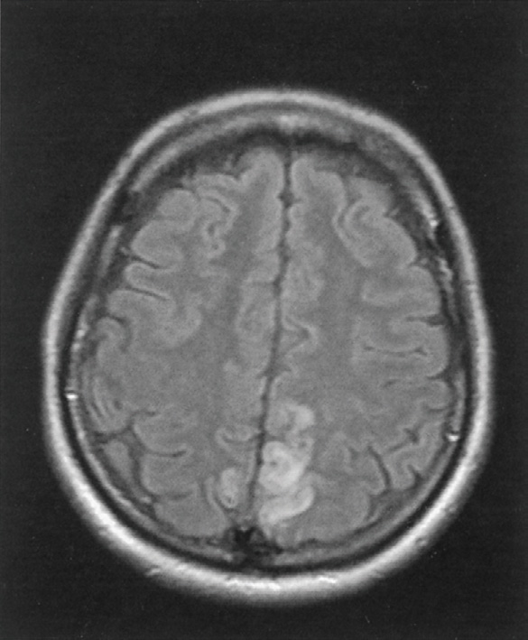
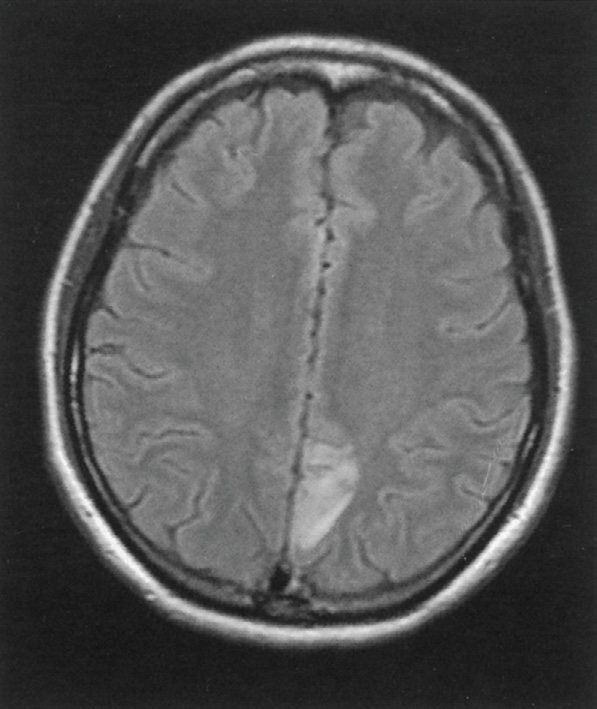
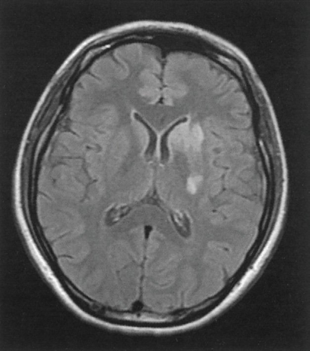
ａ ヘパリン静注
ｂ フロセミド静注
ｃ マニトール点滴静注
ｄ 塩酸リトドリン点滴静注
ｅ ニカルジピン（カルシウム拮抗薬）静注
✅
ｅ ニカルジピン（カルシウム拮抗薬）静注
子癇＋重症高血圧（190/120）で、MgSO₄でけいれんは制御済みのため、次はニカルジピン（Ca拮抗薬）で降圧する。
💊 子癇後の重症高血圧の治療
妊娠39週で全身けいれん＝子癇。MgSO₄ですでにけいれん制御を開始済み。残る問題は血圧190/120の重症高血圧（脳出血・PRES増悪の危険）であり、降圧薬（ニカルジピン＝Ca拮抗薬、あるいはヒドララジン）で降圧する（選択肢e）。
画像（FLAIR高信号）はPRESを示す。
□ 選択肢の検討
| 選択肢 | 評価 |
|---|---|
| ａ ヘパリン静注 | 誤り。抗凝固の適応がなく出血リスク |
| ｂ フロセミド静注 | 誤り。肺水腫でなければ第一選択でない（循環血漿量減少に注意） |
| ｃ マニトール点滴静注 | 誤り。PRESは血管性浮腫で頭蓋内圧亢進治療の適応ではない |
| ｄ 塩酸リトドリン点滴静注 | 誤り。子宮収縮抑制薬で降圧に無関係、頻脈・血圧に悪影響 |
| ｅ ニカルジピン静注 | 正しい。重症高血圧の降圧 |
Q.278(111D-9)32%
胎盤機能不全が原因の胎児発育不全で、最も早期から発育が抑制されるのはどれか。
ａ 頭 部
ｂ 心 臓
ｃ 肝 臓
ｄ 副 腎
ｅ 肺
✅
ｃ 肝 臓
血流再分配で肝血流が減り、グリコーゲンを貯める肝臓が最も早く発育抑制を受ける（腹囲が小さくなる）。
🫀 不均衡型FGRで最初に小さくなる臓器
胎盤機能不全による慢性低酸素では血流再分配（brain sparing）が起こり、脳・心・副腎は血流を維持、肝・腎・筋・消化管は血流低下。特に肝臓はグリコーゲン貯蔵が減って最も早く縮小し、腹囲〈AC〉が相対的に小さくなる（不均衡型・頭部温存型FGR）。
だからFGRの超音波では腹囲の低下が鋭敏な指標になる。
□ 選択肢の検討
| 選択肢 | 評価 |
|---|---|
| ａ 頭部 | 温存。brain sparingで最後まで保たれる |
| ｂ 心臓 | 温存。重要臓器で血流維持 |
| ｃ 肝臓 | 正しい。グリコーゲン減少で最も早く発育抑制（腹囲低下） |
| ｄ 副腎 | 温存。血流優先臓器 |
| ｅ 肺 | 該当せず。肝が先に抑制される |
Q.279(111D-38)79%
38 歳の初産婦。妊娠34 週の妊婦健康診査のため来院した。腹部超音波検査で胎児推定体重は1,500g、羊水ポケットは5cm、胎児の小脳低形成、心室中隔欠損、手関節屈曲および手指の重なりを認める。
この児に疑うべき疾患はどれか。
この児に疑うべき疾患はどれか。
ａ 18 trisomy
ｂ Down 症候群
ｃ Potter 症候群
ｄ Turner 症候群
ｅ Klinefelter 症候群
✅
ａ 18 trisomy
手指の重なり（overlapping fingers）・手関節屈曲・心室中隔欠損・小脳低形成は18トリソミー（Edwards症候群）に特徴的。
🧬 18トリソミー〈Edwards症候群〉
手指の重なり（overlapping fingers：示指が中指に、小指が薬指に重なる握り拳）は18トリソミーに特徴的。18トリソミーの所見：
・overlapping fingers・揺り椅子状足底（rocker bottom foot）
・心奇形（VSD等）・FGR・小顎・後頭部突出・握り拳
・予後不良（多くは1歳までに死亡）
□ 選択肢の検討
| 選択肢 | 評価 |
|---|---|
| ａ 18 trisomy | 正しい。overlapping fingers＋VSD＋FGR |
| ｂ Down症候群（21trisomy） | 誤り。房室中隔欠損・十二指腸閉鎖・後頸部浮腫が典型 |
| ｃ Potter症候群 | 誤り。両側腎無形成・羊水過少・肺低形成 |
| ｄ Turner症候群 | 誤り。囊胞性ヒグローマ・胎児水腫・大動脈縮窄 |
| ｅ Klinefelter症候群 | 誤り。出生前所見に乏しい |
Q.280(111D-51)63%
28 歳の女性。妊娠に関する相談のため来院した。3 年前から全身性エリテマトーデス〈SLE〉で自宅近くの医療機関に通院しており、副腎皮質ステロイドの内服で、病状は1 年以上前から安定している。近い将来、妊娠を希望しており相談のため紹介されて受診した。体温36.5℃。脈拍68/ 分、整。血圧108/62mmHg。顔面、体幹および四肢に皮疹を認めない。心音と呼吸音とに異常を認めない。下腿浮腫を認めない。（前医データ）尿所見：蛋白（－）、潜血（－）。Hb 12.0g/dL、白血球4,200、血小板15 万。尿素窒素10mg/dL、クレアチニン0.6mg/dL。CRP 0.1mg/dL、リウマトイド因子〈RF〉80IU/mL（基準20 未満）、抗核抗体1,280 倍（基準20 以下）、抗DNA 抗体（RIA 法）12IU/dL（基準7 以下）、抗Sm 抗体陽性、抗RNP 抗体陽性、抗SS-A 抗体陽性、抗リン脂質抗体陰性、CH50 35U/mL（基準30 ～40）、C3 84mg/dL（基準52 ～112）、C4 29mg/dL（基準16 ～51）。診察の結果、妊娠は可能と判断された。
この患者でみられる自己抗体で妊娠の際、胎児に影響を与える可能性があるのはどれか。
この患者でみられる自己抗体で妊娠の際、胎児に影響を与える可能性があるのはどれか。
ａ 抗核抗体
ｂ 抗Sm 抗体
ｃ 抗RNP 抗体
ｄ 抗SS-A 抗体
ｅ リウマトイド因子〈RF〉
✅
ｄ 抗SS-A 抗体
抗SS-A抗体は経胎盤移行して胎児心筋を傷害し、新生児ループス・先天性房室ブロックを起こす。
🍼 抗SS-A抗体と胎児
Q239と同型の問題。抗SS-A（Ro）抗体はIgGとして胎盤を通過し、胎児の先天性房室ブロック・新生児ループス（環状紅斑）を起こす。抗核抗体・抗Sm・抗RNP・RFはいずれもSLEで陽性となるが、胎盤を通過して胎児に直接悪さをするのは抗SS-A抗体。抗リン脂質抗体は陰性なので流産・胎盤梗塞のリスクは低い。
□ 選択肢の検討
| 選択肢 | 評価 |
|---|---|
| ａ 抗核抗体 | SLEで陽性だが胎児への直接影響はない |
| ｂ 抗Sm 抗体 | SLEに特異的な診断マーカー。胎児影響なし |
| ｃ 抗RNP 抗体 | 混合性結合組織病関連。胎児影響なし |
| ｄ 抗SS-A 抗体 | 正しい。経胎盤移行→先天性房室ブロック・新生児ループス |
| ｅ リウマトイド因子〈RF〉 | 非特異的。胎児影響なし |
Q.281(111G-55)84%
31 歳の初妊婦。妊娠10 週。妊婦健康診査でHBs 抗原陽性、HBe 抗原陰性が判明した。
正しいのはどれか。
正しいのはどれか。
ａ 人工妊娠中絶を勧める。
ｂ B 型肝炎ワクチンを本人に投与する。
ｃ 児への感染予防のため授乳は禁止する。
ｄ ウイルスが胎盤を通して児の血液に移ることが多い。
ｅ 抗HBs 人免疫グロブリンを児に生後速やかに投与する。
✅
ｅ 抗HBs 人免疫グロブリンを児に生後速やかに投与する。
HBs抗原陽性キャリアであり、出生児に抗HBs人免疫グロブリン＋ワクチンを速やかに投与して母子感染を予防する。
🍼 B型肝炎キャリア妊婦の対応
HBs抗原陽性＝母体キャリア。HBe抗原陰性でウイルス量は比較的低いが、母子感染予防は全例で行う。B型肝炎は主に分娩時の産道・血液曝露で感染し、経胎盤感染はまれ。
出生児に生後速やかに抗HBsヒト免疫グロブリン〈HBIG〉＋B型肝炎ワクチンを投与（選択肢e）。母乳は禁止しない（予防処置下で授乳可）。
□ 選択肢の検討
| 選択肢 | 評価 |
|---|---|
| ａ 人工妊娠中絶を勧める | 誤り。予防可能で中絶の理由はない |
| ｂ B型肝炎ワクチンを本人に投与 | 誤り。母体は既にキャリアで無意味 |
| ｃ 感染予防のため授乳を禁止 | 誤り。予防処置下で母乳可 |
| ｄ ウイルスが胎盤を通して児に移ることが多い | 誤り。経胎盤感染はまれ、主に分娩時 |
| ｅ 抗HBs人免疫グロブリンを児に生後速やかに投与 | 正しい。HBIG＋ワクチンで予防 |
Q.282(110A-26)79%
33 歳の女性。2 日前に市販キットで尿妊娠反応が陽性であったため来院した。最終月経は7 週前、月経周期は30 ～45 日。3 年前に糖尿病と診断され、半年前からインスリン治療を受けている。内診で子宮は鵞卵大で付属器は触れない。尿蛋白（－）、糖（－）、ケトン体（－）。血糖90mg/dL、HbA1c 5.8％（基準4.6 ～6.2）。経腟超音波検査で子宮内に長径25mm の胎囊と心拍動を有する胎芽とを認める。妊娠していることを患者に伝えると、糖尿病による胎児奇形が心配だという。
患者への説明として適切なのはどれか。
患者への説明として適切なのはどれか。
ａ 「人工妊娠中絶を勧めます」
ｂ 「胎児奇形は羊水検査で診断できます」
ｃ 「治療をインスリンから経口糖尿病薬に変更しましょう」
ｄ 「胎児奇形のリスクが一般の方より高い状況ではありません」
ｅ 「今から葉酸を十分に摂取すれば胎児奇形の頻度が減少します」
✅
ｄ 「胎児奇形のリスクが一般の方より高い状況ではありません」
血糖90・HbA1c 5.8%と良好に管理されており、胎児奇形のリスクは一般の妊婦より高い状況ではない。
🩺 良好管理の糖尿病合併妊娠
糖尿病合併妊娠の胎児奇形リスクは妊娠初期の血糖・HbA1cに依存。本例は血糖90・HbA1c 5.8%と良好管理下で妊娠成立しており、奇形リスクは一般妊婦とほぼ同等（選択肢d）。
（HbA1cが高い状態で妊娠すると奇形リスクが上がるため、計画妊娠が理想。本例は既に良好管理下であり葉酸で「さらに減らす」という説明eは不適切。）
□ 選択肢の検討
| 選択肢 | 評価 |
|---|---|
| ａ 人工妊娠中絶を勧める | 誤り。良好管理で中絶の理由なし |
| ｂ 胎児奇形は羊水検査で診断できる | 誤り。羊水検査は染色体・一部の評価で万能でない |
| ｃ インスリンを経口薬に変更 | 禁忌。妊娠中はインスリンが原則 |
| ｄ 奇形リスクは一般より高い状況ではない | 正しい。良好な血糖管理を反映 |
| ｅ 今から葉酸で奇形が減少する | 不適切。既に良好管理下でこの説明は当を得ない |
Q.283(110B-47)📷 画像93%
41 歳の初産婦。妊娠41 週2 日に陣痛発来のため来院した。妊娠前から高血圧症があり、妊娠中もメチルドパを内服していた。胎児発育は順調で、3 日前の推定胎児体重は2,750g であった。身長154cm、体重61kg。脈拍84/ 分、整。血圧142/86mmHg。尿蛋白（±）、糖（－）。内診で分泌物は褐色少量、子宮口は4cm 開大、卵膜を触知し、児頭下降度はSP －3cm である。このときの胎児心拍数陣痛図を示す。
適切な対応はどれか。
適切な対応はどれか。
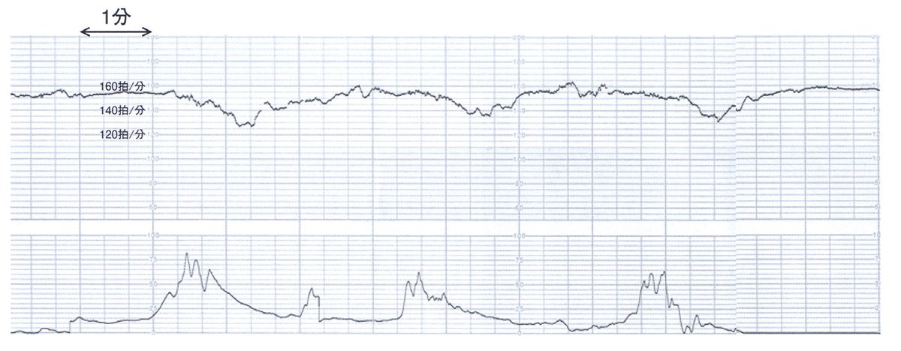
ａ 人工破膜を行う。
ｂ 帝王切開を行う。
ｃ 内診指で児頭を挙上する。
ｄ メチルドパ内服を増量する。
ｅ エルゴメトリン（麦角アルカロイド）を投与する。
✅
ｂ 帝王切開を行う。
胎児心拍数陣痛図で胎児機能不全（遅発一過性徐脈等）が示唆され、児頭高位で急速遂娩が必要なため帝王切開を行う。
📸 胎児機能不全への対応
実際のCTGは参照できないが、本問で帝王切開が正解となる状況＝遅発一過性徐脈・高度変動一過性徐脈・遷延徐脈など胎児機能不全の所見。過期妊娠（41週2日）で胎盤機能低下があり、児頭下降度SP−3cm（高位）で経腟分娩が近くなく、急速遂娩が必要なため帝王切開を選ぶ。
人工破膜や児頭挙上は胎児機能不全の解決にならず、子宮収縮薬（エルゴメトリン）は分娩前で禁忌。
□ 選択肢の検討
| 選択肢 | 評価 |
|---|---|
| ａ 人工破膜を行う | 不適。胎児機能不全は解決せず、臍帯脱出のリスク |
| ｂ 帝王切開を行う | 正しい。胎児機能不全＋高位で急速遂娩 |
| ｃ 内診指で児頭を挙上する | 不適。臍帯脱出時の一時処置で本状況の解決策でない |
| ｄ メチルドパ内服を増量 | 無関係。血圧142/86で降圧増量の場面でない |
| ｅ エルゴメトリンを投与 | 禁忌。分娩前の子宮収縮薬は胎児をさらに危険にする |
Q.284(110D-18)3択48%
妊娠高血圧症候群のため入院中の妊娠32 週の患者が上腹部痛を訴えた。
まず確認すべき血液検査項目はどれか。3 つ選べ。
まず確認すべき血液検査項目はどれか。3 つ選べ。
ａ Ca
ｂ LD
ｃ AST
ｄ 血小板数
ｅ ヘモグロビン
✅
ｂ LD
ｃ AST
ｄ 血小板数
上腹部痛はHELLP症候群を疑う所見で、溶血・肝障害・血小板減少を評価するLD・AST・血小板数をまず確認する。
🩺 HELLP症候群を疑う検査
妊娠高血圧症候群＋上腹部（右季肋部）痛 → HELLP症候群を疑う。HELLP＝Hemolysis（溶血）・Elevated Liver enzymes・Low Plateletsなので、まず確認するのは：
・LD（溶血・肝障害で上昇）
・AST（肝逸脱酵素上昇）
・血小板数（減少）（選択肢b・c・d）。
□ 選択肢の検討
| 選択肢 | 評価 |
|---|---|
| ａ Ca | 不要。HELLPの診断項目でない |
| ｂ LD | 正しい。溶血・肝障害の指標 |
| ｃ AST | 正しい。肝逸脱酵素 |
| ｄ 血小板数 | 正しい。HELLPで減少 |
| ｅ ヘモグロビン | 二次的。溶血の傍証にはなるが、まず確認すべき3項目に入らない |
Q.285(110D-20)86%
23 歳の初妊婦。発熱を主訴に来院した。現在、妊娠15 週。3 日前から下腹部の違和感と排尿時痛とを認め、昨日から38.4℃の発熱が出現した。既往歴に特記すべきことはない。意識は清明。体温38.8℃。脈拍100/ 分、整。血圧118/68mmHg。呼吸数20/ 分。右肋骨脊柱角に叩打痛を認める。尿Gram 染色でGram 陰性桿菌を認めた。
投与すべき抗菌薬はどれか。
投与すべき抗菌薬はどれか。
ａ セフェム系
ｂ マクロライド系
ｃ ニューキノロン系
ｄ テトラサイクリン系
ｅ アミノグリコシド系
✅
ａ セフェム系
妊婦の急性腎盂腎炎（CVA叩打痛＋グラム陰性桿菌）で、妊娠中も安全なセフェム系を投与する。
🦠 妊婦の急性腎盂腎炎と抗菌薬選択
排尿時痛（膀胱炎症状）＋発熱＋右肋骨脊柱角〈CVA〉叩打痛＋グラム陰性桿菌 → 急性腎盂腎炎。起炎菌は大腸菌が多い。妊娠中に安全な抗菌薬はペニシリン系・セフェム系。グラム陰性桿菌をカバーするならセフェム系が適切（選択肢a）。
妊娠中に避ける抗菌薬：テトラサイクリン（歯・骨）・ニューキノロン（軟骨）・アミノグリコシド（第Ⅷ脳神経障害）。
□ 選択肢の検討
| 選択肢 | 評価 |
|---|---|
| ａ セフェム系 | 正しい。妊娠中安全でグラム陰性桿菌をカバー |
| ｂ マクロライド系 | 不適。グラム陰性桿菌への効果が不十分 |
| ｃ ニューキノロン系 | 禁忌。胎児の軟骨障害 |
| ｄ テトラサイクリン系 | 禁忌。歯牙着色・骨発育障害 |
| ｅ アミノグリコシド系 | 注意/回避。胎児第Ⅷ脳神経障害・腎毒性 |
Q.286(110D-50)📷 画像96%
42 歳の初妊婦。妊娠31 週5 日。羊水過多のため精査目的で紹介受診した。超音波検査で胎児推定体重1,250g、羊水指数〈AFI〉28.5cm（基準5 ～25）であり、胎児に房室中隔欠損を認め、心内膜床欠損症が疑われた。胎児の腹部超音波像（A，B）を示す。
最も考えられる胎児の疾患はどれか。
最も考えられる胎児の疾患はどれか。
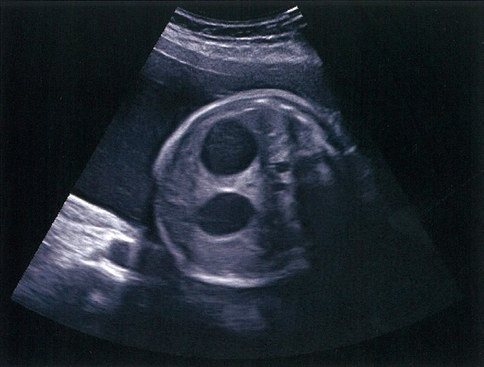
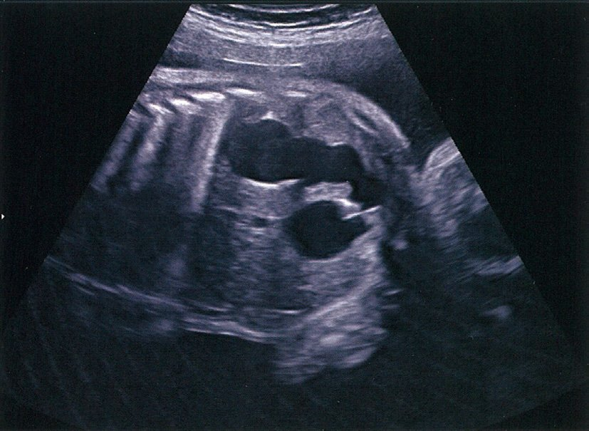
ａ 13 trisomy
ｂ 18 trisomy
ｃ Down 症候群
ｄ Turner 症候群
ｅ Klinefelter 症候群
✅
ｃ Down 症候群
房室中隔欠損（心内膜床欠損症）＋十二指腸閉鎖を示唆する羊水過多・double bubbleはDown症候群に特徴的。
🧬 房室中隔欠損＋羊水過多＝Down症候群
房室中隔欠損（心内膜床欠損症）は21トリソミー〈Down症候群〉に最も多い心奇形。腹部超音波像（A・B）は十二指腸閉鎖のdouble bubble sign（胃と十二指腸近位の二重泡）を示すと考えられ、十二指腸閉鎖→羊水過多（AFI 28.5cm）を来す。
房室中隔欠損＋十二指腸閉鎖＋羊水過多＝Down症候群の典型的組合せ。高齢妊娠（42歳）も染色体異常のリスク因子。
□ 選択肢の検討
| 選択肢 | 評価 |
|---|---|
| ａ 13 trisomy | 誤り。全前脳胞症・多指・口唇口蓋裂が典型 |
| ｂ 18 trisomy | 誤り。overlapping fingers・VSD・FGRが典型 |
| ｃ Down症候群 | 正しい。房室中隔欠損＋十二指腸閉鎖＋羊水過多 |
| ｄ Turner症候群 | 誤り。囊胞性ヒグローマ・胎児水腫 |
| ｅ Klinefelter症候群 | 誤り。出生前所見に乏しい |
Q.287(110F-22)📷 画像
28 歳の初妊婦。妊娠33 週5 日。妊婦健康診査のため来院した。自宅近くの医療機関で健診を受けていたが急に転居となり、今後の妊娠・分娩管理を希望して受診した。診療情報提供書は持っていない。持参した母子健康手帳の記載を示す。
認められる可能性が高いのはどれか。
認められる可能性が高いのはどれか。
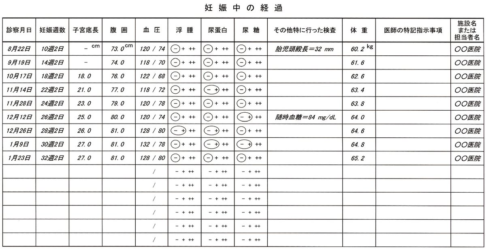
ａ 羊水過多症
ｂ 妊娠糖尿病
ｃ 胎児発育不全
ｄ 妊娠週数の誤り
ｅ 妊娠高血圧症候群
✅
ｃ 胎児発育不全
母子手帳の子宮底長・推定胎児体重の推移が下方に偏位しており、胎児発育不全が最も考えられる。
📖 母子手帳の推移から読む病態
実際の記載は参照できないが、本問で正解となる状況＝子宮底長・推定胎児体重の推移が基準曲線から下方に偏位（発育の伸び悩み）。これは胎児発育不全〈FGR〉を示す。羊水過多・妊娠糖尿病・妊娠高血圧症候群はいずれも別の所見（血圧・尿・羊水量）が必要で、手帳の発育推移だけから最も強く示唆されるのはFGR。
□ 選択肢の検討
| 選択肢 | 評価 |
|---|---|
| ａ 羊水過多症 | 低い。子宮底長が大きく出る所見が必要 |
| ｂ 妊娠糖尿病 | 低い。血糖・巨大児の所見が必要 |
| ｃ 胎児発育不全 | 正しい。発育曲線の下方偏位 |
| ｄ 妊娠週数の誤り | 低い。初期の週数補正の記載が必要 |
| ｅ 妊娠高血圧症候群 | 低い。血圧上昇・蛋白尿の所見が必要 |
Q.288(110G-21)89%
妊婦健康診査で妊娠初期に行う血液検査項目はどれか。
ａ CRP
ｂ 血 糖
ｃ 抗核抗体
ｄ D ダイマー
ｅ プロラクチン
✅
ｂ 血 糖
妊娠初期の血液検査には血糖が含まれる（随時血糖で糖代謝異常をスクリーニング）。
🩸 妊娠初期の血液検査項目
妊娠初期のスクリーニング血液検査：血液型・不規則抗体・血算・血糖・梅毒（RPR/TPHA）・B型肝炎・C型肝炎・HIV・風疹抗体・HTLV-1・トキソプラズマなど。血糖は初期から測定し、糖代謝異常（糖尿病合併妊娠・GDM）をスクリーニングする（選択肢b）。
CRP・抗核抗体・Dダイマー・プロラクチンはルーチンの初期検査項目ではない。
□ 選択肢の検討
| 選択肢 | 評価 |
|---|---|
| ａ CRP | ×。ルーチンの初期項目でない |
| ｂ 血糖 | 正しい。糖代謝異常のスクリーニング |
| ｃ 抗核抗体 | ×。膠原病を疑う場合のみ |
| ｄ Dダイマー | ×。血栓症を疑う場合のみ |
| ｅ プロラクチン | ×。ルーチン項目でない |
Q.289(110G-33)2択89%
不均衡型の胎児発育不全で、慢性の低酸素血症のために相対的に血流増加がみられる組織はどれか。2 つ選べ。
ａ 脳
ｂ 肝 臓
ｃ 小 腸
ｄ 心 筋
ｅ 骨格筋
✅
ａ 脳
ｄ 心 筋
血流再分配（brain sparing）で脳・心（・副腎）への血流が優先的に維持・増加する。
🩸 血流再分配（brain sparing）
不均衡型FGRの慢性低酸素では、限られた血流を生命維持に不可欠な臓器へ優先配分する。・血流増加（維持）：脳・心筋・副腎
・血流低下：肝・腎・筋・皮膚・消化管
選択肢では脳と心筋が血流増加組織（選択肢a・d）。
□ 選択肢の検討
| 選択肢 | 評価 |
|---|---|
| ａ 脳 | 正しい。中大脳動脈拡張（brain sparing） |
| ｂ 肝臓 | 低下。最も早く発育抑制（腹囲低下） |
| ｃ 小腸 | 低下。消化管血流は減少 |
| ｄ 心筋 | 正しい。生命維持のため血流維持・増加 |
| ｅ 骨格筋 | 低下。筋血流は減少 |
Q.290(110I-67)96%
32 歳の女性。1 回経産婦。妊娠中の血糖管理のため紹介されて来院した。自宅近くの産婦人科医院で妊娠の管理中であったが、妊娠26 週に測定された血糖が172mg/dL であり、75g 経口ブドウ糖負荷試験を施行され妊娠糖尿病と診断された。既往歴に特記すべきことはない。家族歴は母が2 型糖尿病で治療中である。妊娠前から飲酒歴と喫煙歴はない。身長160cm、体重71kg（非妊時68kg）。身体所見に異常を認めない。腹部超音波検査で胎児に異常を認めない。初診時、HbA1c 6.9％（基準4.6 ～6.2）。この患者に対して1,700kcal の食事療法と無理のない程度で体を動かすことを指導して血糖の推移をみた。2 週後の来院時で空腹時血糖118mg/dL、食後2 時間血糖186mg/dL であった。
この患者に対する最も適切な対応はどれか。
この患者に対する最も適切な対応はどれか。
ａ インスリン注射を考慮する。
ｂ DPP-4 阻害薬投与を考慮する。
ｃ ビグアナイド薬投与を考慮する。
ｄ 毎日の運動量を400kcal 増やす。
ｅ 食事エネルギー量を200kcal 減量する。
✅
ａ インスリン注射を考慮する。
食事・運動療法でも血糖目標（空腹時95・食後2時間120未満）に届かないため、インスリン注射を考慮する。
💉 食事療法で目標未達→インスリン
妊娠糖尿病で食事・運動療法を2週続けたが、空腹時118（目標95未満）・食後2時間186（目標120未満）と大きく目標未達。HbA1c 6.9%も高値。
この場合はインスリン注射を導入する（選択肢a）。経口血糖降下薬（DPP-4・ビグアナイド）は妊娠中用いない。極端なカロリー減量・運動増加はケトーシスやFGRを招くため不適。
□ 選択肢の検討
| 選択肢 | 評価 |
|---|---|
| ａ インスリン注射を考慮 | 正しい。食事療法で目標未達なら導入 |
| ｂ DPP-4阻害薬を考慮 | 誤り。妊娠中は経口薬を用いない |
| ｃ ビグアナイド薬を考慮 | 誤り。妊娠中は経口薬を用いない |
| ｄ 運動量を400kcal増やす | 誤り。過度の運動はケトーシスを招く |
| ｅ 食事を200kcal減量 | 誤り。過度の制限はFGR・ケトーシスを招く |
Q.291(109A-1)37%
HTLV-1 抗体スクリーニング検査で陽性と判定された初妊婦に対する正しい説明はどれか。
ａ 「ワクチンを接種しましょう」
ｂ 「診断には精密検査が必要です」
ｃ 「出産後、母乳を与えてはいけません」
ｄ 「スクリーニング検査を再度行いましょう」
ｅ 「お産のやり方は帝王切開がいいでしょう」
✅
ｂ 「診断には精密検査が必要です」
スクリーニング陽性は偽陽性を含むため、まず確認（精密）検査で診断を確定する必要がある。
🦠 HTLV-1スクリーニング陽性への対応
HTLV-1抗体のスクリーニング（PA/CLEIA）は偽陽性がありうるため、陽性ならWestern blot・PCRなどの確認（精密）検査で診断を確定する（選択肢b）。確定してから母乳を介した母子感染（成人T細胞白血病〈ATL〉予防）の指導（断乳・凍結解凍母乳・短期授乳）を行う。スクリーニング陽性の段階で「母乳禁止」「帝王切開」と決めるのは早計。
□ 選択肢の検討
| 選択肢 | 評価 |
|---|---|
| ａ ワクチンを接種しましょう | 誤り。HTLV-1ワクチンは存在しない |
| ｂ 診断には精密検査が必要 | 正しい。スクリーニング陽性→確認検査 |
| ｃ 母乳を与えてはいけない | 早計。確定後に母乳指導。かつHTLVは帝王切開でなく母乳が主経路 |
| ｄ スクリーニングを再度行う | 誤り。同じスクリーニングでなく確認検査へ |
| ｅ 帝王切開がよい | 誤り。HTLV-1は主に母乳感染で帝王切開は無効 |
Q.292(108A-45)📷 画像96%
30 歳の女性。18 歳時に学校検尿で尿蛋白・尿潜血を指摘され腎生検でIgA 腎症と診断されたが未治療。25 歳の第1 子妊娠時に高血圧を指摘され、出産後からアンジオテンシンⅡ受容体拮抗薬で治療していた。半年前、第2 子希望でIgA 腎症の評価のため腎生検を実施。その後ARB を中止しヒドララジンで治療していた。1 週前に妊娠が判明した。血圧134/74mmHg。下肢に浮腫を認めない。尿蛋白3 ＋、潜血3 ＋。尿素窒素17mg/dl、クレアチニン1.1mg/dl。eGFR 46ml/ 分/1.73m²。半年前の腎生検のMasson-Trichrome 染色標本を示す。
この患者への説明で正しいのはどれか。
この患者への説明で正しいのはどれか。
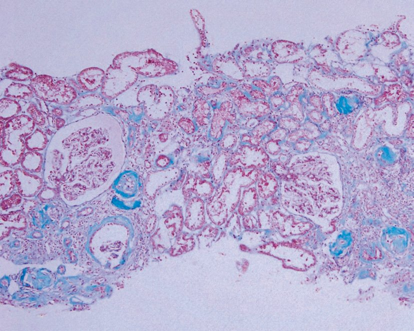
ａ 「降圧薬は中止します」
ｂ 「人工妊娠中絶が必要です」
ｃ 「慢性腎臓病の病期Ⅳです」
ｄ 「腎機能が悪化するリスクが高いです」
ｅ 「副腎皮質ステロイドの大量療法が必要です」
✅
ｄ 「腎機能が悪化するリスクが高いです」
IgA腎症（eGFR 46・尿蛋白3+）の合併妊娠で、妊娠に伴い腎機能が悪化するリスクが高いと説明する。
🫘 慢性腎臓病〈CKD〉合併妊娠
IgA腎症でeGFR 46（G3b＝CKD病期III）・尿蛋白3＋・高血圧を伴う。腎機能低下・蛋白尿・高血圧のあるCKD合併妊娠は、妊娠中に腎機能が悪化しやすく、妊娠高血圧腎症・FGR・早産のリスクも高い（選択肢d）。
降圧薬はARB／ACE阻害薬は妊娠禁忌なので中止済みで、ヒドララジン等に変更されている（対応は正しい）。
□ 選択肢の検討
| 選択肢 | 評価 |
|---|---|
| ａ 降圧薬は中止します | 誤り。高血圧は継続治療が必要（妊娠可の薬に変更して継続） |
| ｂ 人工妊娠中絶が必要 | 誤り。厳重管理下で妊娠継続を検討 |
| ｃ 慢性腎臓病の病期Ⅳ | 誤り。eGFR 46はG3b＝病期III |
| ｄ 腎機能が悪化するリスクが高い | 正しい。CKD合併妊娠の重要な説明 |
| ｅ 副腎皮質ステロイド大量療法が必要 | 誤り。本例で大量ステロイドの適応はない |
Q.293(108B-46)88%
33 歳の初妊婦。妊娠36 週。自宅で突然水様帯下の流出を認め1 時間後に来院した。妊娠35 週の妊婦健康診査で腟と外陰の培養検査でB 群レンサ球菌〈GBS〉が陽性であった。体温36.4℃。脈拍76/ 分、整。血圧116/72mmHg。腟鏡診で後腟円蓋に中等量の水様帯下の貯留を認め、帯下は弱アルカリ性である。内診で子宮口は1cm 開大、展退度30％、先進部は児頭で下降度SP －2cm。Hb 11.6g/dl、白血球9,000、血小板18 万、CRP 0.1mg/dl。胎児推定体重2,600g、羊水ポケット2cm、胎盤に異常なし。胎児心拍数陣痛図で子宮収縮なし、胎児心拍パターンに異常なし。
まず投与すべきなのはどれか。
まず投与すべきなのはどれか。
ａ β遮断薬
ｂ 硫酸マグネシウム
ｃ 副腎皮質ステロイド
ｄ ペニシリン系抗菌薬
ｅ 非ステロイド性抗炎症薬〈NSAIDs〉
✅
ｄ ペニシリン系抗菌薬
GBS陽性妊婦の前期破水（アルカリ性帯下）で、産道感染予防のためまずペニシリン系抗菌薬を投与する。
🍼 GBS陽性＋前期破水
弱アルカリ性の水様帯下＝破水（前期破水）。妊娠36週でGBS陽性。GBS陽性で破水したら、新生児GBS感染症予防のためただちにペニシリン系抗菌薬を投与する（選択肢d）。破水後は上行性感染のリスクが高まるため、分娩まで抗菌薬を継続する。
（子宮収縮なく胎児良好なので、まず感染予防が優先。）
□ 選択肢の検討
| 選択肢 | 評価 |
|---|---|
| ａ β遮断薬 | 無関係。適応なし |
| ｂ 硫酸マグネシウム | 不適。子癇・切迫早産管理の薬で本状況の第一でない |
| ｃ 副腎皮質ステロイド | 不適。妊娠36週で肺成熟促進の適応は乏しい |
| ｄ ペニシリン系抗菌薬 | 正しい。GBS母子感染予防 |
| ｅ NSAIDs | 禁忌。妊娠後期は動脈管収縮 |
Q.294(108D-15)2択83%
胎児肺低形成を伴うのはどれか。2 つ選べ。
ａ 食道閉鎖
ｂ Potter 症候群
ｃ 十二指腸閉鎖
ｄ 完全大血管転位症
ｅ 先天性横隔膜ヘルニア
✅
ｂ Potter 症候群
ｅ 先天性横隔膜ヘルニア
羊水過少をきたすPotter症候群（両側腎無形成）と、肺を圧迫する先天性横隔膜ヘルニアが肺低形成を伴う。
🫁 胎児肺低形成の機序
胎児肺の発育には十分な羊水（肺胞へ流入する肺胞液）と胸腔スペースが必要。・Potter症候群（両側腎無形成）：尿産生なし→羊水過少→肺低形成（Potter sequence）
・先天性横隔膜ヘルニア：腹部臓器が胸腔に脱出→肺を圧迫→肺低形成
この2つが肺低形成を伴う（選択肢b・e）。
□ 選択肢の検討
| 選択肢 | 評価 |
|---|---|
| ａ 食道閉鎖 | ×。羊水過多を来すが肺低形成は主でない |
| ｂ Potter症候群 | 正しい。腎無形成→羊水過少→肺低形成 |
| ｃ 十二指腸閉鎖 | ×。羊水過多（double bubble） |
| ｄ 完全大血管転位症 | ×。心奇形で肺低形成は伴わない |
| ｅ 先天性横隔膜ヘルニア | 正しい。腹部臓器が肺を圧迫→肺低形成 |
Q.295(108D-35)📷 画像89%
28 歳の初妊婦。妊娠34 週0 日。妊娠高血圧症候群と診断され入院中。身長160cm、体重62kg。体温37.0℃。脈拍72/ 分、整。血圧154/106mmHg。尿蛋白3.5g/ 日、糖（－）。内診で子宮口1cm 開大、児頭下降度SP －3cm で未破水。腹部超音波検査で胎児推定体重1,980g（－1.5SD）、胎児形態異常なし。診察中に突然、強直性間代性けいれんを発症した。ジアゼパムの静注でけいれんは消失し意識も清明となった。帝王切開を決定し準備を開始した。この時の胎児心拍数陣痛図を示す。
この時点で投与する薬剤として適切なのはどれか。
この時点で投与する薬剤として適切なのはどれか。
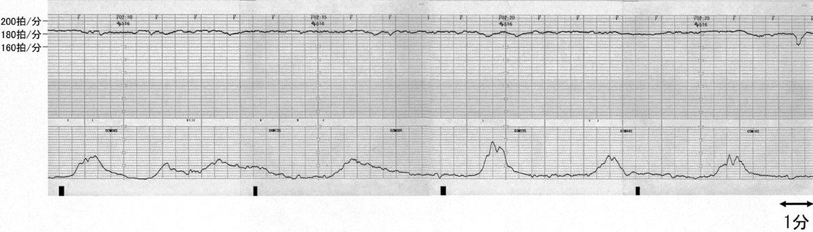
ａ ペンタゾシン
ｂ 硫酸マグネシウム
ｃ 炭酸水素ナトリウム
ｄ ガベキサートメシル酸塩
ｅ 麦角アルカロイド（エルゴメトリン）
✅
ｂ 硫酸マグネシウム
子癇発作を来した重症妊娠高血圧腎症で、けいれん再発予防のため硫酸マグネシウムを投与する。
⚡ 子癇発作後の管理
妊娠高血圧症候群＋強直性間代性けいれん＝子癇。ジアゼパムで一旦頓挫したが、再発予防に硫酸マグネシウムを投与する（選択肢b）。MgSO₄は子癇のけいれん制御・予防の第一選択で、帝王切開の準備と並行して開始する。（Mg中毒の解毒薬はグルコン酸カルシウム。）
□ 選択肢の検討
| 選択肢 | 評価 |
|---|---|
| ａ ペンタゾシン | 誤り。鎮痛薬でけいれん予防に無効 |
| ｂ 硫酸マグネシウム | 正しい。子癇のけいれん再発予防 |
| ｃ 炭酸水素ナトリウム | 誤り。適応なし |
| ｄ ガベキサートメシル酸塩 | 誤り。DIC治療薬で本時点の適応でない |
| ｅ 麦角アルカロイド | 禁忌。分娩前の子宮収縮薬・昇圧で危険 |
Q.296(108D-51)2択71%
26 歳の初妊婦。妊娠37 週。2 時間前からの上腹部痛と悪心を主訴に来院した。前回までの妊婦健康診査では特に異常を指摘されていない。意識は清明。身長160cm、体重66kg（非妊時58kg）。体温37.0℃。脈拍72/ 分、整。血圧146/92mmHg。子宮底長31cm、腹囲95cm。下腿に軽度浮腫を認める。尿所見：蛋白2 ＋、糖（－）。赤血球450 万、Hb 13.0g/dl、Ht 42％、白血球10,300、血小板7.0 万、血漿フィブリノゲン432mg/dl（基準200 ～400）。総蛋白6.8g/dl、アルブミン4.0g/dl、総ビリルビン1.6mg/dl、直接ビリルビン0.3mg/dl、AST 184IU/l、ALT 230IU/l、LD 830IU/l（基準176 ～353）、γ-GTP 34IU/l（基準8 ～50）、尿素窒素5.0mg/dl、クレアチニン0.5mg/dl、尿酸6.9mg/dl、血糖96mg/dl、Na 142mEq/l、K 4.0mEq/l、Cl 105mEq/l。超音波検査で胎児発育は正常であった。
今後合併に注意すべき病態はどれか。2 つ選べ。
今後合併に注意すべき病態はどれか。2 つ選べ。
ａ 羊水過多
ｂ 急性腎不全
ｃ 妊娠糖尿病
ｄ 児頭骨盤不均衡〈CPD〉
ｅ 播種性血管内凝固〈DIC〉
✅
ｂ 急性腎不全
ｅ 播種性血管内凝固〈DIC〉
HELLP症候群（血小板減少・肝酵素上昇・溶血）であり、急性腎不全とDICの合併に注意する。
🩸 HELLP症候群の合併症
妊娠37週で高血圧146/92＋蛋白尿＋血小板7.0万＋AST/ALT/LD著明上昇＝HELLP症候群。HELLPが進行すると：
・播種性血管内凝固〈DIC〉：血小板消費・凝固異常（フィブリノゲンは今は正常だが低下しうる）
・急性腎不全：腎微小血管障害
・肝被膜下血腫・破裂、常位胎盤早期剝離、肺水腫
に注意（選択肢b・e）。
□ 選択肢の検討
| 選択肢 | 評価 |
|---|---|
| ａ 羊水過多 | ×。HELLPの合併症でない |
| ｂ 急性腎不全 | 正しい。腎微小血管障害 |
| ｃ 妊娠糖尿病 | ×。血糖96で無関係 |
| ｄ 児頭骨盤不均衡〈CPD〉 | ×。胎児発育正常で無関係 |
| ｅ DIC | 正しい。凝固消費で進展しうる |
Q.297(108E-23)📷 画像76%
妊娠29 週の胎児の頭部超音波像を示す。
最も考えられるのはどれか。
最も考えられるのはどれか。
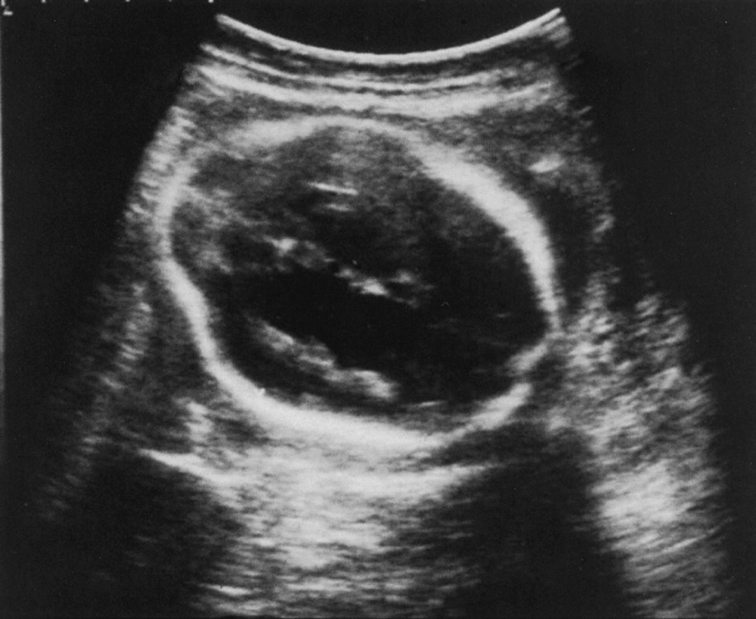
ａ 水頭症
ｂ 胎児水腫
ｃ 脊髄空洞症
ｄ 正中頸囊胞
ｅ 頭蓋骨早期癒合症
✅
ａ 水頭症
胎児頭部超音波で側脳室の拡大を認めれば水頭症が最も考えられる。
📸 胎児頭部超音波の読み方
実際の画像は参照できないが、本問で正解となる典型像＝側脳室の著明な拡大（脳室拡大 ventriculomegaly）・脈絡叢が拡大脳室内で垂れ下がる（dangling choroid plexus）。これは水頭症の所見。水頭症は脳脊髄液の通過・吸収障害で脳室が拡大する病態で、中脳水道狭窄・二分脊椎（Chiari II）・感染などが原因。
□ 選択肢の検討
| 選択肢 | 評価 |
|---|---|
| ａ 水頭症 | 正しい。側脳室拡大 |
| ｂ 胎児水腫 | 誤り。皮下浮腫・胸腹水・心拡大が主で頭部超音波の主所見でない |
| ｃ 脊髄空洞症 | 誤り。脊髄の病変で頭部超音波所見でない |
| ｄ 正中頸囊胞 | 誤り。頸部の囊胞 |
| ｅ 頭蓋骨早期癒合症 | 誤り。頭蓋形態異常で脳室拡大ではない |
Q.298(108E-24)88%
妊婦の合併症で左側に多く発生するのはどれか。
ａ 腎盂拡張
ｂ 尿管結石症
ｃ 卵管膨大部妊娠
ｄ Bartholin 腺囊胞
ｅ 下肢深部静脈血栓症
✅
ｅ 下肢深部静脈血栓症
妊娠子宮と右総腸骨動脈による左腸骨静脈の圧迫（May-Thurner様）で、下肢深部静脈血栓症は左側に多い。
🦵 妊婦の左下肢DVTが多い理由
左総腸骨静脈は右総腸骨動脈と椎体に挟まれて圧迫されやすい（May-Thurner解剖）。これに妊娠子宮の増大が加わり、左下肢の深部静脈血栓症〈DVT〉が右より多い（選択肢e）。妊娠は血液凝固能亢進・静脈うっ滞・血管内皮傷害のVirchowの三徴がそろい、全体としてDVT・肺塞栓のリスクが高い。
□ 選択肢の検討
| 選択肢 | 評価 |
|---|---|
| ａ 腎盂拡張 | 誤り。生理的水腎症は右側に多い（右尿管が卵巣静脈・子宮に圧迫） |
| ｂ 尿管結石症 | 誤り。特に左優位ではない |
| ｃ 卵管膨大部妊娠 | 誤り。左右差はない |
| ｄ Bartholin腺囊胞 | 誤り。左右差はない |
| ｅ 下肢深部静脈血栓症 | 正しい。左腸骨静脈の圧迫で左側に多い |
Q.299(108E-28)99%
胎児発育不全と関連が深いのはどれか。
ａ 喫 煙
ｂ 多 産
ｃ 肥 満
ｄ 高身長
ｅ 運動不足
✅
ａ 喫 煙
喫煙は血管収縮・胎盤機能低下を通じて胎児発育不全と強く関連する。
🚬 喫煙と胎児発育不全
喫煙（ニコチン・一酸化炭素）は子宮胎盤血流を減らし、胎児への酸素・栄養供給を低下させて胎児発育不全〈FGR〉を来す（選択肢a）。FGRの母体側危険因子：喫煙・妊娠高血圧症候群・低栄養（やせ）・感染（TORCH）・多胎・母体疾患（腎疾患・膠原病）など。
多産・肥満・高身長・運動不足はFGRの主要因ではない（肥満はむしろ巨大児）。
□ 選択肢の検討
| 選択肢 | 評価 |
|---|---|
| ａ 喫煙 | 正しい。胎盤血流低下→FGR |
| ｂ 多産 | ×。FGRの主因でない |
| ｃ 肥満 | ×。むしろ巨大児と関連 |
| ｄ 高身長 | ×。無関係 |
| ｅ 運動不足 | ×。主因でない |
Q.300(108I-40)📷 画像92%
妊娠初期の妻の風疹HI 抗体が陰性と判明した。
この夫婦への適切なワクチン接種時期の組合せはどれか。
この夫婦への適切なワクチン接種時期の組合せはどれか。
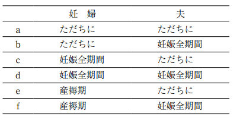
ａ 妊婦 ただちに／夫 ただちに
ｂ 妊婦 ただちに／夫 妊娠全期間
ｃ 妊婦 妊娠全期間／夫 ただちに
ｄ 妊婦 妊娠全期間／夫 妊娠全期間
ｅ 妊婦 産褥期／夫 ただちに
ｆ 妊婦 産褥期／夫 妊娠全期間
✅
ｅ 妊婦 産褥期／夫 ただちに
風疹ワクチンは生ワクチンで妊娠中禁忌のため妻は産褥期に、夫は家庭内感染を防ぐためただちに接種する。
💉 風疹抗体陰性妊婦とワクチン
風疹HI抗体陰性＝免疫がなく、妊娠中に初感染すると先天性風疹症候群（白内障・心奇形・難聴）の危険。・風疹ワクチンは生ワクチン → 妊娠中は禁忌（接種後2か月避妊）。よって妻は妊娠中は接種できず、産褥期（分娩後）に接種
・夫はただちに接種し、家庭内で夫から妊婦への感染を防ぐ
したがって組合せは「妊婦＝産褥期／夫＝ただちに」（選択肢e）。
□ 選択肢の検討
| 選択肢 | 評価 |
|---|---|
| ａ 妊婦ただちに／夫ただちに | 誤り。妊婦は生ワクチン禁忌 |
| ｂ 妊婦ただちに／夫妊娠全期間 | 誤り。妊婦は接種不可 |
| ｃ 妊婦妊娠全期間／夫ただちに | 誤り。妊婦は妊娠中いつでも接種不可 |
| ｄ 妊婦妊娠全期間／夫妊娠全期間 | 誤り。妊婦不可、夫は即接種すべき |
| ｅ 妊婦産褥期／夫ただちに | 正しい。妊婦は産後、夫は即接種 |
| ｆ 妊婦産褥期／夫妊娠全期間 | 誤り。夫は「ただちに」が正しい |
Q.301(107A-1)96%
合併症妊娠と起こりやすい異常の組合せで正しいのはどれか。
ａ 糖尿病 ───────────────── 頸管無力症
ｂ 慢性腎炎 ──────────────── 前置胎盤
ｃ 気管支喘息 ─────────────── 双胎間輸血症候群
ｄ 甲状腺機能亢進症 ──────────── 巨大児
ｅ 全身性エリテマトーデス〈SLE〉 ────── 流 産
✅
ｅ 全身性エリテマトーデス〈SLE〉 ────── 流 産
全身性エリテマトーデス〈SLE〉は流産（特に抗リン脂質抗体合併時）を起こしやすく、正しい組合せ。
🩺 合併症妊娠と起こりやすい異常
・SLE → 流産・胎児死亡（抗リン脂質抗体症候群を合併すると胎盤梗塞・血栓で流産）：正しい誤りの組合せ：
・糖尿病 → 巨大児・奇形（頸管無力症ではない）
・慢性腎炎 → 妊娠高血圧腎症・FGR（前置胎盤ではない）
・気管支喘息 → FGR等（双胎間輸血症候群は一絨毛膜双胎の合併で無関係）
・甲状腺機能亢進症 → 流早産・低出生体重（巨大児ではない。巨大児は糖尿病）
□ 選択肢の検討
| 選択肢 | 評価 |
|---|---|
| ａ 糖尿病 ─ 頸管無力症 | 誤り。糖尿病は巨大児・奇形 |
| ｂ 慢性腎炎 ─ 前置胎盤 | 誤り。慢性腎炎は妊娠高血圧腎症・FGR |
| ｃ 気管支喘息 ─ 双胎間輸血症候群 | 誤り。TTTSは一絨毛膜双胎の合併 |
| ｄ 甲状腺機能亢進症 ─ 巨大児 | 誤り。むしろ流早産・低出生体重 |
| ｅ SLE ─ 流産 | 正しい。抗リン脂質抗体合併で流産・胎児死亡 |
Q.302(107A-21)📷 画像98%
30 歳の初妊婦。妊娠34 週3 日。腹部超音波検査で羊水過多と胎児胸部腫瘤を指摘され紹介受診した。胎児心拍数陣痛図に異常なし。内診で子宮口は閉鎖。腹部単純MRI のT2 強調像を示す。
胎児の診断として最も考えられるのはどれか。
胎児の診断として最も考えられるのはどれか。
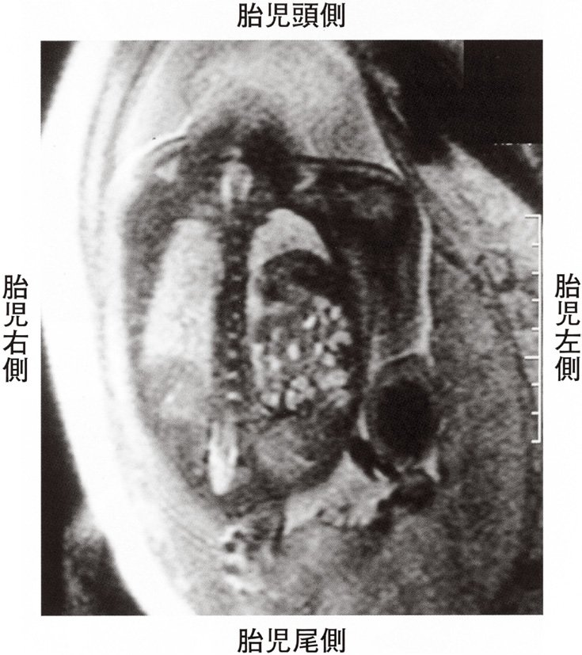
ａ 右胸心
ｂ 乳び胸
ｃ 心臓腫瘍
ｄ 縦隔腫瘍
ｅ 横隔膜ヘルニア
✅
ｅ 横隔膜ヘルニア
胸腔内に腹部臓器（胃・腸管）が脱出した像で、羊水過多を伴う横隔膜ヘルニアが最も考えられる。
📸 胎児胸部腫瘤＋羊水過多＝横隔膜ヘルニア
実際の画像は参照できないが、胎児の「胸部腫瘤」の正体が胸腔内に脱出した胃・腸管であれば先天性横隔膜ヘルニア。MRI T2で胸腔内に液体を含む胃・腸管、心臓の偏位、肺低形成を認める。消化管の圧迫・通過障害で羊水過多を伴う。出生後は肺低形成と肺高血圧が問題となり、計画的な周産期管理が必要。
□ 選択肢の検討
| 選択肢 | 評価 |
|---|---|
| ａ 右胸心 | 誤り。心臓の位置異常のみで腫瘤・羊水過多を説明しない |
| ｂ 乳び胸 | 誤り。胸水は貯留するが「腫瘤」ではない |
| ｃ 心臓腫瘍 | 誤り。羊水過多・胸部腫瘤の像に合いにくい |
| ｄ 縦隔腫瘍 | 誤り。頻度が低く典型的でない |
| ｅ 横隔膜ヘルニア | 正しい。腹部臓器が胸腔へ脱出、羊水過多を伴う |
Q.303(107B-47)2択73%
37 歳の1 回経妊0 回経産婦。妊娠35 週0 日。昨夜から胎動の減少を自覚し来院した。これまでの妊娠経過は順調。身長160cm、体重56kg（非妊時52kg）。血圧110/68mmHg。尿蛋白（－）、糖（－）。子宮底長28cm、腹囲85cm。Leopold 診察法では第1 頭位。胎児心拍は136/ 分。両下肢に浮腫を認めない。超音波検査を行うことにした。
注意して観察すべき項目はどれか。2 つ選べ。
注意して観察すべき項目はどれか。2 つ選べ。
ａ 羊水量
ｂ 胎盤の位置
ｃ 胎児推定体重
ｄ 子宮壁の厚さ
ｅ 胎児後頸部浮腫
✅
ａ 羊水量
ｃ 胎児推定体重
胎動減少では胎児発育不全・胎児機能不全を評価するため、羊水量と胎児推定体重に注意して観察する。
🔍 胎動減少での超音波評価
妊娠35週で子宮底長28cm（週数よりやや小さめ）＋胎動減少。胎児発育不全・胎児機能不全（胎盤機能低下）を評価する。・羊水量：胎盤機能低下・慢性低酸素で羊水過少
・胎児推定体重：FGRの有無・程度
に注意する（選択肢a・c）。BPS（呼吸様運動・胎動・筋緊張・羊水量）も併せて評価する。
□ 選択肢の検討
| 選択肢 | 評価 |
|---|---|
| ａ 羊水量 | 正しい。胎盤機能・慢性低酸素の指標 |
| ｂ 胎盤の位置 | 不適。前置胎盤の評価で胎動減少とは無関係 |
| ｃ 胎児推定体重 | 正しい。FGRの評価 |
| ｄ 子宮壁の厚さ | 不適。胎動評価に無関係 |
| ｅ 胎児後頸部浮腫〈NT〉 | 不適。初期の染色体異常スクリーニング指標で時期外れ |
Q.304(107D-13)2択96%
妊娠高血圧症候群に対して降圧薬として使用されるのはどれか。2 つ選べ。
ａ 硝酸薬
ｂ α- メチルドパ
ｃ 塩酸ヒドララジン
ｄ サイアザイド系利尿薬
ｅ アンジオテンシンⅡ受容体拮抗薬
✅
ｂ α- メチルドパ
ｃ 塩酸ヒドララジン
α-メチルドパと塩酸ヒドララジンは妊娠高血圧症候群に安全に使える降圧薬である。
💊 妊娠高血圧症候群の降圧薬
妊娠高血圧症候群で使える降圧薬：・α-メチルドパ（中枢性）
・ヒドララジン（血管拡張）
・ラベタロール（αβ遮断）
・ニフェジピン／ニカルジピン（Ca拮抗薬）
妊娠中禁忌の降圧薬：ACE阻害薬・ARB（胎児腎障害・羊水過少・頭蓋変形）。サイアザイド系利尿薬も循環血漿量を減らすため原則使わない。
□ 選択肢の検討
| 選択肢 | 評価 |
|---|---|
| ａ 硝酸薬 | ×。狭心症・心不全の薬で第一選択でない |
| ｂ α-メチルドパ | 正しい。中枢性降圧薬、妊娠で安全 |
| ｃ 塩酸ヒドララジン | 正しい。血管拡張薬、妊娠で安全 |
| ｄ サイアザイド系利尿薬 | ×。循環血漿量減少のため原則使わない |
| ｅ ARB | 禁忌。胎児腎障害・羊水過少（ACE阻害薬も同様） |
Q.305(107D-14)2択98%
胎児期の感染が感音難聴の原因となるのはどれか。2 つ選べ。
ａ EB ウイルス
ｂ 風疹ウイルス
ｃ サイトメガロウイルス
ｄ インフルエンザウイルス
ｅ ヒトパピローマウイルス〈HPV〉
✅
ｂ 風疹ウイルス
ｃ サイトメガロウイルス
風疹ウイルスとサイトメガロウイルスの先天感染は感音難聴の代表的原因である。
👂 先天感染と感音難聴
・風疹（先天性風疹症候群）：白内障・心奇形（PDA）とともに感音難聴が三徴・サイトメガロウイルス〈CMV〉：先天感染で最多の非遺伝性感音難聴の原因。出生時無症候でも遅発性・進行性難聴を来す
この2つが胎児期感染による感音難聴の代表（選択肢b・c）。
□ 主な母子感染
| 病原体 | 経路 | 影響 |
|---|---|---|
| 風疹 | 経胎盤 | 先天性風疹症候群：白内障・心奇形（PDA）・難聴 |
| CMV | 経胎盤・産道・母乳 | FGR・小頭症・脳室周囲石灰化・難聴 |
| トキソプラズマ | 経胎盤 | 水頭症・脳内石灰化・網脈絡膜炎 |
| 梅毒 | 経胎盤 | 先天梅毒：肝脾腫・骨軟骨炎・血小板減少 |
| パルボB19 | 経胎盤 | 胎児貧血・胎児水腫 |
| HBV | 主に産道 | 児にHBIG＋ワクチンで予防 |
| HTLV-1 | 主に母乳 | ATL。断乳で予防 |
| GBS | 産道 | 新生児敗血症・髄膜炎。分娩時ペニシリン |
□ 選択肢の検討
| 選択肢 | 評価 |
|---|---|
| ａ EBウイルス | ×。先天難聴の主因でない |
| ｂ 風疹ウイルス | 正しい。先天性風疹症候群の三徴の一つ |
| ｃ サイトメガロウイルス | 正しい。先天感染で最多の感音難聴原因 |
| ｄ インフルエンザウイルス | ×。先天難聴の原因でない |
| ｅ HPV | ×。若年性喉頭乳頭腫の原因だが難聴でない |
Q.306(107E-21)97%
疾患と検査の組合せで正しいのはどれか。
ａ 異所性妊娠 ───────── 血中エストラジオール定量
ｂ 過期妊娠 ────────── 羊水マイクロバブルテスト
ｃ 子宮筋腫合併妊娠 ────── 羊水染色体検査
ｄ 胎児水腫 ────────── 子宮頸管長計測
ｅ 胎児発育不全 ──────── 胎児臍帯動脈血流計測
✅
ｅ 胎児発育不全 ──────── 胎児臍帯動脈血流計測
胎児発育不全は胎盤機能を反映する臍帯動脈血流計測で評価し、正しい組合せ。
🔍 疾患と検査の組合せ
・胎児発育不全 → 胎児臍帯動脈血流計測：胎盤血管抵抗（RI/PI上昇、拡張期途絶・逆流）を評価：正しい誤りの組合せ：
・異所性妊娠 → 経腟超音波＋hCG（エストラジオールでない）
・過期妊娠 → 児の評価はNST/BPS（羊水マイクロバブルは肺成熟の検査）
・子宮筋腫合併妊娠 → 超音波（羊水染色体検査でない）
・胎児水腫 → 原因検索（貧血・不整脈等。子宮頸管長は早産の指標）
□ 選択肢の検討
| 選択肢 | 評価 |
|---|---|
| ａ 異所性妊娠 ─ 血中エストラジオール | 誤り。経腟超音波＋hCGで診断 |
| ｂ 過期妊娠 ─ 羊水マイクロバブルテスト | 誤り。それは肺成熟の検査 |
| ｃ 子宮筋腫合併妊娠 ─ 羊水染色体検査 | 誤り。超音波で評価 |
| ｄ 胎児水腫 ─ 子宮頸管長計測 | 誤り。頸管長は早産の指標 |
| ｅ 胎児発育不全 ─ 胎児臍帯動脈血流計測 | 正しい。胎盤機能の評価 |
Q.307(107E-41)84%
30 歳の初妊婦。妊娠28 週5 日。腹部膨満感を主訴に来院した。妊娠10 週で分娩予定日を決定されたが、それ以降は妊婦健康診査を受けていなかった。身長157cm、体重60.5kg（非妊時45.5kg）。内診で子宮口は閉鎖、帯下に異常なし。尿蛋白（－）、糖2 ＋、ケトン体（－）。随時血糖110mg/dl。胎児心拍数陣痛図で子宮収縮なし、胎児心拍パターンに異常なし。腹部超音波検査で羊水指数28cm、胎児推定体重1,800g で胎児構造異常なし。経腟超音波検査で子宮頸管長は40mm である。
治療方針の決定に有用な検査はどれか。
治療方針の決定に有用な検査はどれか。
ａ 腹部MRI
ｂ 心エコー検査
ｃ 腟分泌物培養
ｄ 経口グルコース負荷試験
ｅ コントラクションストレステスト
✅
ｄ 経口グルコース負荷試験
羊水過多（AFI 28cm）＋尿糖2+で妊娠糖尿病が疑われ、経口グルコース負荷試験が治療方針の決定に有用。
🍬 羊水過多と妊娠糖尿病
羊水指数28cm＝羊水過多（基準5〜25）。羊水過多の原因として妊娠糖尿病（母体高血糖→胎児高血糖→浸透圧利尿で尿量増加）を疑う。尿糖2＋・非妊時からの著明な体重増加（+15kg）もあり、75g経口グルコース負荷試験〈OGTT〉で妊娠糖尿病を診断すれば血糖管理という治療方針が決まる（選択肢d）。
□ 選択肢の検討
| 選択肢 | 評価 |
|---|---|
| ａ 腹部MRI | 不適。羊水過多の原因診断の第一でない |
| ｂ 心エコー検査 | 不適。母体心機能評価で本状況に不要 |
| ｃ 腟分泌物培養 | 不適。感染兆候がない |
| ｄ 経口グルコース負荷試験 | 正しい。妊娠糖尿病の診断→治療方針決定 |
| ｅ コントラクションストレステスト | 不適。子宮収縮なく胎児良好で不要 |
Q.308(107G-15)88%
妊娠高血圧症候群のために帝王切開を受けた女性。
分娩後3 か月の時点で、異常所見と考えられるのはどれか。
分娩後3 か月の時点で、異常所見と考えられるのはどれか。
ａ 尿蛋白3 ＋である。
ｂ 乳房に緊満がある。
ｃ 月経が発来していない。
ｄ 血圧が136/84mmHg である。
ｅ 妊娠前の体重に復していない。
✅
ａ 尿蛋白3 ＋である。
妊娠高血圧症候群は分娩後12週までに正常化するのが原則で、産後3か月で尿蛋白3+が残るのは異常（腎疾患を示唆）。
🩺 妊娠高血圧症候群の産褥経過
妊娠高血圧症候群は原則として分娩後12週（3か月）までに血圧・蛋白尿が正常化する。したがって産後3か月で尿蛋白3＋が持続するのは異常で、もともとの腎疾患（慢性腎炎・ループス腎炎など）の存在を疑い精査する（選択肢a）。
他は生理的：乳房緊満（授乳）・月経未発来（授乳性無月経）・血圧136/84（正常域）・体重が完全には戻らない。
□ 選択肢の検討
| 選択肢 | 評価 |
|---|---|
| ａ 尿蛋白3＋である | 正しい（異常）。産後12週で残存は腎疾患を疑う |
| ｂ 乳房に緊満がある | 正常。授乳期の生理的変化 |
| ｃ 月経が発来していない | 正常。授乳性無月経 |
| ｄ 血圧が136/84mmHg | 正常域。140/90未満 |
| ｅ 妊娠前の体重に復していない | 正常。徐々に戻る |
Q.309(106D-45)32%
36 歳の初妊婦。妊娠35 週。妊婦健康診査のため来院した。これまでの妊娠経過に異常を認めていなかった。血圧144/92mmHg。尿蛋白2 ＋、糖（－）。赤血球380 万、Hb 13.5g/dl、Ht 40％、白血球9,000、血小板20 万、PT 88％。総蛋白6.5g/dl、アルブミン3.2g/dl、尿素窒素16mg/dl、クレアチニン0.8mg/dl、尿酸7.5mg/dl、AST 28IU/l、ALT 26IU/l、LD 350IU/l（基準176 ～353）、Ca 7.8mg/dl。腹部超音波検査で胎児推定体重1,500g である。
母児管理を行う上で最も注意すべきなのはどれか。
母児管理を行う上で最も注意すべきなのはどれか。
ａ 血 圧
ｂ 尿蛋白
ｃ 血小板数
ｄ 肝機能検査値
ｅ 胎児推定体重
✅
ｅ 胎児推定体重
妊娠高血圧腎症に胎児発育不全（35週で1,500g）を合併しており、胎児推定体重（胎児の状態）に最も注意する。
🚼 妊娠高血圧腎症＋FGR
妊娠35週で高血圧144/92＋尿蛋白2＋＝妊娠高血圧腎症。胎児推定体重1,500gは妊娠35週として小さく胎児発育不全〈FGR〉を示す。妊娠高血圧腎症は胎盤機能不全を介してFGR・胎児機能不全を来すため、母体の高血圧・臓器障害の管理と並んで胎児推定体重（胎児の発育・well-being）に最も注意する（選択肢e）。FGRの進行・胎児機能不全があれば娩出時期を決定する。
□ 選択肢の検討
| 選択肢 | 評価 |
|---|---|
| ａ 血圧 | 注意は要るが144/92で管理可能。最重要は胎児 |
| ｂ 尿蛋白 | 注意は要るが単独で緊急性は低い |
| ｃ 血小板数 | 20万で正常、HELLPなし |
| ｄ 肝機能検査値 | AST/ALT正常でHELLPなし |
| ｅ 胎児推定体重 | 正しい。FGR合併で胎児の状態が最重要 |
Q.310(106D-60)86%
38 歳の初妊婦。妊娠36 週。頭痛を主訴に来院した。妊娠34 週までは異常なし。1 週前に軽い頭痛を自覚し、次第に増強したため受診した。血圧160/110mmHg。全身に浮腫を認める。尿蛋白2 ＋。胎児心拍数陣痛図で胎児機能不全と診断し、緊急帝王切開で2,600g の女児を娩出した。術後8 時間で、褥婦が強直性間代性けいれんをきたした。
治療薬の有効成分はどれか。
治療薬の有効成分はどれか。
ａ Na
ｂ K
ｃ Cl
ｄ Ca
ｅ P
ｆ Mg
ｇ Cu
ｈ Fe
ｉ Zn
✅
ｆ Mg
産褥子癇（分娩後の全身けいれん）であり、治療薬の有効成分はマグネシウム（硫酸マグネシウム）である。
⚡ 産褥子癇
妊娠高血圧腎症（160/110＋蛋白尿）で、分娩後（術後8時間）に強直性間代性けいれん＝産褥子癇。子癇は分娩前・分娩中だけでなく分娩後（産褥期）にも起こる。治療薬は硫酸マグネシウム〈MgSO₄〉で、有効成分はマグネシウム〈Mg〉（選択肢f）。
Mg中毒（腱反射消失→呼吸抑制）の解毒薬はカルシウム〈Ca〉。
□ 選択肢の検討
| 選択肢 | 評価 |
|---|---|
| ａ〜ｅ・ｇ〜ｉ Na/K/Cl/Ca/P/Cu/Fe/Zn | 誤り。子癇治療薬の有効成分でない |
| ｆ Mg | 正しい。硫酸マグネシウムの有効成分。子癇の第一選択 |
Q.311(106G-41)📷 画像77%
32 歳の初産婦。妊娠33 週。胎児超音波検査で異常を指摘され来院した。胎児MRI のT2 強調像を示す。
この胎児で異常があると考えられる部位はどれか。
この胎児で異常があると考えられる部位はどれか。
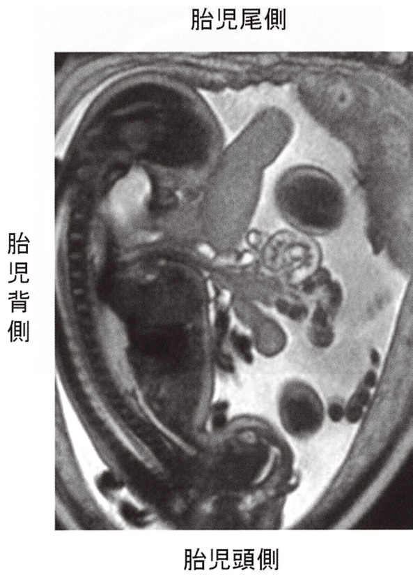
ａ 肺
ｂ 心 臓
ｃ 横隔膜
ｄ 腹 壁
ｅ 脊 椎
✅
ｄ 腹 壁
胎児MRIで腹壁から腹腔内臓器が体外へ脱出した像であり、異常部位は腹壁（腹壁破裂／臍帯ヘルニア）である。
📸 胎児腹壁異常
実際の画像は参照できないが、本問で正解となる典型像＝腹壁の欠損部から腸管など腹腔内臓器が体外（羊水中）へ脱出している像。これは腹壁の異常（腹壁破裂〈gastroschisis〉／臍帯ヘルニア〈omphalocele〉）。
・腹壁破裂：臍の右側の欠損、脱出臓器に膜がない
・臍帯ヘルニア：臍帯基部の欠損、脱出臓器が膜に覆われ、染色体異常・他奇形を合併しやすい
□ 選択肢の検討
| 選択肢 | 評価 |
|---|---|
| ａ 肺 | 誤り。肺の占拠病変・低形成の像ではない |
| ｂ 心臓 | 誤り。心奇形の所見ではない |
| ｃ 横隔膜 | 誤り。横隔膜ヘルニアなら臓器は胸腔へ（腹壁でなく胸部腫瘤） |
| ｄ 腹壁 | 正しい。腹壁欠損から臓器が体外へ脱出 |
| ｅ 脊椎 | 誤り。二分脊椎の所見ではない |
Q.312(105I-53)61%
33 歳の初産婦。妊娠30 週に妊娠糖尿病の疑いで紹介受診し、妊娠34 週からインスリン治療を開始した。現在、妊娠39 週で推定胎児体重4,000g。
経腟分娩を行う場合、新生児合併症として起こりにくいのはどれか。
経腟分娩を行う場合、新生児合併症として起こりにくいのはどれか。
ａ 低血糖
ｂ 分娩外傷
ｃ 壊死性腸炎
ｄ 胎便吸引症候群
ｅ 高ビリルビン血症
✅
ｃ 壊死性腸炎
糖尿病母体の巨大児では低血糖・分娩外傷・胎便吸引・高ビリルビン血症は起こりやすいが、壊死性腸炎は早産児に多く起こりにくい。
🍼 糖尿病母体児〈IDM〉・巨大児の合併症
母体糖尿病＋巨大児（4,000g）で起こりやすい新生児合併症：・新生児低血糖（高インスリン血症）
・分娩外傷（肩甲難産・腕神経叢麻痺・鎖骨骨折）
・胎便吸引症候群・高ビリルビン血症・多血症・RDS・低カルシウム血症
一方壊死性腸炎〈NEC〉は主に早産・低出生体重児の疾患で、成熟した巨大児では起こりにくい（選択肢c）。
□ 選択肢の検討
| 選択肢 | 評価 |
|---|---|
| ａ 低血糖 | 起こりやすい。高インスリン血症 |
| ｂ 分娩外傷 | 起こりやすい。巨大児の肩甲難産 |
| ｃ 壊死性腸炎 | 起こりにくい（正解）。早産・低出生体重児の疾患 |
| ｄ 胎便吸引症候群 | 起こりやすい。過熟・低酸素で |
| ｅ 高ビリルビン血症 | 起こりやすい。多血症・未熟性で |
Q.313(105I-67)📷 画像55%
28 歳の女性。妊娠36 週。けいれん発作のため搬入された。家族によると、突然意識を失った後に全身のけいれんが起こったという。受診時にけいれんは治まっていたが、昏睡状態は続いている。頭部MRI のT2 強調像（A）と拡散強調像（B）とを示す。
この患者の脳にみられる病態はどれか。
この患者の脳にみられる病態はどれか。
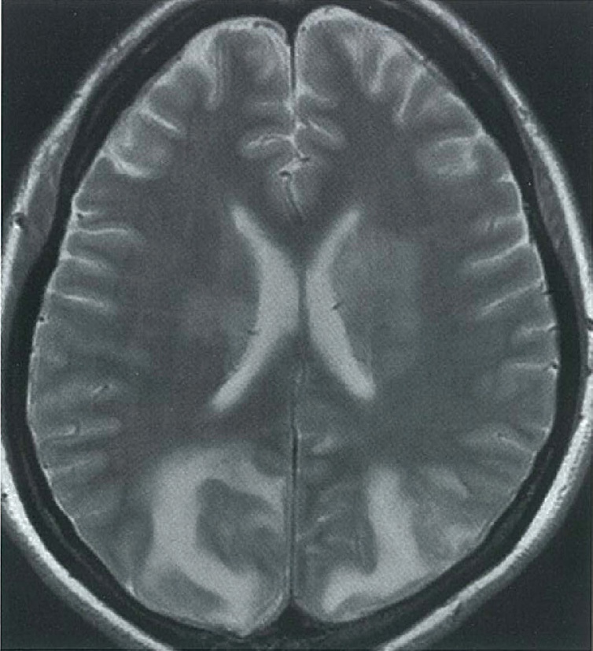
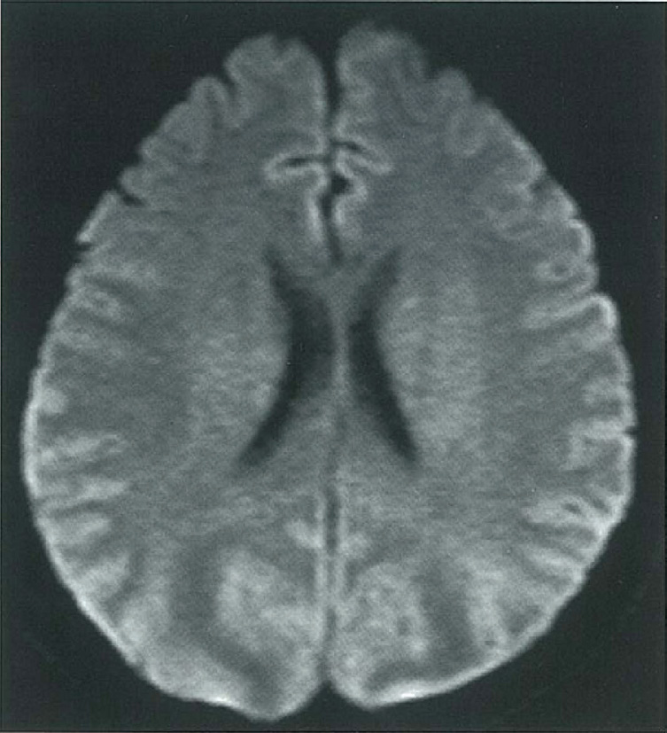
ａ 梗 塞
ｂ 出 血
ｃ 腫 瘍
ｄ 脱 髄
ｅ 浮 腫
✅
ｅ 浮 腫
子癇に伴うPRES（可逆性後頭葉白質脳症）で、血管性浮腫が主体である。
📸 子癇とPRES
妊娠36週の全身けいれん＝子癇。脳病態はPRES〈可逆性後頭葉白質脳症〉。・T2/FLAIRで後頭〜頭頂葉優位の高信号（血管性浮腫）
・拡散強調像〈DWI〉では明瞭な拡散制限がない（＝梗塞＝細胞性浮腫ではなく血管性浮腫）
血圧管理・MgSO₄で多くは可逆性に改善する（Q264と同型）。
□ 選択肢の検討
| 選択肢 | 評価 |
|---|---|
| ａ 梗塞 | 誤り。DWIで拡散制限が乏しく細胞性浮腫でない |
| ｂ 出血 | 誤り。出血の信号でない |
| ｃ 腫瘍 | 誤り。占拠性病変でない |
| ｄ 脱髄 | 誤り。脱髄の分布・経過でない |
| ｅ 浮腫 | 正しい。PRESの血管性浮腫（可逆性） |
Q.314(104B-50)連問 1/383%
次の文を読み、314〜316の問いに答えよ。
34 歳の1 回経産婦。妊娠31 週5 日に周産期管理目的で紹介され来院した。
現病歴：半年前に無月経を主訴として自宅近くの診療所を受診し、妊娠7 週と診断された。診療所で健診を受けていたが、妊娠10 週時に胎児頭殿長〈CRL〉から分娩予定日が補正された。補正後の妊娠16 週ころから尿糖陽性が時々認められていたが、27 週時から尿糖強陽性（定性試験で3 ＋）が出現したため29 週時に75g 経口ブドウ糖負荷試験〈OGTT〉が施行された。負荷前値：110mg/dl、1 時間値：204mg/dl、2 時間値：168mg/dl であった。
既往歴：特記すべきことはない。耐糖能低下を指摘されたことはない。
月経歴：初経11 歳。月経周期28 日、整。持続5 ～6 日。月経障害なし。妊娠・分娩歴：25 歳時に正常経腟分娩（妊娠39 週、3,790g）。
家族歴：母が糖尿病。
現 症：意識は清明。身長156cm、体重76kg（妊娠前体重62.5kg、BMI ＝25.7）。体温36.7℃。脈拍88/ 分、整。血圧136/86mmHg。心音と呼吸音とに異常を認めない。下腿浮腫を認めない。内診で胎児先進部は児頭で子宮口は閉鎖。超音波検査で子宮頸管長は4.2cm で胎児推定体重は2,200g（＋1.8 SD）、明らかな奇形は認めない。Biophysical profile score は10 点である。
検査所見：尿所見：蛋白（－）、糖2 ＋、ケトン体（－）。血液所見：赤血球305 万、Hb 10.2g/dl、Ht 31％、白血球6,900、血小板11 万。血液生化学所見：血糖148mg/dl、HbA1c 6.8％、総蛋白7.0g/dl、アルブミン4.2g/dl、尿素窒素16mg/dl、クレアチニン0.6mg/dl、尿酸7.8mg/dl、総コレステロール240mg/dl、トリグリセリド130mg/dl、総ビリルビン0.8mg/dl、直接ビリルビン0.5mg/dl、AST 40IU/l、ALT 48IU/l、LD 320IU/l（基準176 ～353）、ALP 270IU/l（基準115 ～359）。
この患者で正しいのはどれか。
34 歳の1 回経産婦。妊娠31 週5 日に周産期管理目的で紹介され来院した。
現病歴：半年前に無月経を主訴として自宅近くの診療所を受診し、妊娠7 週と診断された。診療所で健診を受けていたが、妊娠10 週時に胎児頭殿長〈CRL〉から分娩予定日が補正された。補正後の妊娠16 週ころから尿糖陽性が時々認められていたが、27 週時から尿糖強陽性（定性試験で3 ＋）が出現したため29 週時に75g 経口ブドウ糖負荷試験〈OGTT〉が施行された。負荷前値：110mg/dl、1 時間値：204mg/dl、2 時間値：168mg/dl であった。
既往歴：特記すべきことはない。耐糖能低下を指摘されたことはない。
月経歴：初経11 歳。月経周期28 日、整。持続5 ～6 日。月経障害なし。妊娠・分娩歴：25 歳時に正常経腟分娩（妊娠39 週、3,790g）。
家族歴：母が糖尿病。
現 症：意識は清明。身長156cm、体重76kg（妊娠前体重62.5kg、BMI ＝25.7）。体温36.7℃。脈拍88/ 分、整。血圧136/86mmHg。心音と呼吸音とに異常を認めない。下腿浮腫を認めない。内診で胎児先進部は児頭で子宮口は閉鎖。超音波検査で子宮頸管長は4.2cm で胎児推定体重は2,200g（＋1.8 SD）、明らかな奇形は認めない。Biophysical profile score は10 点である。
検査所見：尿所見：蛋白（－）、糖2 ＋、ケトン体（－）。血液所見：赤血球305 万、Hb 10.2g/dl、Ht 31％、白血球6,900、血小板11 万。血液生化学所見：血糖148mg/dl、HbA1c 6.8％、総蛋白7.0g/dl、アルブミン4.2g/dl、尿素窒素16mg/dl、クレアチニン0.6mg/dl、尿酸7.8mg/dl、総コレステロール240mg/dl、トリグリセリド130mg/dl、総ビリルビン0.8mg/dl、直接ビリルビン0.5mg/dl、AST 40IU/l、ALT 48IU/l、LD 320IU/l（基準176 ～353）、ALP 270IU/l（基準115 ～359）。
この患者で正しいのはどれか。
ａ 妊娠高血圧である。
ｂ 糖尿病合併妊娠である。
ｃ 肥満は本病態の危険因子となる。
ｄ 年齢は本病態の危険因子とならない。
ｅ 家族歴は本病態の危険因子とならない。
✅
ｃ 肥満は本病態の危険因子となる。
75g OGTTで妊娠糖尿病であり、肥満（BMI 25.7）はその危険因子となる。
🍬 妊娠糖尿病の危険因子
75g OGTT（負荷前110・1時間204・2時間168）は複数項目が基準を超え妊娠糖尿病〈GDM〉。BMI 25.7の肥満・母が糖尿病（家族歴）・35歳（高齢）はいずれもGDMの危険因子。肥満は本病態（GDM）の危険因子となる（選択肢c）。妊娠前からの糖尿病診断はなく「糖尿病合併妊娠」ではない。年齢・家族歴も危険因子である。
□ 妊娠糖尿病の危険因子
妊娠糖尿病〈GDM〉の危険因子：肥満・高齢・糖尿病の家族歴・巨大児分娩の既往・尿糖陽性・多囊胞性卵巣症候群・過度の体重増加など。本病態（GDM）はこれらを背景に、妊娠中のインスリン抵抗性増大により発症する。□ 選択肢の検討
| 選択肢 | 評価 |
|---|---|
| ａ 妊娠高血圧である | 誤り。血圧136/86で高血圧の診断基準未満 |
| ｂ 糖尿病合併妊娠である | 誤り。妊娠前の糖尿病診断がない（妊娠中発症のGDM） |
| ｃ 肥満は本病態の危険因子となる | 正しい。BMI 25.7はGDMの危険因子 |
| ｄ 年齢は危険因子とならない | 誤り。高齢はGDMの危険因子 |
| ｅ 家族歴は危険因子とならない | 誤り。糖尿病の家族歴は危険因子 |
Q.315(104B-51)連問 2/360%
（34歳1回経産婦。妊娠糖尿病〈GDM〉で入院。血糖148・HbA1c 6.8%、胎児推定体重＋1.8SD。）
入院後の検査項目として重要でないのはどれか。
入院後の検査項目として重要でないのはどれか。
ａ 尿蛋白
ｂ 胎児発育
ｃ 凝固・線溶検査
ｄ 血糖値の日内変動
ｅ 75g 経口ブドウ糖負荷試験〈OGTT〉
✅
ｅ 75g 経口ブドウ糖負荷試験〈OGTT〉
既にOGTTで妊娠糖尿病と診断済みのため、入院後に再度75g OGTTを行う必要はない。
🍬 診断後に不要な検査
すでに29週の75g OGTTでGDMと診断確定済み。入院後は血糖の日内変動（管理指標）・胎児発育・尿蛋白（HDP合併の監視）・凝固線溶（HELLP/DIC監視）が重要。
一方75g OGTTを再検する意義はなく（診断は済んでおり、高血糖を負荷するだけ）重要でない（選択肢e）。
□ 選択肢の検討
| 選択肢 | 評価 |
|---|---|
| ａ 尿蛋白 | 重要。妊娠高血圧腎症の合併監視 |
| ｂ 胎児発育 | 重要。巨大児・FGRの評価 |
| ｃ 凝固・線溶検査 | 重要。HELLP・DICの監視 |
| ｄ 血糖値の日内変動 | 重要。血糖管理の指標 |
| ｅ 75g OGTT | 重要でない（正解）。既に診断済みで再検不要 |
Q.316(104B-52)3択連問 3/354%
（GDM症例。）その後の経過：入院後1 週間加療した時点で治療継続を拒否し退院、受診していなかったが、妊娠35 週4 日に少量の性器出血と右季肋部痛とを主訴に来院した。再入院時の脈拍104/ 分、整。血圧160/104mmHg。尿蛋白100mg/dl。赤血球270 万、Hb 9.0g/dl、Ht 28％、白血球9,200、血小板9.0 万。AST 480IU/l、ALT 460IU/l、LD 700IU/l（基準176 ～353）。緊急帝王切開を行うこととした。
注意すべき母児の合併症はどれか。3 つ選べ。
注意すべき母児の合併症はどれか。3 つ選べ。
ａ 子癇発作
ｂ 播種性血管内凝固〈DIC〉
ｃ 胎児肺低形成
ｄ 新生児高カルシウム血症
ｅ 新生児呼吸窮迫症候群〈RDS〉
✅
ａ 子癇発作
ｂ 播種性血管内凝固〈DIC〉
ｅ 新生児呼吸窮迫症候群〈RDS〉
HELLP症候群＋重症高血圧の状態で、子癇発作・DIC（母体）と、35週での娩出による新生児呼吸窮迫症候群（児）に注意する。
🩸 HELLP＋早産娩出の合併症
妊娠35週で高血圧160/104＋血小板9.0万＋AST/ALT/LD著明上昇＝HELLP症候群、かつ右季肋部痛・性器出血（早剝の可能性）。注意すべき合併症：
・子癇発作（母体）：重症妊娠高血圧腎症で切迫子癇
・DIC（母体）：HELLP・早剝で凝固消費
・新生児呼吸窮迫症候群〈RDS〉（児）：妊娠35週の早産で肺未成熟
の3つ（選択肢a・b・e）。
□ HELLP症候群
HELLP症候群＝Hemolysis（溶血：LD上昇・間接ビリルビン上昇）・Elevated Liver enzymes（AST/ALT上昇）・Low Platelets（血小板減少＜10万）。重症妊娠高血圧腎症に伴い、DIC・急性腎不全・肝被膜下血腫破裂・常位胎盤早期剝離・子癇を合併しうる。治療は妊娠終結（娩出）が基本で、MgSO₄で子癇予防、DIC治療を併用する。□ 選択肢の検討
| 選択肢 | 評価 |
|---|---|
| ａ 子癇発作 | 正しい。重症妊娠高血圧腎症 |
| ｂ DIC | 正しい。HELLP・早剝で凝固消費 |
| ｃ 胎児肺低形成 | 誤り。羊水過少の慢性経過が必要で本例は該当しない |
| ｄ 新生児高カルシウム血症 | 誤り。むしろ低Ca血症（IDM） |
| ｅ 新生児RDS | 正しい。35週の早産で肺未成熟 |
Q.317(104E-5)76%
母体感染の病原体と対応の組合せで正しいのはどれか。
ａ B 型肝炎ウイルス ───────────── 児へのワクチン投与
ｂ パルボウイルスB19 ──────────── 人工妊娠中絶
ｃ B 群レンサ球菌〈GBS〉 ─────────── 母体へのセフェム系抗菌薬投与
ｄ サイトメガロウイルス ─────────── 胎児輸血
ｅ ヒトT 細胞白血病ウイルス〈HTLV-1〉 ──── 帝王切開
✅
ａ B 型肝炎ウイルス ───────────── 児へのワクチン投与
B型肝炎ウイルスは出生児へのワクチン（＋HBIG）投与で母子感染を予防でき、正しい組合せ。
🦠 母体感染と対応
・B型肝炎ウイルス → 児へのワクチン（＋抗HBsヒト免疫グロブリン）投与：正しい誤りの組合せ：
・パルボB19 → 胎児貧血・水腫に胎児輸血（人工妊娠中絶ではない）
・GBS → 分娩時ペニシリン系（セフェムでなく）
・CMV → 確立した胎児治療はない（胎児輸血はパルボ・血液型不適合）
・HTLV-1 → 断乳（人工乳）。帝王切開は無効（主経路は母乳）
□ 主な母子感染と対応
| 病原体 | 経路 | 影響 |
|---|---|---|
| 風疹 | 経胎盤 | 先天性風疹症候群：白内障・心奇形（PDA）・難聴 |
| CMV | 経胎盤・産道・母乳 | FGR・小頭症・脳室周囲石灰化・難聴・肝脾腫・血小板減少 |
| トキソプラズマ | 経胎盤 | 水頭症・脳内石灰化・網脈絡膜炎 |
| 梅毒 | 経胎盤 | 先天梅毒：肝脾腫・骨軟骨炎・血小板減少 |
| パルボB19 | 経胎盤 | 胎児貧血・胎児水腫 |
| HBV | 主に産道 | 児にHBIG＋ワクチンで予防 |
| HIV | 経胎盤・産道・母乳 | 帝王切開＋母児抗HIV薬＋断乳で予防 |
| HTLV-1 | 主に母乳 | ATL。断乳で予防 |
| GBS | 産道 | 新生児敗血症・髄膜炎。分娩時ペニシリン |
| 単純ヘルペス | 産道 | 新生児ヘルペス（脳炎・全身型）。初発は帝王切開 |
□ 選択肢の検討
| 選択肢 | 評価 |
|---|---|
| ａ B型肝炎 ─ 児へのワクチン投与 | 正しい。HBIG＋ワクチンで予防 |
| ｂ パルボB19 ─ 人工妊娠中絶 | 誤り。胎児貧血には胎児輸血 |
| ｃ GBS ─ 母体へのセフェム系 | 誤り。ペニシリン系が第一選択 |
| ｄ CMV ─ 胎児輸血 | 誤り。胎児輸血は貧血（パルボ・血液型不適合）に |
| ｅ HTLV-1 ─ 帝王切開 | 誤り。主経路は母乳で断乳が対策 |
Q.318(104E-51)93%
28 歳の経産婦。妊娠32 週0 日の妊婦健康診査で胎児の発育に異常を指摘され来院した。超音波検査で児は男児で、児頭大横径〈BPD〉77mm、腹囲〈AC〉24.5cm、大腿骨長〈FL〉55mm、推定児体重1,290g である。
この病態と関連があるのはどれか。
この病態と関連があるのはどれか。
ａ 淋 菌
ｂ B 群レンサ球菌〈GBS〉
ｃ サイトメガロウイルス
ｄ インフルエンザウイルス
ｅ クラミジアトラコマティス
✅
ｃ サイトメガロウイルス
妊娠32週で推定体重1,290gの胎児発育不全であり、子宮内感染の中ではサイトメガロウイルスが関連する。
🦠 FGRと子宮内感染
妊娠32週で推定体重1,290g（週数より小さい）＝胎児発育不全〈FGR〉。FGRを来す子宮内感染の代表はサイトメガロウイルス〈CMV〉（選択肢c）。CMVはFGR・小頭症・脳室周囲石灰化・肝脾腫・血小板減少・難聴を起こす。
淋菌・GBS・クラミジアは産道感染（新生児結膜炎・肺炎等）が主でFGRの主因でない。インフルエンザは先天奇形・FGRの確立した原因でない。
□ 選択肢の検討
| 選択肢 | 評価 |
|---|---|
| ａ 淋菌 | ×。産道感染（新生児結膜炎） |
| ｂ GBS | ×。産道感染（新生児敗血症） |
| ｃ サイトメガロウイルス | 正しい。FGRを来す代表的な子宮内感染 |
| ｄ インフルエンザ | ×。FGRの確立した原因でない |
| ｅ クラミジア | ×。産道感染（新生児結膜炎・肺炎） |
Q.319(103A-19)83%
産道感染が問題とならないのはどれか。
ａ 淋 菌
ｂ B 群レンサ球菌〈GBS〉
ｃ 風疹ウイルス
ｄ B 型肝炎ウイルス
ｅ 単純ヘルペスウイルス
✅
ｃ 風疹ウイルス
風疹ウイルスは経胎盤感染（先天性風疹症候群）が問題で、産道感染は問題とならない。
🦠 感染経路：産道感染 vs 経胎盤感染
・産道感染（分娩時）：GBS・B型肝炎・単純ヘルペス・淋菌・クラミジア・HIV・経胎盤感染（子宮内・胎盤経由）：風疹・CMV・トキソプラズマ・梅毒・パルボB19
風疹は経胎盤感染で先天性風疹症候群を起こす感染であり、産道感染は問題とならない（選択肢c）。
□ 選択肢の検討
| 選択肢 | 評価 |
|---|---|
| ａ 淋菌 | 産道感染あり。新生児結膜炎（膿漏眼） |
| ｂ GBS | 産道感染あり。新生児敗血症・髄膜炎 |
| ｃ 風疹ウイルス | 正しい（産道感染は問題でない）。経胎盤感染が問題 |
| ｄ B型肝炎ウイルス | 産道感染あり。分娩時の血液曝露 |
| ｅ 単純ヘルペスウイルス | 産道感染あり。新生児ヘルペス |
Q.320(103G-8)69%
母子感染で難聴と関連するのはどれか。
ａ 麻疹ウイルス
ｂ 水痘ウイルス
ｃ パルボウイルス
ｄ 単純ヘルペスウイルス
ｅ サイトメガロウイルス
✅
ｅ サイトメガロウイルス
サイトメガロウイルスは先天感染で最も多い非遺伝性感音難聴の原因である。
👂 母子感染と難聴
サイトメガロウイルス〈CMV〉は先天感染による感音難聴の最多原因。出生時無症候でも遅発性・進行性の難聴を来す（選択肢e）。難聴を来すもう一つの代表は風疹（先天性風疹症候群の三徴の一つ）。本問の選択肢では風疹がなく、CMVが正解。
□ 主な母子感染
| 病原体 | 経路 | 影響 |
|---|---|---|
| 風疹 | 経胎盤 | 先天性風疹症候群：白内障・心奇形（PDA）・難聴 |
| CMV | 経胎盤・産道・母乳 | FGR・小頭症・脳室周囲石灰化・難聴・肝脾腫・血小板減少 |
| トキソプラズマ | 経胎盤 | 水頭症・脳内石灰化・網脈絡膜炎 |
| 梅毒 | 経胎盤 | 先天梅毒：肝脾腫・骨軟骨炎・血小板減少 |
| パルボB19 | 経胎盤 | 胎児貧血・胎児水腫 |
| HBV | 主に産道 | 児にHBIG＋ワクチンで予防 |
| HIV | 経胎盤・産道・母乳 | 帝王切開＋母児抗HIV薬＋断乳で予防 |
| HTLV-1 | 主に母乳 | ATL。断乳で予防 |
| GBS | 産道 | 新生児敗血症・髄膜炎。分娩時ペニシリン |
| 単純ヘルペス | 産道 | 新生児ヘルペス（脳炎・全身型）。初発は帝王切開 |
□ 選択肢の検討
| 選択肢 | 評価 |
|---|---|
| ａ 麻疹ウイルス | ×。先天難聴の主因でない |
| ｂ 水痘ウイルス | ×。先天性水痘症候群は四肢瘢痕等が主 |
| ｃ パルボウイルス | ×。胎児貧血・水腫 |
| ｄ 単純ヘルペスウイルス | ×。新生児ヘルペス（脳炎） |
| ｅ サイトメガロウイルス | 正しい。先天感染で最多の感音難聴原因 |
Q.321(103H-22)97%
29 歳の女性。妊娠34 週時に転居のため紹介され来院した。体温36.7℃。脈拍104/ 分、整。血圧148/94mmHg。心音と呼吸音とに異常を認めない。尿所見：蛋白（－）、糖（－）。赤血球366 万、Hb 11.3g/dl、Ht 35％、白血球10,800、血小板19 万。血糖104mg/dl、HbA1c 5.2％、総蛋白7.2g/dl、アルブミン4.8g/dl、尿素窒素16.6mg/dl、クレアチニン0.7mg/dl、総ビリルビン0.9mg/dl、直接ビリルビン0.2mg/dl、AST 30IU/l、ALT 32IU/l、LD 288IU/l（基準176 ～353）、ALP 386IU/l（基準115 ～359）、Na 143mEq/l、K 4.0mEq/l、Cl 106mEq/l。
経過観察で注意するのはどれか。
経過観察で注意するのはどれか。
ａ 脈 拍
ｂ 血 圧
ｃ 赤血球数
ｄ 白血球数
ｅ ALP 値
✅
ｂ 血 圧
妊娠34週で血圧148/94mmHgと高値であり、妊娠高血圧症候群への進展に注意して血圧を経過観察する。
🩺 妊娠後期の血圧上昇
妊娠34週で血圧148/94mmHg（140/90以上）＝妊娠高血圧の域。現時点で蛋白尿はないが、妊娠高血圧腎症への進展に注意して血圧をフォローする（選択肢b）。他の値は妊娠中の生理的範囲：ALP高値は胎盤・骨由来で妊娠後期に生理的に上昇、HbA1c 5.2%正常、血算も許容範囲。
□ 選択肢の検討
| 選択肢 | 評価 |
|---|---|
| ａ 脈拍 | ×。104/分は妊娠でよくある軽度頻脈 |
| ｂ 血圧 | 正しい。148/94で妊娠高血圧症候群の進展に注意 |
| ｃ 赤血球数 | ×。妊娠性貧血の範囲 |
| ｄ 白血球数 | ×。妊娠中は生理的に増加 |
| ｅ ALP値 | ×。胎盤・骨由来で妊娠後期に生理的上昇 |
Q.322(103I-71)2択46%
27 歳の初妊婦。妊娠35 週。妊婦健康診査時に異常を指摘され入院した。双胎妊娠であったが、経過中の胎児発育は順調で両児間に体重差を認めず、子宮頸管長は35mm 前後であった。母体血圧は120 ～130/68 ～84mmHg で推移していた。入院当日の尿所見：尿蛋白1 ＋。血液所見：赤血球340 万、Hb 8.6g/dl、Ht 28％、白血球8,600、血小板8.2 万。軽度の上腹部痛と10 ～15 分間隔の不規則な子宮収縮とを認めた。入院後の血圧は148/92mmHg。尿所見：尿蛋白1 ＋、沈渣に赤血球多数/1 視野。内診で子宮口は1cm 開大で胎児先進部は児頭である。超音波検査で胎児推定体重は第1 子2,360g、第2 子2,300g でいずれも頭位である。
次に行うのはどれか。2 つ選べ。
次に行うのはどれか。2 つ選べ。
ａ 胎児心拍数陣痛計の装着
ｂ 血液生化学検査
ｃ 降圧薬の投与
ｄ 子宮収縮抑制薬の投与
ｅ 輸 血
✅
ａ 胎児心拍数陣痛計の装着
ｂ 血液生化学検査
血小板減少＋上腹部痛＋高血圧でHELLP／切迫子癇が疑われ、胎児心拍数モニターの装着と血液生化学検査を行う。
🩺 双胎＋血小板減少＋上腹部痛
妊娠35週の双胎で血小板8.2万（減少）＋上腹部痛＋血圧上昇（148/92）＝HELLP症候群／切迫子癇を疑う。まず行うのは：
・胎児心拍数陣痛計の装着：2児の状態と子宮収縮を監視
・血液生化学検査：AST/ALT・LD・凝固でHELLP/DICを評価
の2つ（選択肢a・b）。降圧薬・子宮収縮抑制薬・輸血は評価結果を待って判断する。
□ 選択肢の検討
| 選択肢 | 評価 |
|---|---|
| ａ 胎児心拍数陣痛計の装着 | 正しい。2児と子宮収縮の監視 |
| ｂ 血液生化学検査 | 正しい。HELLP・DICの評価 |
| ｃ 降圧薬の投与 | 保留。血圧148/92で即座に重症域でなく、評価が先 |
| ｄ 子宮収縮抑制薬の投与 | 保留。HELLP疑いで娩出方針もあり得る |
| ｅ 輸血 | 保留。Hbは保たれ、血小板輸血もまず病態評価が先 |
Q.323(102A-4)85%
均衡型の子宮内発育遅延をきたしやすいのはどれか。
ａ 妊娠糖尿病
ｂ 18 trisomy
ｃ 血液型不適合妊娠
ｄ 胎児心室中隔欠損
ｅ 妊娠高血圧症候群
✅
ｂ 18 trisomy
18トリソミーなど染色体異常や初期の子宮内感染は、妊娠早期から全身が均等に小さい均衡型FGRを来す。
🧬 均衡型 vs 不均衡型FGR
・均衡型（symmetric）FGR：頭も体も均等に小さい。妊娠早期からの障害＝染色体異常（18trisomy等）・子宮内感染（TORCH）・奇形が原因・不均衡型（asymmetric）FGR：頭は保たれ腹囲が小さい。妊娠後期の胎盤機能不全（妊娠高血圧症候群等）が原因
18トリソミーは早期からの均衡型FGRを来す（選択肢b）。
□ 選択肢の検討
| 選択肢 | 評価 |
|---|---|
| ａ 妊娠糖尿病 | ×。むしろ巨大児 |
| ｂ 18 trisomy | 正しい。染色体異常で早期からの均衡型FGR |
| ｃ 血液型不適合妊娠 | ×。胎児貧血・水腫（発育遅延の型が違う） |
| ｄ 胎児心室中隔欠損 | ×。単独VSDはFGRの主因でない |
| ｅ 妊娠高血圧症候群 | ×。後期の胎盤機能不全で不均衡型FGR |
Q.324(102I-34)2択82%
ヒト免疫不全ウイルス〈HIV〉感染妊娠への対応として適切なのはどれか。2 つ選べ。
ａ 妊娠中は妊婦への抗HIV 薬投与を控える。
ｂ 経腟分娩が望ましい。
ｃ 出生時に児を清拭して母体血を除去する。
ｄ 児への予防的抗HIV 薬投与を行う。
ｅ 母乳哺育を勧める。
✅
ｃ 出生時に児を清拭して母体血を除去する。
ｄ 児への予防的抗HIV 薬投与を行う。
出生時に児を清拭して母体血を除去し、児へ予防的に抗HIV薬を投与することが母子感染予防に適切。
🦠 HIV母子感染予防
HIV母子感染は経胎盤・産道・母乳で起こり、対策で感染率を大きく下げられる。・妊娠中から母体に抗HIV薬（ART）を投与（控えるのは誤り）
・選択的帝王切開（ウイルス量が多い場合。経腟分娩は望ましくない）
・出生児を清拭して母体血を除去（選択肢c）
・児へ予防的抗HIV薬を投与（選択肢d）
・母乳を避け人工乳（断乳）
適切なのは選択肢c・d。
□ 主な母子感染と対応
| 病原体 | 経路 | 影響 |
|---|---|---|
| 風疹 | 経胎盤 | 先天性風疹症候群：白内障・心奇形（PDA）・難聴 |
| CMV | 経胎盤・産道・母乳 | FGR・小頭症・脳室周囲石灰化・難聴・肝脾腫・血小板減少 |
| トキソプラズマ | 経胎盤 | 水頭症・脳内石灰化・網脈絡膜炎 |
| 梅毒 | 経胎盤 | 先天梅毒：肝脾腫・骨軟骨炎・血小板減少 |
| パルボB19 | 経胎盤 | 胎児貧血・胎児水腫 |
| HBV | 主に産道 | 児にHBIG＋ワクチンで予防 |
| HIV | 経胎盤・産道・母乳 | 帝王切開＋母児抗HIV薬＋断乳で予防 |
| HTLV-1 | 主に母乳 | ATL。断乳で予防 |
| GBS | 産道 | 新生児敗血症・髄膜炎。分娩時ペニシリン |
| 単純ヘルペス | 産道 | 新生児ヘルペス（脳炎・全身型）。初発は帝王切開 |
□ 選択肢の検討
| 選択肢 | 評価 |
|---|---|
| ａ 妊娠中は妊婦への抗HIV薬を控える | 誤り。妊娠中から投与する |
| ｂ 経腟分娩が望ましい | 誤り。選択的帝王切開が望ましい |
| ｃ 出生時に児を清拭し母体血を除去 | 正しい。産道での曝露を減らす |
| ｄ 児への予防的抗HIV薬投与 | 正しい。母子感染予防 |
| ｅ 母乳哺育を勧める | 誤り。母乳を避け人工乳 |
Q.325(101F-3)2択61%
糖尿病合併妊娠で正しいのはどれか。2 つ選べ。
ａ 治療にはインスリンを用いる。
ｂ 新生児は高血糖をきたしやすい。
ｃ 妊娠高血圧症候群を合併しやすい。
ｄ 血糖値の管理は妊娠中期以降に開始する。
ｅ 食後2 時間の血糖値を150mg/dl 以下に保つ。
✅
ａ 治療にはインスリンを用いる。
ｃ 妊娠高血圧症候群を合併しやすい。
治療はインスリンを用い、妊娠高血圧症候群を合併しやすい。
🍬 糖尿病合併妊娠
・治療はインスリン（経口血糖降下薬は胎盤通過のため用いない）：正しい・妊娠高血圧症候群を合併しやすい（血管障害を背景に）：正しい
誤り：
・新生児は低血糖（高血糖ではない）
・血糖管理は妊娠前〜初期から（中期以降でなく、初期の高血糖が奇形の原因）
・食後2時間の目標は120mg/dL未満（150ではない）
□ 選択肢の検討
| 選択肢 | 評価 |
|---|---|
| ａ 治療にはインスリンを用いる | 正しい。経口薬は用いない |
| ｂ 新生児は高血糖をきたしやすい | 誤り。新生児は低血糖 |
| ｃ 妊娠高血圧症候群を合併しやすい | 正しい |
| ｄ 血糖管理は中期以降に開始 | 誤り。妊娠前〜初期から |
| ｅ 食後2時間150mg/dL以下に保つ | 誤り。目標は120mg/dL未満 |
Q.326(101F-71)2択72%
母体の感染と胎児・新生児疾患の組合せで正しいのはどれか。2 つ選べ。
ａ 梅毒トレポネーマ ────── 骨軟骨炎
ｂ B 型肝炎ウイルス ────── 水頭症
ｃ B 群溶血性レンサ球菌 ──── 心奇形
ｄ 単純ヘルペスウイルス ──── 脳 炎
ｅ パルボウイルスB19 ───── 白内障
✅
ａ 梅毒トレポネーマ ────── 骨軟骨炎
ｄ 単純ヘルペスウイルス ──── 脳 炎
梅毒トレポネーマ→骨軟骨炎（先天梅毒）、単純ヘルペスウイルス→脳炎（新生児ヘルペス）が正しい組合せ。
🦠 母体感染と胎児・新生児疾患
・梅毒トレポネーマ → 骨軟骨炎：先天梅毒（肝脾腫・骨軟骨炎・血小板減少）：正しい・単純ヘルペスウイルス → 脳炎：新生児ヘルペス（脳炎・全身型）：正しい
誤り：
・B型肝炎 → キャリア化・肝炎（水頭症ではない）
・GBS → 敗血症・髄膜炎（心奇形ではない）
・パルボB19 → 胎児貧血・水腫（白内障ではない。白内障は風疹）
□ 主な母子感染
| 病原体 | 経路 | 影響 |
|---|---|---|
| 風疹 | 経胎盤 | 先天性風疹症候群：白内障・心奇形（PDA）・難聴 |
| CMV | 経胎盤・産道・母乳 | FGR・小頭症・脳室周囲石灰化・難聴・肝脾腫・血小板減少 |
| トキソプラズマ | 経胎盤 | 水頭症・脳内石灰化・網脈絡膜炎 |
| 梅毒 | 経胎盤 | 先天梅毒：肝脾腫・骨軟骨炎・血小板減少 |
| パルボB19 | 経胎盤 | 胎児貧血・胎児水腫 |
| HBV | 主に産道 | 児にHBIG＋ワクチンで予防 |
| HIV | 経胎盤・産道・母乳 | 帝王切開＋母児抗HIV薬＋断乳で予防 |
| HTLV-1 | 主に母乳 | ATL。断乳で予防 |
| GBS | 産道 | 新生児敗血症・髄膜炎。分娩時ペニシリン |
| 単純ヘルペス | 産道 | 新生児ヘルペス（脳炎・全身型）。初発は帝王切開 |
□ 選択肢の検討
| 選択肢 | 評価 |
|---|---|
| ａ 梅毒トレポネーマ ─ 骨軟骨炎 | 正しい。先天梅毒 |
| ｂ B型肝炎 ─ 水頭症 | 誤り。キャリア化・肝炎（水頭症はトキソ） |
| ｃ B群溶血性レンサ球菌 ─ 心奇形 | 誤り。敗血症・髄膜炎 |
| ｄ 単純ヘルペス ─ 脳炎 | 正しい。新生児ヘルペス脳炎 |
| ｅ パルボB19 ─ 白内障 | 誤り。胎児貧血・水腫（白内障は風疹） |
Q.327(101H-18)📷 画像27%
生後0 日の新生児。在胎39 週3 日、仮死なく出生した。身長43cm、体重2,010g、頭囲28cm、胸囲30cm。外表奇形は認めない。体幹と四肢に点状出血斑を認める。眼底に異常はない。赤血球600 万、Hb 19.0g/dl、白血球11,000、血小板7.3 万。IgG 1,900mg/dl（基準960 ～1,560）、IgA 5mg/dl（基準0 ～10）、IgM 65mg/dl（基準0 ～20）、AST 135IU/l、ALT 120IU/l、LD 1,200IU/l（基準270 ～480）。頭部単純CT を示す。
最も考えられるのはどれか。
最も考えられるのはどれか。
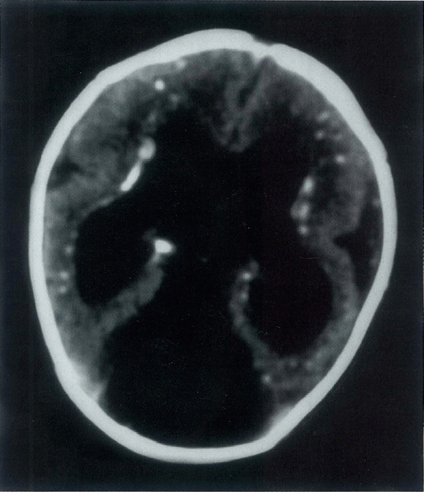
ａ 先天梅毒
ｂ 先天性風疹症候群
ｃ 先天性トキソプラズマ症
ｄ 先天性サイトメガロウイルス感染症
ｅ 先天性ヒト免疫不全ウイルス感染症
✅
ｄ 先天性サイトメガロウイルス感染症
FGR（小頭・低体重）・点状出血斑・血小板減少・IgM高値・肝障害＋脳室周囲石灰化は先天性サイトメガロウイルス感染症に典型的。
📸 先天性CMV感染症の所見
所見：低出生体重・小頭症（頭囲28cm）・血小板減少（7.3万）による点状出血斑・IgM高値（先天感染）・肝障害（AST/ALT/LD上昇）。頭部CT（画像は参照できないが）は脳室周囲の石灰化を示すと考えられる。
これらは先天性サイトメガロウイルス〈CMV〉感染症の典型（選択肢d）。
鑑別：トキソプラズマは石灰化がびまん性＋網脈絡膜炎（本例は眼底正常）、先天梅毒は骨病変・特有の皮疹、風疹は白内障・心奇形・難聴。
□ 主な母子感染
| 病原体 | 経路 | 影響 |
|---|---|---|
| 風疹 | 経胎盤 | 先天性風疹症候群：白内障・心奇形（PDA）・難聴 |
| CMV | 経胎盤・産道・母乳 | FGR・小頭症・脳室周囲石灰化・難聴・肝脾腫・血小板減少 |
| トキソプラズマ | 経胎盤 | 水頭症・脳内石灰化・網脈絡膜炎 |
| 梅毒 | 経胎盤 | 先天梅毒：肝脾腫・骨軟骨炎・血小板減少 |
| パルボB19 | 経胎盤 | 胎児貧血・胎児水腫 |
| HBV | 主に産道 | 児にHBIG＋ワクチンで予防 |
| HIV | 経胎盤・産道・母乳 | 帝王切開＋母児抗HIV薬＋断乳で予防 |
| HTLV-1 | 主に母乳 | ATL。断乳で予防 |
| GBS | 産道 | 新生児敗血症・髄膜炎。分娩時ペニシリン |
| 単純ヘルペス | 産道 | 新生児ヘルペス（脳炎・全身型）。初発は帝王切開 |
□ 選択肢の検討
| 選択肢 | 評価 |
|---|---|
| ａ 先天梅毒 | 誤り。骨軟骨炎・特有の皮疹が主で石灰化像は非典型 |
| ｂ 先天性風疹症候群 | 誤り。白内障・心奇形・難聴が三徴 |
| ｃ 先天性トキソプラズマ症 | 誤り。びまん性石灰化＋網脈絡膜炎（眼底正常で否定的） |
| ｄ 先天性CMV感染症 | 正しい。FGR・小頭・血小板減少・脳室周囲石灰化 |
| ｅ 先天性HIV感染症 | 誤り。新生児期にこの像は呈さない |
Q.328(100A-3)📷 画像
33 歳の2 回経産婦。妊娠30 週に少量の性器出血と子宮収縮を認め紹介受診した。前医で高血圧のため塩酸ヒドララジン20mg/ 日を服用していた。血圧164/96mmHg。浮腫は脛骨稜に軽度。内診で子宮口2cm 開大、経腟超音波による頸管長15mm、腟内容は白色透明。尿蛋白1 ＋、糖（－）。直ちに入院安静とし、ヒドララジンを40mg/ 日に増量しメチルドパも併用した。15 分周期の子宮収縮のため塩酸リトドリンを100μg/ 分で持続点滴した。2 週後、腹部緊満感はやや軽減したが血圧は160/100mmHg 前後で推移し上昇傾向。胎位は第2 頭位。羊水穿刺によるマイクロバブルテストは陽性である。胎児推定体重の推移を示す。
対応として適切なのはどれか。
対応として適切なのはどれか。
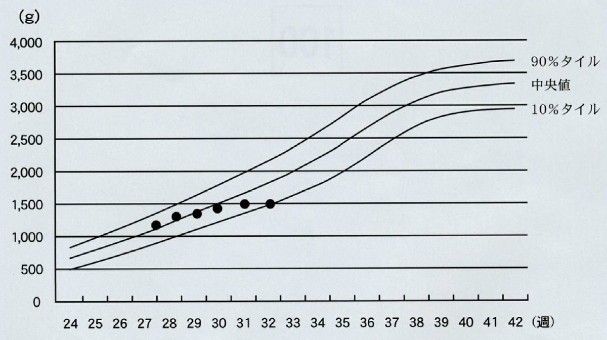
ａ 経過観察
ｂ メチルドパの増量
ｃ 塩酸リトドリンの増量
ｄ 副腎皮質ステロイドの投与
ｅ 分娩誘発
✅
ｅ 分娩誘発
妊娠高血圧腎症が薬物でも増悪し、マイクロバブルテスト陽性で胎児肺成熟が確認されたため、分娩誘発で娩出する。
🚼 HDP増悪＋肺成熟確認→娩出
妊娠32週相当で妊娠高血圧腎症が降圧薬（ヒドララジン増量・メチルドパ）でも血圧160/100と増悪傾向。母体のリスクが高まっている。羊水マイクロバブルテスト陽性＝胎児肺成熟が得られているため、これ以上妊娠を継続する利益より母児のリスクが上回る。
妊娠を終結（分娩誘発で娩出）するのが適切（選択肢e）。第2頭位で経腟分娩を試みられる。リトドリン増量（子宮収縮抑制の継続）はむしろ有害。
□ 選択肢の検討
| 選択肢 | 評価 |
|---|---|
| ａ 経過観察 | 誤り。血圧増悪で継続はリスク |
| ｂ メチルドパの増量 | 不十分。降圧強化しても根本解決は娩出 |
| ｃ 塩酸リトドリンの増量 | 誤り。娩出すべき状況で子宮収縮抑制は逆行 |
| ｄ 副腎皮質ステロイドの投与 | 不要。マイクロバブル陽性で肺成熟済み、待つ必要なし |
| ｅ 分娩誘発 | 正しい。HDP増悪＋肺成熟確認で娩出 |